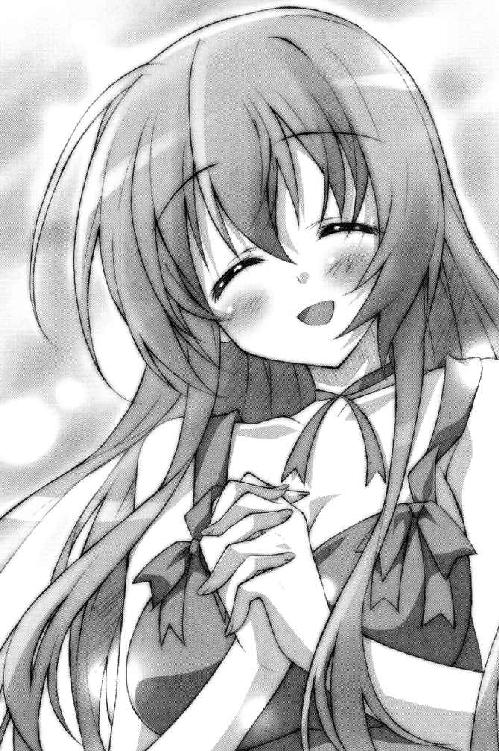

| Ｈ＋Ｐ4 －ひめぱら－ (富士見ファンタジア文庫) | |
| 風見 周 & ひなた 睦月 | |
| 富士見書房 (2011) | |

本作品の全部または一部を無断で複製、転載、配信、送信したり、ホームページ上に転載することを禁止します。また、本作品の内容を無断で改変、改ざん等を行うことも禁止します。
本作品購入時にご承諾いただいた規約により、有償・無償にかかわらず本作品を第三者に譲渡することはできません。
本作品を示すサムネイルなどのイメージ画像は、再ダウンロード時に予告なく変更される場合があります。
本作品は縦書きでレイアウトされています。
また、ご覧になるリーディングシステムにより、表示の差が認められることがあります。
口絵・本文イラスト ひなた睦月
目 次
プロローグ──あるいは、後宮における日常。
第一話 パジャマ おジャマ☆大作戦！
第二話 レイシア、はじめてのおでかけ。
第三話 まさぐれ 恐怖のベッドルーム・ラリー！
恐怖のベッドルーム・ラリー！
第四話 二人が夢に、近づくように。
エピローグ──あるいは、後宮における日常。
プロローグ──あるいは、後宮における日常。
『ちち温計』
こんな意味不明でバカバカしい単語は、トレクワーズ王国の後宮に召喚されなければ、恐らく一生使うことはなかっただろうと神来恭太郎は思った。
「恭太郎さま。お熱を計らせていただきますね......？」
夕刻。トレクワーズ王国。後宮。
恥ずかしそうにちょっぴり頰を染めて、第二王女のレイシア・ラトゥーイン・トレクワーズがベッドに近づいてくる。
彼女は類希なる美少女だ。優美な丸みを帯びた頰。ふんわりとカールした長い髪。長いまつげと大きな瞳。見ただけで優しくておしとやかだとわかるようなお姫さま然とした雰囲気だ。輝くばかりの気品と優雅さのようなものを漂わせている。レイシアが微笑めば、誰もが春の日差しを浴びたような気分になるだろう。
そんな王女さまは、水色のナース服に身を包んでいた。頭にちょこんと載っているナースキャップ。白いストッキング。膝上丈のスカート。
こんな看護師さんがいたら、患者さんは退院するのがイヤになってしまうに違いない。
特に注目すべきは、その胸元だ。
レイシアはとんでもない爆乳の持ち主なのだが──ナース服のボタンを外して、ちょっぴり前をはだけているのである。
レース地のブラに包まれた柔らかそうな双丘が恭太郎の眼前で揺れていた。
「ゲホっ......熱を計るのに、どうして服をはだけてるんだよ......ゲホゲホっ」
激しい咳をしながら恭太郎はベッドの上で後ずさる。少し動いただけで頭がクラクラして、耐え難い痛みが走った。
つい先日まで、恭太郎は右腕に包帯を巻いていた。高い塔の上から落ちてしまったため、骨を折ってしまったのだ。
その包帯もとれ、ようやく剣術の稽古も再開できると思ったのも束の間──。
不覚にも、風邪を引いてしまったのである。
（風邪なんて引いたのは、何年ぶりだろうな......。カラダがナマってる証拠だ。修行が足りないぞ、恭太郎っ！ この軟弱者め！）
自分自身を詰りながら後宮のベッドで寝込んでいた。
そしたら、お姫さまたちが『看病します！』と言って、ナースルックで部屋に押しかけてきたという次第だ。
レイシアはベッドの上に四つんばいになって、恭太郎を見つめてくる。深い胸の谷間に吸い込まれてしまいそうに思えた。
「ピコルさまから、『お熱を計るにはカラダの敏感な部分を押しつけるのが最も正確だ』と聞きました。私はその......胸が敏感ですので......」
「確かに敏感かもしれないけどっ！ 普通は手とかおでこだよっ！ ゲホゲホっ！」
つーか、明らかに誤解させようとしてるだろ、ピコル師匠めっ！
なおも後ずさろうとした恭太郎は、ベッドのヘッドボードを背中に感じた。これ以上は逃げられない！
「動かないでくださいませ、恭太郎さま。お身体に障ります......」
心配げに眉をひそめながら、レイシアはさらに近づいてきて──もにゅっ
（うおおおっ!?）
恭太郎のおでこの辺りに胸を押しつけてきた。柔らかすぎる爆乳にほっぺを挟まれて、気持ちよすぎるって!!
「どうしましょうっ!? みるみるお熱が上がっていきます......！」
当たり前だっ！ 『ちち温計』なんかで計られたら、体温も心拍数も血圧も上がる一方だよ！ つーか、ドキドキしすぎて死に至る！
「メルルもー！ メルルも計るよー！」
第五王女のメルルが、心配げにベッドに駆け寄ってきた。
彼女は黄色いナース服に身を包んでる。上着は丈が短くて、ぺたんこな胸の辺りを覆ってるだけ。可愛いおへそが丸見えだ。スカートもすごく短くて、ナマ足が目に眩しい。元気っ娘なメルルちゃんにはすごく似合っていた。
ベッドに飛び乗ったメルルは、恭太郎の右手を取る。
「二人がかりで計る必要なんてないって！」
「ダメだよ！ ちゃんと計らなきゃ！ じゅーだいなびょーきだったら、どうするのっ！ 看護師さんの言うことは聞きなさいっ！」
恭太郎を叱りつけながら、メルルちゃんは膝立ちになった。
「メルルはね、ふとももが敏感なんだよ。あんよでお熱を計ってあげるねっ？」
あ、あんよだって!? うわっ、やめてくれっ!?
──ぷにんっ
問答無用で、メルルちゃんのふとももの間に、恭太郎の手が挟まれてしまう。
言うなれば、『もも温計』だ！
スカートが短いから、トビカピバラがプリントされた可愛らしいぱんつがチラッと見えちゃってるんですが──っていうか、指先に若干ぱんつが触れてるんですがっっっ!!
ちっこいメルルちゃんのおまたに手を挟まれてるなんて状況的にヤバすぎる！
手を引っ込めなきゃと思うのだけれど、風邪＆むにむに攻撃のダブルパンチで、カラダが言うことを聞かない。
「おにいちゃんの手、すごく熱ぅい......。なんだかメルルも熱くなっちゃうよぅ......」
ぐああああ、このオマセっ娘を誰か黙らせてくれえええ。
「敏感な部分ですの？ 私の場合は......首筋ですわね」
第三王女のエリスもベッドに乗ってきた。恭太郎の左側に膝立ちになる。
エリスは黒を基調としたゴスロリっぽいナース服を身に纏っていた。黒地に白い十字の入ったナースキャップ。フリルのついたスカート。長くて綺麗な脚は、同じく白十字が刺繡されたストッキングに包まれている。
「フン、仕方がないから看病して差し上げますわ。這いつくばって感謝なさい。この私に風邪をうつしたら承知しませんからねっ！」
恭太郎の左手を握ったエリスは、そっと自分の首筋に押し当てた。
『くび温計』で、恭太郎の体温を計る。
「確かに熱いですわね......んっ」
「なにをヘンな声を出してるんだよ......ゲホゲホっ」
「し、仕方ないでしょうっ。くすぐったいんですの！ はぅんっ」
本当に首筋が敏感なようだ。ゾクゾクしてるみたいに、エリスは脚をモジモジさせている。そのようすは妙に色っぽい。
手を引っ込めようとしたけれど──うわ、ダメだ。やっぱり力が入らないよ。
微かに指先を動かすことしかできなかった。
エリスはぴくんぴくんとカラダを震わせる。
「あっ 手を動かしちゃダメですわ......あんっ 恭太郎の無礼者っ」
いちいち声を出さないでくれ！ ドキドキしちゃうだろ～～～っ！
「あわゎゎゎゎゎ......」
部屋の隅っこで、第四王女のアルトが唇を震わせていた。
彼女は従軍看護師みたいな服装だった。丸っこいナースキャップとロングスカート。大人しそうな見た目のアルトちゃんには、よく似合ってる。
「わわわ、私もお熱を計った方がよろしいでしょうか......？」
「アルトちゃんは参加しなくてもいいからねっ。マネする必要はないよ......ゲホゲホっ」
しばらく、熱を計っている他のお姫さまたちを見つめていたけれど──意を決したようにアルトは大きく頷いた。
「わかりました」
「よかった、わかってくれたんだね、アルトちゃん」
「私もお熱を計りますぅっ！」
「ええーっ!?」
「わ、私も頑張ろうって決めたんですっ。逃げちゃダメだよ、私っ」
自分を励ますみたいに、両肩の前できゅっと拳を握りしめたアルト。
その両手を下へおろして──って、なぜスカートに手を入れようとしてるんだ!?
「わわわわ......私はその......お、おしりが敏感なんですぅ......!!」
まさか、おしりで熱を計るつもりなのかー!?
耳の先まで真っ赤に染めながら、アルトちゃんはぱんつをおろした。片足だけぱんつから足を抜く。
当然、ロングスカートだから中はどうなっているかわからないけれど......足首の辺りに丸まっているぱんつが妙に色っぽい。
「は......恥ずかしいよぅ......」
今にも死んでしまいそうなぐらいにプルプル震えながら、アルトちゃんもベッドに乗ってきた。
「はうぅぅぅぅ......」
恭太郎のパジャマのズボンを少しだけたくし上げて、スネの辺りにそ～～～～っと腰を下ろそうとする。
「だだだ、ダメだっ！ やめてくれっ！ ゲホゲホゲホゲホっ!!」
相変わらず、ロングスカートだから中は見えない。
だけど、その中は『はいてない』ワケで！
そのまま腰を下ろしていったら──むにんっ
「はうっ」「ぬおっ!!」
恭太郎とアルトの悲鳴が重なった。
スネの辺りに柔らかすぎる感触がしたのだ。
アルトちゃんのおしり、柔らかすぎるよ!?
というか、『しり温計』で体温を計られたのは人類史上、俺が初めてじゃないのか!?
「恭太郎さま......すごく熱いですぅ......」
そう言った、アルトちゃんのおしりもすごく温かかった。
爆乳をおでこに押しつけながら、レイシアは首を傾げる。
「そういえばユフィナ姉さまはどうしたんでしょうか？ ピコルさまには五人で同時にお熱を計るようにって教わったのですが......」
「んとね、おねえちゃんのために用意されたナース服が恥ずかしすぎて着られないから、先に行っててって言われたよ」
メルルちゃんがお姉さんの疑問に答えた。
「そうですか......。じゃあ、このままお姉さまを待つことにしましょうっ」
「ゲホゲホゲホゲホっ!?」
喉の痛みのために声にならない。恭太郎はココロの中で悲鳴をあげる。
（このままの状態で待つのかよ!? もう俺は限界なんだ、離れてくれ～～～っ！）
四人のお姫さまに密着されてしまい、恭太郎の体温は急上昇。あまりにもえっちな状況すぎて、頭がクラクラする。なんだか気が遠くなってきた。
おや？ お花畑が見えるぞ？ あれはなんだろう......？ ちょっと行ってみようかな？
「どうしましょうっ。お熱がどんどんあがっていきますっ」
「おにいちゃんが死んじゃうよぅっ」
「死なれては困りますわっ！ 恭太郎に死なれては王座を継ぐことができませんのっ！」
「あ、あの......私たちだけで看病を続けてはどうでしょうか......？」
アルトの言葉に、レイシアが頷いた。
「そうしましょう。ピコルさまは『看病をすることで仲を深めなさい』と仰っていましたが......恭太郎さまに回復していただくのが先決ですからね」
「お熱を下げるにはどうしたらいいのかな？」
首を傾げるちぃ姫さま。
「うふふ、その点も抜かりはありませんよ。ピコルさまに解熱の方法も聞いてあります」
ああ、嫌な予感しかしないな......。
「お熱は汗をたくさんかくと下がるのだそうです」
「汗をかかせるんですの？ どうやって？」
「みんなで暖めて差し上げましょう。ハダカで恭太郎さまに添い寝するんです」
「雪山でそーなんした時みたいな感じだねっ！」
「ええ。ハダカで抱きついて、たくさん汗をかいていただくんですっ！」
やっぱり、そんなコトだろうと思ったよ......。
「なるほど。熱を下げるためには添い寝するのがいいんですのね。......はっ、そうですわっ。メモしておきましょう」
どこからともなく小さなメモ帳を取り出して、エリスはなにかをメモってる。
嫁入り前の婦女子とハダカで添い寝するなんて、その場で切腹せざるを得ない行動だ。
しかし、風邪のために抗う気力はなかった。「うぅ......」と唸ることしかできない。
「恭太郎さまを治して差し上げたいけど......は、ハダカなんて恥ずかしすぎて死んじゃいますぅ......」
アルトちゃんがメガネの下の瞳を潤ませる。
そんな妹の肩に優しく手をおいて、レイシアが微笑んだ。
「大丈夫ですよ。みんなでシーツにくるまりましょうっ」
「メルルはおにいちゃんになら見られてもへーきだけどねっ♪ メルルの旦那さまになる人だもんっ」
またもやおませなコトを言いながらも、メルルちゃんは恭太郎のカラダの上にシーツを掛けてきた。
全員がシーツの中に潜り込んできて、ひょこっとナースキャップのついた頭を出す。
恭太郎の顔のすぐ近くに、四人の王女さまが並んで顔を覗かせてる状態だ。
「それでは服を脱ぎましょう」
レイシアの言葉を合図に、シーツの中でお姫さまたちがもぞもぞしはじめる。
「シーツの中を覗き込んだら承知しませんわよ！」
「おにいちゃんが風邪っぴきじゃなかったら、脱がせてもらうのになぁ」
「はわわわわわ......」
そんなセリフを言いながらも、シーツの中から次々とナース服が脱ぎ捨てられていく。
全員がナースキャップをつけてるだけの状態になった。
メルルちゃんは、うつぶせになって頰杖つきながら「エヘヘ♪」と笑う。
「シーツの中はもうすっぽんぽんだよっ。見たかったら見てもいいよ？」
「恭太郎さまはおつらいんです。真面目に看病して差し上げなくてはダメですよっ」
「あっ、そうだった。ごめんね、おにいちゃんっ」
謝りながら、第五王女は恭太郎のパジャマのボタンに手を掛けてきた。
「それじゃ、おにいちゃんも脱ぎぬぎしようねっ。すぐにお熱下げてあげるからねっ」
四人のお姫さまの八本の手が伸びてきて、すぐに恭太郎の衣服は剝ぎ取られてしまう。
「ぱ、ぱんつは勘弁してくれ......ゲホゲホっ......」
苦しい息の下で懇願してみるけれど、容赦なくぱんつも脱がされてしまった。
シーツを被っているけれど、その下にいる恭太郎＆四人の姫さまは全裸なのだ。
《トレクワーズの五美姫》は、国民のアイドル的な存在であり、全員がとびきりの美少女として知られている。
そんな姫さまたちとハダカでベッドに横たわっているなんて──ドキドキするなって方がムリだ。
しかも、である。
レイシアは真剣な表情で頷いた。
「それでは、お身体を温めさせていただきますね」
そう言って──ふにゅんっ
全裸のままでレイシアは恭太郎のカラダに抱きついてきたのだ。
爆乳が胸板に押し当てられる。張りと弾力をあわせ持った、未曾有の柔らかさを感じる。いつまでも触れていたくなるような不思議な柔らかさだ。
それだけでもドキドキなのに、ムニっとしたおなかの感触や、スベスベした足の滑らかさも同時に感じられて──気が変になっちゃいそうだよ!!
「メルルもメルルもー！」
「きょ、恭太郎なんかと肌を合わせるなんて虫酸が走りますわっ！」
「あわわわわわわ......」
残る三人のお姫さまも、次々とくっついてくる。
エリスの見事な脚線美を誇っているふとももの感触。
アルトの大人しい性格の割りに自己主張が激しいおっぱいの柔らかさ。
成長過程にあるぷにっとしたメルルちゃんの胸の触り心地。
王女さまたちのボディーの触感が、一丸となって恭太郎の理性を責め立てる。
ヤバい......。これは気持ちよすぎるって......!!
加えて、体温が高い状態で抱きつかれているからシーツの中はとても熱くなっていた。
ベッドの上にいる、全員のカラダがしっとりと汗ばんでくる。
甘いような女の子の香りがシーツからふわりと立ち上ってきて、恭太郎の鼻をくすぐった。さらに気が遠くなってしまう。
「もっと汗をかいてくださいまし。なんなら、私に風邪をうつしてくださっても構いません......」
微かに濡れた胸元をむにむにと押しつけながら、潤んだ瞳でレイシアは恭太郎を見上げた。その表情は目眩がするほど色っぽく見えて。
『レイシアに風邪がうつるようなコトしちまえよ......！』
煩悩が悪魔のように囁いてきて。
風邪で弱っているにもかかわらず、カラダは正直だった。
恭太郎のアレは、しっかりと反応してしまったのだ......!!
「きゃっ！」
エリスが驚いたような悲鳴をあげた。
「ふともものあたりで、なにか動きましたわ？ なんですの、これ？」
レイシアがぼわっと顔を赤く染める。
「......恭太郎さまったら、興奮なさっちゃったんですねっ」
「恭太郎おにいちゃんのえっちぃ～～～」
オマセなお姫さまはうれしそうに微笑んでいる。
「なんの話でしょうか？」
アルトちゃんはよくわからなかったようだ。キョトン顔で首を傾げてる。
「あ、そうだっ。大切なことを思い出したっ。ししょーから、とっておきの風邪の治し方を聞いてたんだよっ」
「どんな方法なんですか？」
「んとねっ、風邪を引いた男の人のアレをこすってあげるとぉ......さきっちょから風邪の悪いバイキンがぴゅっと出るんだって！ そうすると風邪なんてすぐに治っちゃうってししょーが言ってたよ！」
待てえええええええええええええ!!
それは明らかにウソだよ！ ピコル師匠の妄言を信じちゃダメだってば!!
「アレ？ ぴゅっと出る？ 意味がさっぱりわかりませんわよ？」
首を傾げ続けてるエリスとは対照的に、レイシアは意味が理解できたようだ。
「まあ、そうだったんですか......。殿方のお身体には不思議な点が多いんですね......」
レイシアは耳の先まで真っ赤に染めながらも、小さく頷いた。
「お風邪が治るのなら、悪い菌を出して差し上げなくてはいけません」
「やってみようよ、おねえちゃんっ」
「では、一緒に頑張ってみましょうっ」
レイシア＆メルルがシーツの中に顔を引っ込めた。
ゴソゴソと恭太郎の下半身の方へ移動しようとする。
（いか～～～～～～～～～～～～～～～～～～～～んっっっ!!）
恭太郎はココロの中で絶叫した。
いくら風邪を引いてへろへろしているからって、そんな大胆なことをされるワケにはいかない！ ましてや、さきっちょからばい菌を放出しちゃうなんてもってのほかだ！
手足には力が入らない。全身の関節が軋んでる。喉が痛くて声が出ない。目眩がする。頭痛もひどい。身体中が悲鳴をあげていた。指先を動かすことさえ辛かった。
けれど、恭太郎は懸命に喉に力を込めた。
「ありがとう。もう治ったから看病はいらないよ！」
全身の力を振り絞って王女さまたちを押しのける。続けざまに、シーツからカラダを引き抜いた。
横たわるお姫さまをジャンプしてかわし、ベッドから飛び降りる。
「恭太郎っ、どこへ行くんですの！」
「お身体に障りますっ！ お戻りください！」
双子姫の声を背中に聞きながら、恭太郎は部屋から駆け出した。
全裸だけど、仕方がない！ 逃げ出す以外ないんだ！
ハダカのままで後宮の廊下を走る。
気を抜けば、今にもぶっ倒れそうだ。しかし、歯を食いしばって脚に力を込める。
ほとぼりが冷めるまで、どこかに隠れていなくっちゃ──
廊下の角を曲がったとき、声が聞こえてきた。
「似合っておりますのじゃ、ユフィナさま！ そのナース服で看病してやれば、恭太郎も喜びますじゃろう。仲が深まること間違いナシですじゃ！」
「む、ムリ言うんじゃないわよ！ こんなの誰にも見せられないってば！」
角の先で、二人の女の子がケンカをしていた。
白いローブを身に纏っている方がピコルだ。
背が低く、華奢な身体つき。床に届きそうなほどの長い髪。くりくりとした大きな瞳。桜色に輝く丸みを帯びた頰──どこからどう見ても一〇歳そこそこの少女にしか見えない。
だが、年齢は八〇〇歳を越えているらしい。《女の子》と表現するのはおかしいだろう。
もう一人の少女は、第一王女のユフィナだ。
恭太郎と同じ一六歳。ピコルよりも背が高く、プロポーションも素晴らしい。
......って、問題は年齢でも体型でもない。
ユフィナの着ている服装が大問題だった。
「女王陛下のご命令だから、頑張って着てみたけど──恭太郎に見られたら恥ずかしくて死んじゃうわよ！ 絶対にアイツの部屋になんて行かないからねっ！」
そう叫んだ王女さまが身に纏っていたのは──シースルーのナース服だとぅ!?
形は普通のナース服と変わらない。しかし、全体が透ける素材で作られていて、下着が丸見えになっていたのだ!!
と、そこでピコルが恭太郎に気付いた。
「おやおや、部屋に行く必要はなくなったようですじゃ」
第一王女がこちらを振り向く。
「恭太郎、どうしてここに......？」
「いろいろと......のっぴきならない事情があってさ、あはは......」
素っ裸の王仕さまと、スケスケのナース服に身を包んだ王女さまが向かい合った。
王女さまの視線がゆっくりと下へと向けられていく──
「──んなっ!?」
ユフィナが驚きの声を上げて。
（どうやら俺の人生は、ここまでのようだな......）
恭太郎は、そっと目を閉じた。
風邪を引いてへろへろの状態でユフィナにぶっ飛ばされれば無事では済まないだろう。
「来たれ、【烈炎神剣】！」
ゴオオオオオっ──大剣から噴き出す炎の音が鼓膜を揺さぶる。
「なんてもの見せるのよっ!! 恭太郎のバカ～～～～～～～～～～～っっ!!」
ユフィナの絶叫が後宮全体を揺るがして──
──どごぉあっっっっ!!
半瞬後、恭太郎のカラダはトレクワーズ王城の庭で放物線を描いていた。
死の間際には《走馬灯の如く》なんて表現が使われるように、過去の光景が次々とフラッシュバックするという。
恭太郎の脳裏にも、トレクワーズに召喚されてからの出来事が次々と浮かんできた。
例えば、あれはそう──
恭太郎がトレクワーズ王国に来て間もない頃のことだ。
第一話 パジャマ おジャマ☆大作戦！
「こ......これだけは言っておくわっ......」
天蓋のついた豪奢なベッドの上で膝立ちになっている白いドレスの少女は、恥ずかしそうに唇を震わせた。
窓から忍び込む冴え冴えとした月明かりに照らされた頰は朱に染まっている。
「私はあんたのことなんて嫌いなのよっ！」
羞恥心のためだろう。涙のたまっている瞳で、少女は睨み付けてきた。
そんな表情をしていても、少女の美しさは損なわれていない。
いや、『美しい』などという言葉では、到底彼女の容貌は表現できないだろう。
小ぶりな顔立ち。透き通るように白い肌。意志の強そうな大きな瞳。ほどよく通った鼻筋。桜色の唇。一つに束ねられた腰まである長い艶髪──全てのパーツが完璧なのだ。
それに加えて、彼女はプロポーションも素晴らしかった。
形の良い豊かすぎる胸。くびれたウエスト。むっちりとした丸みを帯びるおしり。綺麗な長い脚──どんなグラビアアイドルだってスタイルの良さに嫉妬するだろう。
「聞いてんのっ!? 返事しなさいよっ！」
「あ......ああ......わかってるよ」
ベッドの上で向かいあう少年──神来恭太郎は、ただ頷くことしかできない。
「だけど、仕方ないから......するわよ」
なにをするつもりなのか。
どちらかというと鈍感な恭太郎でも、さすがにわかる。
ここは魔術国家《トレクワーズ王国》にある後宮であり、
目の前にいる美少女は次代の女王となる権利を持つお姫さまの一人、第一王女のユフィナ・アストリア・トレクワーズであり、
そして、恭太郎は後宮にいるたった一人の《王仕さま》なのだ。
《王仕》とは、王女さまのお相手をするため後宮に入れられた少年のこと──
そんな二人がベッドの上で、することと言ったら、たった一つしかない。
「す、すっごく恥ずかしいのよ......。あんまり見ないでよねっ......」
幾度も躊躇いながら、ユフィナはドレスのスカートの裾をつまんだ。
膝立ちのまま、ゆっくりと、ゆっくりと。
スカートをめくりあげていく。
まず可愛らしい膝頭、続いて美しい曲線を描くふとももが露わとなる。
「あうぅ......」
恥ずかしげに唇を嚙みつつも、さらにスカートをまくっていく。
やがて、恭太郎の眼前に、白いレース地の下着が現われた。
あんまり見ないでと言われたにもかかわらず目が離せない。
「はうぅ......」
少年の視線を感じたのか、ユフィナは顔を背けた。耳の先まで真っ赤に染まっている。
それでも、スカートをめくる手を止めようとはしなかった。
胸元までまくりあげたため、白いおなかや可愛らしいおへその辺りまで見えてしまう。
大きな胸の下で、スカートの裾をぎゅっと抱きしめた。
「これも、国民を救うためだもん......」
華奢な肩が震えている。
ふるふる。ふるふる。ふるふるふるるん。
肩が震えるのに合わせて巨乳も柔らかく揺れている。
「あんたの好きにしていいわよ......」
ごくり──恭太郎は思わず生唾を飲み込む。
「い......いいのか......？」
「仕方がないでしょ？ 恭太郎のコトなんて大嫌いだけど......後宮にはあんたしか王仕さまがいないんだもんっ。トレクワーズ王国を救うにはあんたに頼るしかないのよっ」
恭太郎は吸い寄せられるように、少女に近づいた。震えている肩にそっと触れる。
ピクンと少女の身体が震えた。
「ちょっ......ちょっと待ってっ」
「どうしたんだ......？」
「あのっ......。私はハジメテだから......そのっ......第一王女として命じるわっ」
ユフィナは、普段は勝ち気で元気いっぱいな少女だ。しかし、今はそんな雰囲気は微塵もなかった。せっぱ詰まったようなか細い声で、少女が言いつのってくる。
「や......優しくしなきゃ許さないからっ」
「俺も初めてだから、うまくできるかわからないけど......その......善処するよ」
恭太郎の言葉を聞き、ユフィナは観念したように小さく頷いて、
「はぁ────っ！」
気合いと共に飛びかかってきた──!?
×××
「 るぉぅわっ！」
るぉぅわっ！」
人類の言語では表現不可能に思える悲鳴をあげて、神来恭太郎は目を覚ました。
視線の先にあるのはユフィナのハダカ──ではなく、白い天井。
「ゆ......夢か......」
額の汗を手で拭った。窓の外には目映い旭光が輝いている。ルリ色の羽を持つ小鳥が、窓辺で朝を唄っていた。
夜明け前には起き出す恭太郎にしては珍しく、寝すぎてしまったようだ。
身体を起こしつつ、呻くように呟く。
「なんつー夢を見てるんだ、俺は......」
ユフィナとお世継ぎを作ろうとするなんて、あり得ないことなのに......。
というか、あんないかがわしい夢を見るなんて男として恥ずべきことだろ。姉上に知れたら半殺しにされるところだよ......。
恭太郎は、深いため息を吐く。
淫らな夢を見てしまった理由には心当たりがある。ありすぎる。
彼がいるのは、トレクワーズ王国にある後宮──ハーレムの一室なのだ。
一人で眠るには大きすぎるベッドや、各部屋に設けられている豪華すぎるバスルーム。白大理石張りの壁に彫られた絡み合う男女のレリーフなどが、この部屋の施設の存在理由を如実に示していた。
恭太郎は普通の少年に比べたらストイックな方だと自負している。
しかし、年齢的には多感な高校二年生なのだ。後宮なんて場所に放り込まれたら妙な夢を見てしまっても仕方があるまい。
と、恭太郎はもう一つ、淫夢を見てしまった理由に気がついた。
窓の外から微かに、ユフィナの裂帛の気合いが聞こえてきたのだ。
「たぁ──っ！」
気合いに続けて、甲高い金属音が響いた。
そして、地鳴りのような大観衆の歓声。
「......なにをやってるんだ？」
ベッドを降りた恭太郎は素早く身支度をして、唯一の私物である朱塗りの木刀を握り締め後宮の部屋を飛び出した。
×××
トレクワーズ王城は、全体が白大理石で造られた巨大で壮麗な建物だ。敷地は広大で、城壁の内側に小さな街が収まってしまうのではと思うほどである。
精緻な彫刻を施された城門の前には、これまた広々とした石畳の広場があるのだが......城壁の尖塔から外を窺った恭太郎の目に異様なものが立っているのが見えた。
一言で表現するなら──鋼鉄の巨人。
身の丈四メートルはあろうかという巨大な鉄の鎧が、分厚い鉄塊のような蛮刀を振りまわしていたのだ。
ヴォン！──凄まじい風鳴りが鼓膜を揺さぶった。
「そんな攻撃、食らわないわよっ」
右腕に巨大な手甲を装備した第一王女──ユフィナは素早く跳躍。
戦闘用の白いドレスを翻し、鉄巨人の攻撃を巧みにかわした。
「えいっ！ たあっ!!」
裂帛の気合いと共に炎に包まれた大剣で応戦する。一合切り結ぶたびに、目映い火花が弾け散った。
敵国でも攻めてきたのか？ と一瞬思ったが、すぐにようすがおかしいことに気付く。
戦うユフィナや鉄巨人をドーム上のベールが覆っているのだ。そして、その周囲を群衆が取り囲んでいた。
「がんばれ、ユフィナさまー！」「危ないっ！」「なんと凛々しいお姿でしょう！」「きゃー、素敵！」「ありがたやありがたや......」
幼い少女が憧れの表情で、またある青年はポーッと見惚れて、お婆さんは拝みながら──老若男女、さまざまなタイプの人たちが戦うユフィナのようすを見守っている。
「さすが、ユフィナさま......お強いなあ」
「《トレクワーズの五美姫》がいれば、この国は安泰だよ。商売にも精が出るってもんさ」
行商人風の男性が、そんな風に語っている声が聞こえてきて、ようやく恭太郎にも戦闘の意味に見当がついた。
「デモンストレーション、なのか......？」
トレクワーズ王国のあるウィッチェリア大陸は、女性しか魔法を使えない。
そのため、国家を統治するのも女性なら、戦闘を行うのも女性なのだ。近隣諸国は戦闘用魔法を使える魔女によって編制された強力な軍隊を組織している。
ところが、トレクワーズ王国は軍隊を持っていないのだ。代わりに、強大な魔力を誇る五人の王女さま──《トレクワーズの五美姫》が国を護っているのである。
恐らく目の前で繰り広げられている戦闘は、国民に王女たちの魔力を見せることで、トレクワーズ王国は安全だと知らしめるための示威行動なのだろう。たぶん。
「ＧＯＡＡＡＡＡＡＡＡＡＡＡＡ!!」
鉄巨人が咆哮した。続けざまに巨体に似合わぬ速度で斬撃を放つ。
「ふッ──!!」
舞うような美しい身のこなしでユフィナは蛮刀の攻撃をかわし、炎に包まれた大剣を横凪ぎにする。
「はァ──ッッ!!」
ガギィっ!! ──攻撃が鉄巨人に直撃。
鋼鉄の巨人はよろめき、そのまま倒れる──かと思われた。しかし、すぐに体勢を立て直し、地響きを立てて突進してくる。
「......んもうっ、カタいわねっ！ 女王陛下ってば魔力込めすぎっ。ホントにご病気なのかしら......？」
微かに聞こえたユフィナのグチに応えるかのようなタイミングで、ドーム状のバリアの中に飛び込む三つの人影があった。
「ユフィナ姉さま！ お手伝い致します！」
おっとりした感じの髪の長い第二王女──レイシアが、身の丈の二倍はありそうな巨大な槍を掲げる。
槍の先端に魔法陣が浮かび上がった。直後、流水が迸り、鉄巨人に襲いかかる。
「姉さまばかり目立ってズルイですわっ！」
死神が持つ鎌のような巨大鎌を携えた縦ロールの第三王女──エリスが非難がましい口調で叫んだ。
巨大な鎌を振るうと、刃からいくつもの紫色の衝撃波が発生。敵を斬りつける。
「メルルにもやらせてよっ！」
ミニスカートのドレスをひらめかせ、ツインテールの第五王女が戦いの場に躍り出る。
身体と同じくらいの大きさがある斧を軽々と振り回して──どーんっ！
刃から稲妻が放たれ、鉄巨人を打つ。
三人の姫の攻撃によって、鋼鉄の巨人の突進が止まった。
観客たちのボルテージが高まる。
地響きのような歓声の渦の中、ユフィナは嬉しそうに微笑んだ。
「少しだけ、足止めしててね」
まぶたを閉じたユフィナは炎に包まれた大剣を天に向け、口の中でなにかを呟きはじめる。呪文を詠唱しているのだ。
ユフィナを中心に、風が渦巻きはじめた。
ポニーテールの髪や、スカートの裾が美しくはためく。
数瞬後、第一王女は目を見開いた。鉄巨人を真っ直ぐに見据える。
「みんな、避けてっ！」
その声に合わせ、三人の王女が散開。
ユフィナは巨大な剣を振り下ろした。
「【火竜演舞】」
凄まじい勢いで空中に魔法陣が描かれる。
爆炎が刀身から竜のように迸り、鉄巨人を包み込んだ。
目映い炎が消えたのと同時に──鋼鉄の巨体が砂となって崩れ落ちる。
観客たちの大歓声が大地を揺るがした。
姫たちの名前を連呼し、中には感極まって泣いてる人までいるようだ。国民にとって、王女たちは王国の守護者というだけでなく、アイドルのような存在なのである。
声援に応えるように、王女たちはスカートの裾をつまんで礼をした。
ほどなく、彼女たちの姿がかき消える。
原理はよくわからないけれど、どこか別の場所で戦闘は行われていて、映像だけが魔法で投影されていたのかもしれない。
「いつ見ても、すごい力だな......」
恭太郎は思わず感嘆の声を漏らしてしまった。『魔法を使うお姫さまが国を守っている』と言われてもピンと来ないのだが......魔法の力を見せつけられると納得せざるを得ない。
そのとき、観客たちの話し声が聞こえてきて──恭太郎は暗い気分になってしまった。恭太郎と大差ない年齢の青年たちが城壁の下辺りにたむろって話をしている。
「これで無事にお世継ぎができれば、言うことナシだよ」
「後宮の王仕さまは全員、カルタギア帝国にさらわれちまったんじゃなかったか？」
「おまえ知らないのかよ？ 姫さまたちが新たな王仕を召喚したんだぜ」
「くぅっ、オレにも魔力があればユフィナさまと結ばれる可能性があったのに！」
「ばーか、おまえなんか相手にされないよ」
「ちくしょうっ。召喚された王仕がどんなヤツか知らないが代わって欲しい！」
彼らの話している《召喚された王仕》とは、恭太郎のことだ。
「......代われるものなら代わってやりたいよ」
手の中の朱塗りの木刀を見つめ、深いため息を吐く。
そもそも、である。
恭太郎はトレクワーズ王国に生まれた人間ではない。現代日本の高校二年生だ。
だが、少しばかり普通の高校二年生とは異なる点があった。
彼は『カタブツ侍少年』なのである。
剣術を伝承する神来家の長男として生まれた恭太郎は、実の姉によって厳格に育てられたのだ。
例えばあれは──中学一年のことだったろうか。
同じクラスのおっぱい好きの悪友がエロ本を貸してくれたことがある。
雑誌のタイトルは『巨乳大作戦』。意味はよくわからないけれど、表紙に掲載された水着の巨乳少女のグラビアは魅力的だった。
断ったのだが、どうしてもと言うので仕方なく借り受けることにしたのである。その頃にはすでにカタブツ少年の片鱗を見せつつあったから、友人も面白がっていたのだろう。
とはいえ、中学生である。
厳格に育てられた恭太郎だが、女の子に興味があるのも確かなのだ。
家に帰った恭太郎は自室にこもり厳重に鍵を掛けた。ついでに関係各所に鳴子を仕掛け、姉の接近に備えた。備えまくった。エロ本を見ていたなんて知れれば、なにをされるかわかったもんじゃないからだ。
で。
机に向かって鎮座した恭太郎は居住まいを正した。試合をするような緊張感を漂わせつつ、エロ本を開き最初のグラビアを見ようとした瞬間に──
「きょ～～、お～～、た～～、ろ～～、おおおおおおぉぉ～～～～～～～～......!!」
天井のハメ板が外れており、悪鬼のような形相の姉がのぞき込んでいた。その手には伝家の宝刀《神斬り》が握られている。
全てが終わった──。そう、思った。
「きぃえええええええええええぇぇぇぇぇぇぇ────っっっ!!」
飛び降りざまに斬り掛かってくる姉の一撃を辛うじて避ける。エロ本が机ごとまっ二つになった。
「す、すみません、姉上──っ！」
大急ぎで土下座した恭太郎を桜子は嚙みつかんばかりに睨み付けながら、破れて宙を舞っているエロ本の表紙を摑みとった。
「こんな卑猥な雑誌を読みふけるなど......言語道断です！」
「申し訳ございません！」
「しかも、『巨乳大作戦』とはなんですか！ 破廉恥にもほどがあります！」
「ぐあっ!?」
姉は真剣の峰で思い切り殴打してくる。
「いいですか！ 神来家の男子は、そのような卑猥な妄想に耽ってはならぬのです！ 一生を添い遂げると心に決めた相手以外とは、そーゆー行為に及んでもなりませんッ！ それをなんですかっ！」
表紙のグラビア少女を一瞥した姉は、宝刀を振るった。細かく斬り割かれた表紙がさくら吹雪のように部屋中に舞い散る。
「このようにふしだらな女にうつつを抜かすなどと！ 許されることではありませんッ！ 恥を知りなさい、恥をッ！」
「すいませんすいませんすいませーん！」
「天誅、天誅、天誅────ッ」
「うぎゃ～～～～～～～～～～～～～～～～～～～～～～～～～～～っっ!!」
恭太郎は宝刀の峰でボコボコにされた上、額に《破廉恥》と書かれた半紙を貼られ、道場の庭に生えている銀杏の木に逆さまにぶら下げられ三日三晩放置されたのである。
遠い異世界へ召喚されてしまった今でも、姉上の声が鮮明に蘇ってくる気がした。
『男女七歳にして席を同じくせずですよ！』
『運命の相手と一生添い遂げることこそ、本懐というものです！』
『ふしだらなことをしたら許しませんッ！』
般若のような姉上の顔を思い出し、恭太郎は恐怖のあまり気絶しそうになってしまった。朱塗りの木刀を握り締めたまま、力なく尖塔の壁に寄りかかる。
（俺にはお世継ぎ作りなんてできないんだ......。頼むから誰か代わってくれ......!!）
「こんなところで油を売っておったか！」
「ぐぼあっ!!」
いきなり後頭部に跳び蹴りを入れられた。
頭を押さえながら振り返る。
白いローブに身を包んだ小さな女の子が、偉そうにふんぞり返っている。
後宮の教育係であるピコルだ。
「ピコル師匠!? なにするんですか！」
「それはコッチのセリフじゃっ！ ボンヤリしてる場合ではないのじゃーっ！」
ピコルはぷくっと頰を膨らませ、手にした教鞭を振り回して怒鳴り散らす。
「姫さまがたは、戦いを終えてお疲れじゃ！ 肩でも揉んで差し上げるのじゃ！」
「なんで、俺がそんなこと......」
グリグリグリグリっ！ ──反論を封じるように、恭太郎の頰に教鞭を突きつけた。
「恭太郎......。おまえは、元の世界に戻りたいんじゃないのかのう......？」
「そりゃ戻りたいですよ」
「ならば王女さまがたと親密になって、お世継ぎを作るほかあるまい！ それ以外に元の世界に帰る方法はないのじゃからな！」
「く......っ！」
「わかったらさっさと行くのじゃ！ 逆らったら死刑に処すのじゃー！」
生殺与奪権を握られてしまっている恭太郎には、拒否権なんてものは存在しなかった。
「わかりました。行きますよ......はあああ」
彼にできたことと言えば、深いため息を吐くことぐらいなのである。
×××
「見ていてくださったんですね。なんだか恥ずかしいです」
長椅子に寝そべるように腰掛けて女官たちに濡れ髪を拭いてもらいながら、第二王女のレイシア・ラトゥーイン・トレクワーズが嬉しそうに微笑んだ。
ここは王宮の一角にあるパウダールームのような部屋だ。微かに水音が聞こえてくるから、風呂場が近くにあるのかもしれない。
「謙遜することはないだろ。いつもながら凄い魔法だと思ったよ」
視線を彷徨わせつつ、恭太郎は答えた。
レイシアと向かい合うと、いつも目のやり場に困ってしまう。
彼女はとんでもなく胸が大きいのだ。ウエストはきゅっと締まっているのに、胸元はメロンぐらいの大きさに膨らんでいる。
しかも、シャワーを浴びた後だからか、薄手のガウンを着ているだけだった。カラダのラインがくっきりと浮かび上がっており、合わせの部分から深い胸の谷間が──って、ダメだ！ なにを見てるんだ、俺はっ！
「私なんてまだまだです。トレクワーズを守るために精進しなくてはなりません。──ありがとう、もういいですよ。私がいいと言うまで、ここには誰も入れないように」
女官たちが深々と礼をして去っていく。部屋には二人だけとなってしまった。
レイシアは長椅子に腰掛け直し、恭太郎に嬉しそうな笑顔を向けてくる。
「ピコルさまに伺いました。恭太郎さまが肩を揉んでくださるそうですね。すごく嬉しいですっ。私、肩が凝りやすくて」
そんな重たそうなものを二つもぶら下げていれば、そりゃあ肩も凝るだろうなあ......。
「ツライなら、俺なんかより本職の人にしてもらった方がいいんじゃないのか？」
「いえ、どうせなら恭太郎さまにしていただきたいです。お願いしますっ」
期待に満ちたキラキラした瞳で恭太郎を見つめてくる。そんな目で見られたら、やらざるを得ないよな......。
女の子のカラダに触れるなんて、本来は避けたいところだが......仕方ない。マッサージならば、姉上だって文句は言わないだろう。
「わかった。痛かったりしたら言ってくれよ」
恭太郎は長椅子に腰掛けるレイシアの背中側に回って──ドキッとしてしまった。
レイシアの胸の谷間を上から覗き込むようなポジションなのだ。洗い髪からはフローラルな香りが漂ってきて、気が遠くなりそうだ。
（これは心臓に悪いな......。さっさと終わらせてしまおう......）
顔を背けつつ、恭太郎はレイシアの肩に触れた。確かにかなり凝っているようだ。
「可哀想に。これはツライだろうな......」
固まった筋肉をほぐすように揉んでやる。
「はゎゎっ」
「どうした？ 痛かったか？」
「す、すごく気持ちいいですぅ...！ 恭太郎さまはお上手なんですね」
「肩もみは得意なんだよ。姉の肩をいつも揉まされていたからな」
「そうなんですか......あぅっ 気持ち良すぎますぅ...あんっ」
声がいちいち色っぽいのが気になるが......うん。喜んでくれているようでなによりだ。
肩をほぐし、強ばっている背中の筋肉も揉みほぐしてあげた。
そろそろお終いに近づいた頃、レイシアが声を掛けてきた。
「あの...もう少し前の方もお願いします」
「前？ 構わないが......」
後ろから手を伸ばし、鎖骨の下辺りを指で押す。この辺りにもツボがあるのだ。
「もう少し下の方が凝ってるんです......」
「ん？ ツボを間違えたかな......」
さらに下の方を指で押す。ピクンとレイシアの肩が震えた。
「その...もっと下の方です......」
「もっと、って......ええっ!?」
さらに下にあるのは、薄手のガウンに包まれた大きな丸みなワケで！
「ココが凝ってるんですっ」
恭太郎の手を摑んで──もにゅんっ──レイシアは大きな胸に押し当てた！
手のひらに不思議な張りのある柔らかな感触が伝わってくる。
「いやいや、ゼンゼン凝ってないだろっ」
むしろ、柔らかすぎるって！
レイシアは肩越しに振り向いた。瞳を潤ませ耳の先まで真っ赤に染めて、レイシアは言い募る。
「ピコルさまに教えて頂きました。殿方はマッサージにかこつけて...その...そーゆーコトをなさるって」
「なな、なに言ってんだよ!?」
「これもトレクワーズ王国を救うためですから......私は構いません。恭太郎さまの好きなだけ揉んでくださいっ」
凄まじく魅力的な言葉に聞こえた。恭太郎の脳内で煩悩と理性の戦争が勃発する。
情勢は煩悩の圧倒的優位だった。手のひらに力を込めて、柔らかい胸を揉んでしまいたい衝動に駆られる。
しかし──ナケナシの理性を総動員して、レイシアの手を振り払った。
「す...すまんっ！ 勘弁してくれぇっ！」
「恭太郎さまっ」
後宮の王仕さまは部屋を飛び出した。脇目もふらず王宮の廊下を駆ける。
『神来家の嫡子たるもの、敵前逃亡など許されません！』
恭太郎を育ててくれた実の姉、桜子は常々そう口にしていた。
もしも敵対していたのが悪漢であったなら、恭太郎は逃げずに得意の剣術で立ち向かっていただろう。どんなに強い相手だろうと怯むことなどない。
しかし、相手が王女さまとあっては話は別である。恭太郎に立ち向かう術などありはしないのだ......。
×××
王宮の廊下からようすを窺っていたピコルは地団駄を踏んだ。
「今度こそ我を忘れてレイシアさまに襲いかかると思ったのじゃが......恭太郎のヤツめ！ なんというヘタレっぷりじゃ！」
ぷくっと頰を膨らませ、手にした教鞭を振り回して怒鳴り散らす。
「そもそも、王女さまのお誘いを断るなど言語道断じゃ！ 本来なら死刑になるところじゃぞっ！」
しかし、幼い顔立ちに似合わない難しい表情を浮かべつつ腕組みをして。
「うむむむ～。とはいえ、恭太郎以外に後宮には王仕がおらんのじゃ......」
ユフィナたち《トレクワーズの五美姫》とお世継ぎを作るため、国中から強い魔力を持つ王仕さま候補の少年たちが集められた。
その数──二〇〇〇人。
だが、敵国によって、少年たちは全員がさらわれてしまったのだ。
そこで召喚されたのが、神来恭太郎である。
彼こそが、女神によって選ばれた《最も王仕に適した少年》なのだ。
恭太郎との間にお世継ぎを作れば、最強の後継者が生まれることは疑いようもない。
女性しか魔法を使えないウィッチェリア大陸において、強い魔力を持つ女児が産まれるということは国家の発展に直結するのだ。
「あやつに、その気になってもらわざるを得ぬ......。どうしたものかのう......？」
唸っていたピコルは、ポンっと手を叩いた。
「うむ！ 正攻法が一番なのじゃ！ 恭太郎とて男のハシクレ。女の子に迫られれば、手を出してしまうに違いないのじゃっ！」
腰に手を当てて、ピコルは高笑いをする。
「覚悟しておれ、恭太郎！ 貴様の童貞も今宵かぎりじゃー！ ふゥはははーっ！」
×××
トレクワーズ王国の後宮は、築造から数百年が経過していると言われる巨大建築物だ。現在、王仕さまは恭太郎しか存在しない。だが、元は二〇〇〇人の少年が収容される予定だったというのが頷けるほどの広大さである。
内部には王仕たちの居室だけでなく、大きな浴場や食堂。そして、さまざまなプレイに適した部屋が用意されていた。
女王が代替わりするたびに増築や改築が行われ続けたため、内部構造は迷路のように複雑。時折、王仕の世話をする女官が迷子となり、捜索隊が出されることもあるほどだ。全ての部屋を把握しているのは、後宮のヌシと呼ばれるピコルだけだと言われている。
んで。
そんな後宮にある特殊な部屋に、第一王女ユフィナのイライラしたような声が響き渡った。彼女は可愛らしい寝間着に身を包んでいる。
「もうっ、なんで私があんたなんかと一緒に寝なきゃいけないのよっ！」
「俺に言わないでくれよ......。この部屋にムリヤリ連れてこられただけなんだから......」
ベッドの隅っこに腰掛けていた恭太郎は、ため息を吐きつつ首を巡らせた。
高校の教室くらいの広さがある室内。その大半を埋め尽くすほどの大きさのベッドが一つ置かれている。一度に一〇人以上が寝られそうなサイズだ。
ピコルに「ココで姫さまたちと一緒に寝るのじゃー！」なぁんて命令されてしまったのである。断固拒否しようとしたのであるが......ピコルはこんな風に付け足した。
「今夜は、お世継ぎづくりをしなくてもいいのじゃ。姫さまと共に夜を過ごして、より親密になるのが目的じゃからな。姫さまがたにも恭太郎には指一本触れぬようにとお願いしてあるのじゃ。カタブツな恭太郎でも、それならば文句なかろう？」
断れば死刑と言われるに決まっている。
（女の子と同衾するなんて、許されることじゃないが......迫られたりしないなら、間違いは起こらないだろう）
そう考えて、恭太郎はピコルに従うことにしたのだ。
「失礼いたします、恭太郎さま」
続いて、第二王女のレイシアもベッドルームに入ってくる。それが彼女の寝間着なのか、ガウンのようなものを羽織っていた。相変わらず、胸元は大きく隆起している。
「こんな場所で眠るなんて、高貴なる私には相応しくありませんわっ！」
金髪を見事な縦ロールにしている第三王女、エリス・レムリス・トレクワーズが、腰に手を当ててベッドルームを睥睨する。鋭い眼差し。冷たい美貌。全身から年齢にそぐわない威厳と自信のようなものを漂わせる少女だ。
「えへへ、みんなで一緒に寝られるなんて楽しみだねっ♪」
元気一杯の声と共に部屋に入ってきたのは、長い髪をツインテールにしている第五王女、メルル・シュシュリン・トレクワーズだ。
一三歳とは思えないくらいに手足が華奢で背も低い。身体つきも幼く、胸はぺたんこ。小学生くらいにしか見えない。エリスとメルルの二人も、レイシアと同じようなガウンを羽織っていた。
そして、最後に入ってきたのは。
「はゎゎゎ、すみません。私なんかが一緒で本当にすみませんっ！ ピコルさまが私も同じ部屋で寝るようにって仰って、あゎゎゎ」
第四王女のアルト・ファローズ・トレクワーズである。可愛らしいピンク色のパジャマに身を包み、ナイトキャップを被ってる。黒髪をおかっぱにしている美少女なのだが、怯える小犬のようにオドオドビクビクしている。他の王女と違って彼女は魔力が低いらしく、お世継ぎづくりには参加しないらしい。
以上でトレクワーズの五人のお姫さま、《トレクワーズの五美姫》が勢揃いしたワケだ。
これから彼女たちと一晩過ごすかと思うと、気が重くなってしまう。というか、眠れる気がしないのだが......。
「恭太郎、勘違いしないで！」
怒ったように眉を釣り上げ、ユフィナがビシッと恭太郎を指さして、
「今夜はお世継ぎづくりに来たワケじゃないわ。女王陛下に命じられて、仕方なく同じ部屋で眠りに来ただけなんだからねっ！」
本来なら五人姉妹の長女であるユフィナは、率先してお世継ぎづくりに精を出すべきだろう。しかし、彼女は《いくら国家の危機とはいえ、好きでもない人とそーゆーコトはしたくない》と考えているようなのだ。
「絶対に私に近づくんじゃないわよ！ 妹たちにも手を出さないようにね！ ヘンなコトしたらぶっ飛ばしてやるんだから！」
「それはコッチのセリフなんだけどな......」
やれやれと恭太郎は肩を竦めた。
「返事はどうしたのよ、返事はっ」
「わかってるよ。頼むから、きみたちもなにもしないでくれよな。ピコル師匠からは『指一本触れるな』って言われてるはずだ」
「フン、なにもするわけないじゃない！ この無礼者っ！」
恭太郎を威嚇するように睨み付け、ユフィナは巨大なベッドへと上がった。こちらに背を向けてベッドの端に寝転がり、シーツの中に潜り込む。
あゎあゎと唇を震わせていたアルトは、ユフィナの隣に申し訳なさそうに横たわった。
「私は真ん中に寝ますわっ！」「もう寝ちゃうのー？ みんなで遊ぼうよっ！」「メルル、早くお布団に入りなさい。灯りを消しちゃいますよ？」「わーん、待って待ってー」
レイシア、エリス、メルルの三人もそれぞれにシーツに潜り込んだ。
何事もなく夜が明けることを祈りながら、恭太郎はユフィナとは反対側のベッドの端へ横になる。
ほどなく、指を弾く音が聞こえて──魔法灯の光が小さくなった。
（さっさと眠ってしまおう......）
女の子たちに背を向けて、恭太郎は頭までシーツを被る。
目を閉じ、小声でひつじを数えはじめた。
どのくらいの時が経っただろうか。
窓越しに聞こえるフクロウの鳴き声と共に、ユフィナの微かな寝息が恭太郎の耳に届く。
「ひつじが二〇三五匹......ひつじが二〇三六匹......ひつじが二〇三七匹......」
ストイックとはいえ、彼も男子高校生のハシクレなのである。
（眠れるワケねええええええええ!!）
可愛い女の子と同じベッドに入っていると考えるだけで、眠れなくなってしまうのは仕方がないことなのだ。
「恭太郎さま......」
そのとき、背後から声を掛けられた。
「れ、レイシア？」
慌てて振り返る。離れて眠っていたはずのレイシアがすぐ近くにいた。
ガウンを身に纏っているメルルも、恭太郎の顔を覗き込んでいた。
「えへへ、よかったぁ、もう眠っちゃったかと思ったよぅ」
「いや、俺は寝ています......。これは寝言です......」
「起きているではないですかっ。ウソをつくんじゃありませんわっ」
ベッドに膝立ちになったエリスが恭太郎を睨め付けてくる。
「もう眠るんじゃなかったのか？」
「せっかく恭太郎さまと同じベッドにいるんですもの。眠ってしまうなんて、もったいないです」
「そうですわっ。私は一刻も早くお世継ぎを作って王位を継ぎたいんですの！ 寝ているヒマなんてありませんわっ！」
「ユフィナおねえちゃんが寝ちゃうの待ってたんだよー。えっちなことしようとすると怒っちゃうからねっ♪」
獲物を狙うネコのようにガウン姿の三人が、恭太郎の方へ近づいてくる。
「ままま、待て！ 待ってくれ！」
飛び起きた恭太郎は、ベッドの上で後ずさる。しかし、すぐに背中に固い壁の感触。追いつめられてしまった。
「今日はピコル師匠から、俺には指一本触れないようにって言われてるはずだろ？」
「ええ。その言いつけは守るつもりです」
レイシアは恭太郎の目の前で止まった。
ガウンに手を掛け、ゆっくりと脱ぎ捨てる。
口から心臓が飛び出るかと思った。
レイシアは、スケスケなローブというかネグリジェを着ていたのだ。下着が完全に透けてしまっている。
レイシアの下着姿は、凄まじいインパクトだった。胸があまりにも豊かなために、白いレース地の下着から柔らかな丸みが思い切りはみ出してしまっている。今にもブラジャーがはち切れて、ぷるるんと爆乳がこぼれ落ちてしまいそうなほどだ。
って、いかん！ なにをマジマジと見つめているんだ！ 下着姿の女の子を凝視するなんて、男の風上にもおけないぞ！
慌てて顔を背けようとした先では、エリスとメルルもガウンを脱ぎ捨てていた。
「まったく、どうして私がこんな格好をしなくてはいけないのかしらっ」
文句を言いつつ微かに頰を朱に染め、エリスは美しい肢体を恭太郎に見せつける。彼女もシースルーのビスチェを身につけていた。
二卵性の双子であるレイシアと違って、エリスは胸が小さい。だが、なめらかな肌に黒いレースの下着がこれ以上ないほど似合っていた。手足は伸びやかで、ガーターベルトのつけられた脚の美しさは恭太郎の心拍数を上げるのに十分な効果を発揮している。
「どうどう？ この格好かわいいでしょ？」
メルルも姉たちと同じようなスケスケのベビードールに身を包んでいた。その下には可愛らしいランジェリーを身につけている。ローレグなぱんつが、かなりキワドイ。
恥ずかしそうに頰を染めながら、レイシアが口を開く。
「私たちは指一本触れません。しかしながら......恭太郎さまの方から触れられる分には問題ないとのことでしたので......」
「いやいやいやっ、問題あるよっ！ ありまくりだよっ！」
ちくしょうっ、こういうことかよ！ ピコル師匠に騙された！
「触れてくださいませ、恭太郎さま......」
レイシアは四つん這いになって、大きな胸を寄せる。
「あなたは王仕ですのよ！ 王仕は王女に絶対服従！ 言うなれば、恭太郎は私のドレイなのですわ！ わかったら、さっさと私に触れるのですっ！」
偉そうな口調で言い放ちつつ、エリスは脚を差し出した。態度は尊大だったけれど、耳の先まで真っ赤になってしまってるのが妙に可愛らしくて......って、なにを見てるんだ！
「メルルにも触ってよね、おにいちゃん」
「嫁入り前の女の子が、そんなこと言っちゃダメだろ！」
「へーきだよー。恭太郎おにいちゃんは王仕さまだもん。王仕さまは、メルルの旦那さまと同じだもんねっ」
ツインテールの少女が満面の笑みを浮かべながら、ローレグなぱんつを見せつけるようにベビードールの裾をまくった。キワドイ下着だけでなく、可愛らしいおへそまで露わになる。
「このぱんつ、ヒモをほどけば簡単に脱げちゃうんだよ 恭太郎おにいちゃんなら......引っ張ってもいいよ？」
恥ずかしそうに頰を染めつつ、上目遣いに見つめてくる。その姿はメチャクチャ可愛くて......ぬおお、マズイ！ これは猛烈にマズイ！ 正気を保て、神来恭太郎！ これは試練だ！ 神仏が与えたもうた試練なのだ！ これを突破すれば、きっと俺は鋼鉄の理性を持った男になれるのだ!!
恭太郎は耐えた。頭の中で神来家家訓を唱えつつ、懸命に耐えようとした。
「恭太郎さま、さあ早くっ......」
レイシアが爆乳を恭太郎の顔に近づけてきて──もにゅん♪
柔らかいものが頰に思いっきり触れた。
「うわあ、触ってる触ってるよ！」
「指は触れてませんよ？」
「そういう問題じゃないだろーっ！」
「黙りなさいっ。さっさと触るのですっ！ ノロマは嫌いですわっ！」
エリスのきれいなつま先が恭太郎の胸元を撫でた。ゾクリとしてしまう。
「王女さまのめーれーが聞けない人は、死刑になっちゃうんだからねっ」
物騒なことを言いつつ、メルルが恭太郎の膝の上に乗ってきた。おしりの柔らかな感触に、心拍数が急上昇する。
「はゎゎゎゎ......。あゎゎゎゎ......」
視界の端にシーツにくるまっているアルトの姿が見えた。顔を真っ赤にして、手で顔を覆っているけれど──指の間からコッソリこちらを窺っているようだ。助けてくれそうにはない。
（ここは男らしく毅然とした態度を見せるべきだ！ 俺はそんなことしないとキッパリ言い切るべきなんだっ！）
彼の理性がそう声をあげたけれど。
三人の王女が声を合わせて囁いた。
『お世継ぎを作りましょう...』
それで──完全に勝負がついた。
恭太郎の理性が敗北を喫し、煩悩が頭の中を支配したのだ。
（いやいや、彼女たちは触っていいって言ってるんだから、少しぐらい触ってもいいんじゃないのか......？ お世継ぎを作れば、この国の人は救われるんだ......。いいことずくめじゃないか......。っていうか、据え膳食わぬは男の恥ともいうぞ......。俺がしようとしてるのはむしろ男らしい行為なんじゃないのか......？）
呪文めいた感じで脳内で言い訳を並べ立て、レイシアの胸に手を伸ばそうとして──
「うおっ!?」
突然、何者かに飛びかかられた。首の辺りに抱きつかれ、組み敷かれてしまう。
「きゃあっ！」「ひゃあんっ！」
恭太郎に擦り寄っていた姫たちも突き飛ばされてしまった。
「ユフィナ姉さま!?」
恭太郎に抱きついてきたのは──なんとユフィナだった。
つーか、どうしてユフィナが!? 俺のコトなんて嫌いなんじゃなかったのかよ!?
驚く恭太郎をよそに──むぎゅううっ。
ユフィナはさらに抱きついてくる。
「ちょっ、ユフィナ！ 当たってる！ 柔らかいものが当たってるよ！」
ユフィナはレイシアに次いで胸が大きい。
しかも、パジャマの下には下着をつけていないようだった。柔らかいものに顔が埋まってしまい、息ができなくなってしまう。
「さすが、第一王女です。見習わなくちゃなりませんねっ」
「ユフィナ姉さまったら大胆ですわね......！ 王位には興味ないって言ってらしたのに」
「メルルたちにはえっちなことしちゃダメって言ってるのにぃ。自分だけずるいよー」
「はわゎゎゎ。あわゎゎゎ......」
妹たちが口々に感嘆の声をあげる。返事の代わりにユフィナの口から漏れたのは。
「Ｚｚｚｚｚｚｚ......」
寝息、だった。
ユフィナは眠っているようだ。
実はユフィナって......ものすごく寝相が悪いのか!?
「うう～ん......」
恭太郎を抱きしめたまま、第一王女はベッドをゴロゴロと転がる。
その回転の勢いを利用して、恭太郎の腕を取り──ギリギリギリギリっ！ ──突然、締め上げてきた。腕絡みという関節技だ。
「痛たたたたたっ!? ユフィナ、折れるって！ 腕が折れるっ!!」
「さすがの私でも、もう食べられないわよ......むにゃむにゃ......」
「むにゃむにゃじゃねえよ！ どんな夢を見てるんだっ!!」
このままじゃ本当に腕を折られかねない！
恭太郎は、なんとか関節技を外そうともがいた。
「ううーん、逃がさないわよ～......」
「寝てるのに、なんつー力だよ！ これでもホントに王女なのかっ！ 大人しくしろ！」
ユフィナの身体を押さえつけ、恭太郎はなんとか脱出に成功──
しそうになったところで、パチッと。
ユフィナが目を覚ました。
さて、ここで状況を整理してみよう。
顔を真っ赤にし息を荒くした少年が、少女を押さえつけている。
少女の身につけているパジャマは乱れてしまい、まくれ上がってしまっていた。
そして、少年は「大人しくしろ！」なんて叫んでいた。
──明らかに、暴漢の所行であった。
「このヘンタイっ!!」
ユフィナは恭太郎を突き飛ばした。
「来たれ、【烈炎神剣】！」
パジャマ姿のユフィナの腕に巨大な手甲が装着され、続けざまに炎に包まれた剣が出現。
「待て！ 話せばわかる！ 暴力はなにも解決しないぞ！」
「私はね......あんたみたいなスケベなヤツが一番嫌いなのよっ！」
「待て、誤解だ！ 話せばわかる！」
「問答無用よ、この無礼者──っ」
裂帛の気合いと共に、巨大な剣を振るった。
「【火竜演舞】」
同時に爆炎が刀身から迸り、恭太郎の身体に直撃!!
「俺がいったいなにをした──っっ!?」
恭太郎は後宮の窓を突き破り、星空の下で放物線を描くこととなった。
これが、恭太郎が後宮にやってきて数日後の出来事である──。
ハーレム講座☆ピコルの穴！ その１！
ピコル（以下、ピ）「ピコル師匠プレゼンツ☆ハーレム講座！ 題してピコルの穴のはじまりじゃー！」
アレスタ（以下、ア）「こんにちはー！ 生徒役のアレスタでーす！」
ピ「このコーナーではみんなの質問に、後宮のヌシと呼ばれる吾がたちどころに答えてあげるのじゃー！」
ア「えっちな質問だったらうれしいな～♪」
ピ「ではでは、最初の質問を紹介するのじゃー！」
○質問
恭太郎おにいちゃんは、ユフィナおねえちゃんやレイシアおねえちゃんのおっぱいを見るたびにドキドキしてるみたいです。
男の人って、おっきいおっぱいが好きなんですか？
ううー、メルルのはちっこいから、おっきくなきゃダメだったら困っちゃうよぅ......。
あ、おっぱいをおっきくする方法もしりたいですっ！
ＰＮ．コスプレ大好きっこ
ピ「メルルさまからの質問じゃな」
ア「ペンネームをつける必要まったくないですよね。質問の中で『メルル』って書いちゃってるし」
ピ「さて、質問についてじゃが......アレスタは大きいおっぱいと小さいおっぱい、どっちが好きじゃ？」
ア「僕におっぱいについて語らせちゃうんですか？ 長くなりますよ？」
ピ「長いってどのくらい？」
ア「ざっと二ヶ月半くらいかなぁ？」
ピ「長っ！ 簡潔にまとめるのじゃっ！」
ア「一言でいうなら──どっちも好きっ！ ちっさいのもおっきいのも、それぞれに良さがありますよね！ おっぱいの嫌いな男の子なんていませんよ！」
ピ「そういうと思ったのじゃ......。参考にならんのじゃ......」
ア「ピコル師匠って、後宮の教育係を何百年も続けてるんですよね？ これまで後宮にいた王仕さまたちは、どっちが好きな人が多かったんですか？」
ピ「貧乳好きもおれば、巨乳好きもいたのじゃ。もちろん王仕さまには選ぶ権利なんてないのじゃがな」
ア「じゃあ、メルルさまの最初の質問については──」
ピ「『おっぱいの好みは人による。必ずしも大きくなきゃいけないというワケじゃない』というのが答えになるじゃろう」
ア「ちなみに、恭太郎はどっちが好きなんでしょうね？」
ピ「ムッツリなアイツのコトじゃ。口では『おっぱいなんて気にしたことない』なんて言いつつも、両方好きに違いないのじゃ」
ア「ですよね～♪ 僕もそんな気がします！ 恭太郎のスケベー！」
ピ「さて、もう一つの質問にも答えるのじゃ」
ア「おっぱいをおっきくする方法ですよね！ はいはいはーい！ 僕、知ってますよ！」
ピ「おお、言ってみるがいいのじゃ！」
ア「おっぱいって揉むとおっきくなるんですよね？ メルルさまがおっきくしたいなら、僕がいっぱい揉んであげますよ～」
ピ「ぶっぶ──っ!! 不正解なのじゃ！」
ア「ええーっ!? よく聞く方法ですよ!?」
ピ「流布している方法ではあるが、揉んでも大きくはならんのじゃ。詳しい原理の説明は省くが──強く揉みすぎると垂れる可能性があるのじゃ」
ア「垂れるなんてダメですよ！ 魅力が半減です！」
ピ「特に成長途中のおっぱいを鷲摑みするなど、もってのほかなのじゃ！」
ア「じゃあ、どうやったら大きくなるんですかっ？」
ピ「胸の筋肉を鍛えて、土台をしっかりさせると大きく見えるようじゃな。また、マッサージも有効なようじゃ」
ア「あれれ？ おっぱいを揉むのはダメって言いましたよね？」
ピ「胸自体を揉むのではないのじゃ。胸の周りにあるお肉をおっぱいに集合させるような感じでマッサージすると、次第に大きくなるそうじゃ」
ア「うーん、まだるっこしいなぁ。いきなり、ばいーんっと巨乳になっちゃう方法はないですか？」
ピ「そんな方法はないのじゃ。その代わり、おっぱいが小さい女子たちにとっておきの呪文を教えるのじゃ」
ア「胸が大きくなる魔法ですかっ？ すごいや！」
ピ「いや、魔力がなくても効果があるのじゃ！」
ア「もっとすっげー！ 誰でも使えるんですね！」
ピ「うむ。その魔法の呪文とは──『成長期っ！』」
ア「はぁっ!?」
ピ「この言葉を唱えるだけで、そのうち大きくなる気がするのじゃ！ たぶん！」
ア「気がするだけじゃないですか！ なんの解決にもなってなーい!!」
ピ「読者諸君もクラスの貧乳女子に教えてあげたらいいのじゃー！」
ア「そんなこと言ったら、絶対に殴られます！ ボコボコですよ！ なんて役に立たないアドバイスなんだー！」
第二話 レイシア、はじめてのおでかけ。
午前一一時すぎ。目映い太陽がまもなく中天にかかろうかとしていた頃のこと。
うららかな陽気に包まれた平和なトレクワーズ王国の王宮を揺るがすように、
「うわーんっ！ ごめんなさ～～～～いっ！」
大きな声が響いた。今にも泣き出しそうな声色だ。
『新作のお菓子を作ったから食べにいらっしゃい！』なんて命令されてエリスの部屋にいた恭太郎は、第三王女と顔を見合わせた。
「今のはなんだ？」
「メルルの声ですわね」
思わず気になって廊下に出る。
声を聞きつけたのか、ユフィナも部屋から出てきたようだ。驚きの表情を浮かべてる。
「メルルの部屋から聞こえてきたみたいね」
三人で頭を並べて、ドアの隙間からそ～っとメルルの部屋を覗いてみた。
「もしもなにかあったらどうするんですか？」
フリルで飾られた可愛らしいメルルちゃんのベッドの上。
レイシアとメルルが正座して向かい合っていた。
メルルちゃんが可愛がっているペットのトビカピバラ──ミルンという名前だ──が、シリアスな雰囲気に怯えたのか、部屋の隅っこで耳をピンと立てていた。第二王女が声を発するたびにプルプルと震えてる。
どうやら、レイシアがメルルを叱っているみたいだ。
「『常に王女らしい振る舞いをなさい』と女王陛下から言われていたでしょう？ 末っ子とはいえ、メルルだって王女なのです。自覚というものを持たなければいけません」
レイシアは怒ってるというよりも、悲しんでいるような表情に見えた。眉をハの字にして、妹を見据えてる。
「えううっ......」
メルルは肩を震わせてうつむいていた。辛そうにむぐーっと唇を嚙んでいる。今にも泣き出してしまいそうに見えた。
「どんな危険があるかもわからないでしょう？ メルルの身になにかあったら、王国の民が危険に晒される可能性があるのです。勝手な行動は慎まなければなりません」
「ご、ごめんなさ......ひぐっ......えぐっ......」
強く叱られているワケではない。だけど、怒られてるってのが応えてるんだろうな。
メルルの瞳に涙が溜まっていった。捨てられた子いぬみたいに肩が震えてる。見ている方が気の毒になってしまうほど、打ちひしがれてるようだ。
姉として見ていられなかったのだろう。
「いったいどうしたのよ、レイシア」
ユフィナが声を掛けた。
「メルルったら昨日、城外へ一人で出掛けてしまったようなんです......」
「お忍びで？」
「はい。しかも、お供の一人もつけずにですよ？ 外出する前には必ず女王陛下の許可を取って、護衛をつけねばならない決まりなのに......一人で出掛けるなんて......」
「メルルは強いから......ひぐっ......ワルモノが襲ってきても......平気だもん......」
「そういうコトを言ってるんじゃありません。あなたがいることが知れたら、市民が殺到するかもしれないでしょう......。パニックに陥った国民に魔法を放つ気ですか？」
「えううぅぅぅぅぅ～～～......」
メルルちゃんの瞳から涙の雫がこぼれ落ちた。
「まぁまぁ、レイシアも落ち着いて」
ユフィナがベッドサイドに膝立ちになって、メルルの顔を覗き込む。
「ねえ、メルル？ どうして一人で街に出たりしたの？」
「お買い物......えぐっ......してきたの」
「仮装するための衣装を作る材料を買ってきたみたいです」
レイシアが補足する。二人が正座して座っているベッドの傍らには、カラフルな布地や大きなボタンが小山をなしていた。
メルルちゃんはコスプレが趣味で、自分でも衣装を作ってるんだ。
「必要なものがあったら、いつものように女官に頼めばいいんですっ」
「だってぇ......どうしても......ひぐっ......昨日のうちに買っておきたいものが......あったんだも～ん......うわあああ～～んっ！」
メルルちゃんは、ついには大泣きしてしまった。
泣きながら「ごべんなざい～～っ！」なんて謝ってる。
ユフィナは妹姫の頭を優しく撫でてあげながら、
「許してあげてよ、レイシア」
「でも、一人で街へ出るなんて......どれほど危険かわかったものではありません。しっかりと言い聞かせなくては......」
「お忍びで出掛けても、意外にバレないものよ？」
「ま、まさか、ユフィナ姉さまもお一人で外出したことがあるんですか？」
レイシアは目を丸くする。
「うん。メルルが叱られてるのに、私だけ黙ってるワケにはいかないし」
ユフィナはちょくちょくお城の外へ遊びに行ってるようだ（本人は視察だと言い張っていたけれど）。一度だけ、恭太郎も同行したことがあった。
彼女はガイルーンという伝説の魔法使いに憧れており、他の王女さまたちにはナイショで行方を捜している。お忍びでの外出には、ガイルーンについて調べるという目的もあるようだ。
ちょっぴりバツが悪そうに小さく手を挙げて、エリスも告白した。
「実を申しますと......私もお忍びでの外出をしたことがありますわ」
「まあっ、エリスも!?」
「ええ。一度だけですけれどね。この私からあふれ出る気品を隠すのは大変でしたわ」
「聞いた話じゃ、アルトも一人で出掛けたことがあるみたいね。なんの変装もしてないのに街の人にゼンゼン正体がバレなくて、『私には王女さまのオーラがないみたいですぅ』なんて嘆いてたっけ」
「アルトまで......！」
ユフィナの言葉に、レイシアは驚きを隠せないようだ。口元を手で覆ってる。
「お忍びで外出をしたことがないのは、私だけなんですね......」
「もちろん、お忍びの外出なんてほめられたことじゃないわ。レイシアの言う通り危険もあるでしょうね。でも、今回は騒動にもならなかったみたいだし......」
泣きじゃくる妹を、ユフィナは優しげな瞳で見つめた。
「メルルも反省してるみたいじゃない。私も一緒に謝るから勘弁してあげてよ」
「ですが、ここで簡単に許してしまってはメルルのためにもなりません......」
レイシアはメルルが買ってきたという布地の束を抱えた。
「罰として、しばらくコレは私が預かります。反省するまで返してあげませんからねっ」
「うわあああああんっ！ ひどいよぉ～～～～～っ！」
メルルちゃんは、さらに大泣きしてしまう。
ほんの少しだけレイシアは辛そうに眉をひそめたけれど、顔を背けて部屋を出て行ってしまった。
「ほら、メルル......。あんまり泣かないで。可愛い顔が台無しよ？」
ユフィナは優しくメルルの涙を拭ってあげる。
「レイシアはメルルのコトが心配だから怒ってたのよ？ それはわかる？」
「うん......わかるー......」
「だったら、一人で黙って出掛けるのはやめようね。私でもレイシアでもいいわ。一声掛けてくれれば、もしなにかあったときにすぐに助けてあげられるから」
「ぐすん......これからは、そうするよぅ......。ごめんね、ユフィナお姉ちゃん......」
「レイシアにも、後でちゃんと謝りに行こうね。私も一緒に行ってあげるから。そしたら、買ってきたものも返してもらえるわよ」
「ありがと、ユフィナおねえちゃん！ だいすき～～～っ!!」
メルルちゃんはユフィナに抱きついた。
第一王女は大きな胸に埋めるようにギュっと抱きしめ、背中をさすってあげている。
飼い主を慰めようとするみたいにトビカピバラのミルンもメルルに寄り添っていた。
そんな姉妹の姿を眺めていた恭太郎は、叱られてしまったメルルちゃんには申し訳ないけれど──感心してしまっていた。
彼女たちの母親である女王は病の床に臥せっている。しかも、王国を守る《大結界》を張り続けるという大変な務めを果たしているんだ。
手が離せない女王に代わって、ユフィナとレイシアがお母さん役を担ってるんだろう。
ちゃんと役割分担も決まってるようだ。
妹が間違ったことをしたときは、レイシアがきちんと叱ってあげる。そのあとで、ユフィナが優しくフォローしながら諭すんだ。
まさに、飴とムチって感じだな。
なんとなく、恭太郎は自分の姉のことを思い出した。
恭太郎の家も両親がいなかった。
姉の桜子が母親の代わりとなってくれたのだ。
（まあ、姉上の場合、ムチしかなかった気がするけどな......。甘やかされた記憶なんて、これっぽっちもないぞ......）
危うく開けてはいけないトラウマの扉が開放されそうだったので、姉上に課された躾という名の修行の数々を頭から追いやった。
抱きしめ合う姉妹を眺めやりながら、恭太郎は初孫が立ち上がった瞬間を見たお祖父さんみたいな顔で幾度も頷く。
トレクワーズ王宮には、いわゆる《お目付役》がいない。彼女たちの生活を指導する、口うるさい大臣や乳母がいるワケでもないんだ。
メルルちゃんが真っ直ぐなよい子に育ってるのは、姉妹同士で助け合っていることの賜なんだろう。仲良きことは美しき哉、だな。
ぐすぐすと鼻をすすりながら、赤くなった瞳でメルルは恭太郎を見つめてきた。
「ぐすん......。ごめんね、恭太郎おにいちゃん......。買ってきた材料で、とってもかわいくてえっちなコスプレ衣装を作ろうと思ってたんだけど......おにいちゃんに見せるまでしばらく掛かっちゃいそうだよ。もうちょっとだけガマンしててね？」
思わず、遠い目をしてしまう恭太郎。
（叱られてヘコんでいても、メルルちゃんはオマセな発言をするんだね......）
できることならメルルちゃんの性的な倫理観も、きちんと躾けて欲しいなぁと思う恭太郎なのだった。
×××
「ふーん。メルルさまってばトレクロに出掛けてたのか～」
後宮。恭太郎の部屋。ソファの上。
アレスタが短い足を人間みたいに組んで座っていた。
元は人間の少年なのだから、《人間みたいに》という表現はおかしいかもしれない。でも、見た目がずんぐりとした動物なので、そんなポーズは奇異に見える。
木刀を磨く恭太郎に向かって、アレスタは黒い鼻をヒクヒクさせながら語り続けた。
「一声掛けてくれれば、ぼくが喜んで案内したのにさー！ 惜しいことしたよ！」
トレクロは王国の首都だ。トレクワーズ王城の南側に広がる、城下町というにはあまりに広い街である。聞いた話では二〇〇万人もの人が住んでいるそうだ。
「へえ、アレスタは土地勘があるのか？」
「庭みたいなもんだよ。......言わなかったっけ？ 僕はトレクロの下町の生まれなんだ」
後宮に入れられる王仕さま候補として、王国の全土から魔力などに秀でた少年たちが集められたそうだ。無論、首都出身の王仕さまもいるだろう。
トビカピバラは「フシシシっ」と笑った。
「特にデートスポットはたくさん知ってるよ！ どんな女の子でもイチコロのね！」
「デートするような相手がいたのか？」
「ちょっとー、バカにしないでよね？ この僕を誰だと思ってるのさ！」
トビカピバラは耳をピンと立て、大きく胸を張った（ずんぐりした体型だから、丸っこいオナカの方が出てるけれど）。
「僕は王仕順位第三位のアレスタさまだよ？ 今でこそトビカピバラだけど、人間だった頃はモテモテだったに決まってるじゃーん！」
王仕さま候補になるためにはルックスも優れている必要があるらしい。後宮で王女さまに気に入られなくては円滑なお世継ぎづくりは望めないからというのが理由のようだ。
二〇〇〇人ほどいた王仕さま候補の中で、三番目ってことは......人間だった頃のアレスタは相当な美形だったのかもしれないな。カピバラ姿からは想像もつかないけれど。
「いろんな女の子と毎日のようにデートしまくりだったからね。トレクロのデートスポットだったら完璧に把握してるよ」
堅物の恭太郎は《いろんな女の子》という部分に思わず眉をひそめてしまった。
嫁入り前の女の子と同席するだけでも一大事なのに、複数の婦女子をとっかえひっかえだなんて......恭太郎には信じられないことだ。
と、アレスタの耳がだらりと垂れ下がった。
「まあ、その女の子たちとちゅーすらできなかったんだけどね。手を出す前に王仕さま候補に決まっちゃったからさ。くわー、惜しいことしたー！ せめて、おっぱいぐらい揉んでおきたかったー！」
アレスタは本気で残念がってるようだ。ソファに座ったまま足をジタバタさせてる。
「せめてメルルさまと一緒にお出かけしたかったよ！ そしたら、メルルさまも僕にメロメロになっちゃうに違いないんだ！ 僕のデートプランは完璧だからねっ！」
尋ねてもいないのに、トレクロにあるというデートスポットの実例をあげてアレスタは逐一説明をする。
呆れるのを通り越して、恭太郎は感心してしまった。すごい情熱だと思う。
剣の修行のことだけを考えて生きてきた恭太郎には到底マネができない。マネするつもりもないが。
「ま、後宮にいる間は、王仕さまはほとんど外出できないから、こんな知識は無意味だけどさ......」
急に空しくなったのだろう。ソファにゴロンと横たわって、アレスタは深いため息を吐いた。
「ねえねえ、恭太郎～。お風呂に行こうよー」
「まだ昼過ぎじゃないか。入浴には早いだろ」
「この時間なら、夜勤だった女官の女の子が宿舎のお風呂でシャワーを浴びてるんだ」
「って、ノゾキに行こうって意味なのかよ。そんなこと許されるわけないだろっ」
「いーじゃーん！ カタいコト言うなよなー！ 僕の灰色の王仕さま生活にも潤いが欲しいんだよー！」
アレスタがソファに転がったまま足をジタバタさせたとき──トントンっ──控えめなノックの音が響いた。
刹那、目にも留まらぬ速度でアレスタはベッドの下へと転がり込んだ。
「僕はいないってコトにしてよね！ お世継ぎづくりがはじまったら......ふしししっ」
もしもえっちな展開になったら、そこから覗こうって魂胆なのだろう。
......まあ、そんな展開にはならないだろうから関係ないが。
肩をすくめながら返事をする。
「失礼いたします、恭太郎さま」
部屋に入ってきたのは、レイシアだった。
「どうかしたのか？」
「折り入ってご相談があるんです......。聞いていただけますか？」
大きな胸の前で手を組み合わせ、真面目な表情でお願いしてくる。
乙女の真剣な願いを聞き届けないなんて、男が廃るというものだ（えっちなお願いは除く）。恭太郎は大きく頷いた。
「もちろん、なんでも言ってくれ」
「ありがとうございます。では......これをご覧ください。メルルがトレクロでもらってきたもののようなのですが......」
おずおずといった調子で差し出してきたのは、折りたたまれた紙切れだった。園芸店のチラシのようだ。お店の名前は『タトリー園芸』。
さまざまな園芸グッズの写真が掲載されている。
「真ん中の辺りにジョウロの写真がありますよね」
『限定一つ！ 売り切れご免！』なんて派手な文字とともにジョウロが掲載されていた。
「............」
絶句してしまう恭太郎。
ブサイクな犬のイラストがデカデカと描かれた、派手な色遣いのジョウロだったのだ。
こんなシロモノ誰が使うっていうんだろう？ 売り切れご免なんて書かれてるが、このジョウロを欲しがる人なんて──
「......うおっ!?」
レイシアの顔を見て、恭太郎はのけぞってしまった。
瞳をハート形にしていたのだ。恋する乙女のように、ウットリとジョウロの写真を見つめている。
「ものすごく素敵ですよね......。そんなに可愛いジョウロは見たことがありません」
「そ、そうだな、とても可愛いな......。あはは......」
よかった......。『うわ、センスが悪いジョウロだね』なんて言わないで......。
「一目見た瞬間、気に入ってしまいました。ぜひとも手に入れたいですっ」
「レイシアは花を育てるのが好きだもんな」
忙しい政務の合間を縫って、レイシアは後宮にある温室の花を手入れしているんだ。彼女が愛情こめて育ててるからか、温室のバラは見事に咲き誇っている。
レイシアはションボリとうつむいた。
「ですが、そのコは今日までしか販売していないようなんです......」
チラシを見ると、確かに発売は今日までとなっていた。
「なら、すぐに買いに行かなきゃ」
「女王陛下に外出許可を取ろうとしたら、手続きに時間が掛かってしまうんです。すぐには許可がおりません」
「だったら......取り置きしておいてもらったらどうだ？」
「王家からの要請があれば、取り置きどころか、すぐにでもジョウロを献上して頂けると思います。でも......」
レイシアは微かに眉をひそめる。
「私のワガママでそこまではしたくないんです......。ただでさえ、私たちは国民のみなさんの税金で暮らしているのに......」
レイシアらしい発言だな、と思う。彼女は王女として、本当に国民を愛しているんだ。
意を決したように、きゅっと唇を嚙んだ後で、
「......そこで恭太郎さまにお願いがあるんです。私と一緒にトレクロまでお買い物に付き合ってくださいませんか？」
王仕さまは基本的に後宮から出ることが許されていない。だが、王女が許可を出せば、街に行くことも可能だ。
「まさか、お忍びで行くつもりなのかっ？」
恭太郎の問いに、躊躇いがちに頷いた。
「無許可の外出なんてほめられたことではありません。でも、お姉さまや妹たちもお出かけしたことがあるみたいですし......。頭ごなしにメルルを叱りつけるばかりでなく、私も一度ナイショで城外に出てみようかと思い立ったんです」
胸の前で手を組み合わせて、レイシアは続ける。
「一人では不安なので、どなたかについてきて欲しいのです。でも、メルルを叱ってしまった手前、女官や妹たちとは一緒に出掛けづらくて......」
恭太郎の顔を覗き込んでくる。
「ですから、恭太郎さま......私と一緒にジョウロを買いに行ってくださいませ」
答えは──一つしかないよな。
「喜んで行かせてもらうよ」
彼女が望んでいるのは、いわゆる『護衛任務』だろう。えっちなお願いは聞くことができないが、護衛を頼まれるのは嬉しいことだ。剣士としての血が騒ぐ。
「ありがとうございますっ」
恭太郎の言葉を聞いた途端、花が咲くようにぱあっとレイシアの顔が明るくなった。
「それじゃ、さっそく準備して参りますねっ。三〇分後に城壁の裏門の前にいらしてくださいませっ」
ペコッと礼をして、小走りに部屋を出て行った。
かと思ったら、ドアの隙間からひょこっと顔だけのぞかせて小鳥のように首を傾げる。
「......遅れないでくださいましね？」
「もちろん、ちゃんと行くよ」
レイシアは嬉しそうに微笑んだ。
そっと閉められたドアの方を見やりつつ、恭太郎は思わず額に手を当てた。
軽い目眩を覚えるほどに、レイシアの笑顔はキュートだったのだ。現代日本では《朴念仁》なんて呼ばれていた恭太郎ですらクラクラするくらいに可憐で可愛いかった。
「恭太郎ばっかりズルイ......!!」
ベッドの下から顔を出したアレスタを見て、ギョッとしてしまった。
目の幅涙を流していたのだ。
「くあああ、うらやましい！ 僕もレイシアさまとデートしたいよ～！」
ちっこい肉球がついた手を握りしめて、だくだくと滝のように涙を流し続ける。
「いや、さっきのはデートの誘いじゃないだろ。護衛を頼まれたんじゃないのか？」
「二人でお出かけするのは、僕にとっては全部デートなんだよっ！ ちくしょうめ！」
拳で涙を拭いながら、アレスタは恭太郎が座るベッドの上に飛び乗った。
「はぁ......まあ、いいや。頑張って来なよね、恭太郎っ」
肩をポムっと叩いて、親指を立てる。
「決めるトコは決めるんだぜ？ ちゅーぐらいはして来いよなっ！」
「ななな、なに言ってんだよっ！」
「デートでロマンチックな雰囲気になったのにキスもしないなんて......そんなのは女の子に失礼なんだぞっ！」
「デートじゃないって言ってるだろっ！」
恭太郎は抗議したのだが、カピバラ少年は聞いちゃいなかった。
「ああ、頼りない後輩にちゃんとアドバイスをしてあげる僕って偉いなぁ。もっとモテモテでもいいと思うんだけどなぁ......」
腕組みをしながら自画自賛を続けてる。
（今からするのはデートなのか......？ いや、違う。あくまで王女さまの護衛なんだ。邪なコトは考えるんじゃないぞ）
朱塗りの木刀を握りしめつつ、決意を新たにする恭太郎なのだった。
×××
《魔法列車》から降り立った恭太郎は、《女神聖教会駅》の改札に立っていた女性駅員に《王室専用通行券》を渡した。
なんでも、運賃を国庫から後払いするためのチケットだそうだ。普段は王宮付きの女官が公務で外出する際に使われるらしい。
レイシアは列車の切符を買ったことがないから、《王室専用通行券》を使うことにしたようだ。
王家の関係者だと思ったのだろう。制服を着た駅員さんは敬礼をしてくる。
「おつとめご苦労さまです」
会釈を返して、改札を抜ける。
一足先に改札を出ていたレイシアは、おのぼりさんのようにキョロキョロしていた。
「ふゎあ......。トレクロには何度も来ているのに......景色が違って見えます」
「そんなに違うのか？」
「はい。視察をするときは輿に乗ってることが多いですから。街を歩く場合でも、騎士団の方がたくさん同行しますし......」
白い壁に赤い屋根が連なる美しい町並み。街の中心には剣のような鐘楼を持つ絢爛な建造物──女神聖教会が建っている。
今日はすごく天気がいい。
遥か彼方には、トレクワーズ王城を望むことができた。
「国民のみなさんには、お城があんな風に見えているんですねぇ......」
帽子を押さえながら眩しそうに目を細めて、レイシアは微笑んだ。
そんな横顔を見て、恭太郎はドキッとしてしまう。
というか、レイシアと二人で魔法列車に乗っている間中、ずーっとドキドキしていた。
いつものドレスではなく、彼女は普段着っぽい薄水色のワンピースに身を包んでいる。変装のつもりなのか、つばが広い帽子を被っていた。
平服姿のレイシアはとても新鮮だったのだ。
胸の鼓動を悟られないように、軽く咳払いをしつつ恭太郎は促した。
「それじゃ、ジョウロを買いに行こうか。店の場所はわかってるの？」
「はいっ。チラシに地図が書かれてますからっ。売り切れる前に急ぎましょうっ」
二人で並んで、石畳の道を歩き出す。
駅前通りの商店街は人通りが多い。
人混みを歩くことに慣れていないせいか、レイシアはたびたび道行く人にぶつかりそうになってしまう。
「......わっ、すみませんすみません」
王女さまは、そのたびに幾度も頭を下げていた。
「大丈夫か、レイシア。もう少しゆっくり歩こうか？」
「平気ですっ。あ、でも......」
王女さまはそっと恭太郎に近づいてくる。
ちょっぴり頰を染めながら、上目遣いにこちらを見つめて。
「やっぱり街を歩くのは不安なので......こうしていてもいいですか？」
きゅっ──と。
レイシアは恭太郎のシャツの袖を指先で摘んできた。
「こうしていれば安心ですっ。......って、恭太郎さま、どうかなさいましたか？」
「いや、なんでもない......」
「お顔が赤いようですが......」
レイシアの仕草が可愛すぎて赤面してしまった──とは言えなかった。
「天気がいいから、ちょっぴり暑いだけだよ。さ、急ごう」
袖口を摘まれたまま、歩き出す。
すると、数メートルも進まないうちに、
「ふゎあっ！ 大変ですっ！」
レイシアが声を上げた。
「どうしたんだ!? 敵襲かっ!?」
「ものすごく可愛いですっ！」
恭太郎の袖口を引っ張って、ショーウィンドウへと引っ張っていく。
そこは雑貨店のようだった。お皿や花瓶などが並べられている。
レイシアの瞳を釘付けにしていたのは──
「............」
またもや絶句してしまう恭太郎。
ひどくブサイクなウサギがデカデカと描かれたお皿だった。
「私、こーゆーお皿が好きなんです」
「そ、そうなのか......」
お世辞にもセンスが良いとは言えないような気がするんだけど......。
隣にはダックスフントのような足の短い犬が描かれた花瓶が飾られていた。こちらはちゃんとした犬に見える（妙な表現だが）。
「そっちの犬の花瓶の方が可愛くないか？」
「そうでしょうか......？」
レイシアは小首を傾げていたけれど、大きく頷いた。
「うんっ。間違いなく、こっちのウサギさんのお皿の方が可愛いですよ。欲しいなぁ......。お部屋に飾りたいなぁ......」
物欲しそうにショーウィンドウに張り付いていた。でも、王女さまは「ダメダメっ」と呟きながら首を横に振る。
「今日はジョウロを買いに来たんですもんねっ。無駄遣いはダメですっ。行きましょう、恭太郎さまっ」
レイシアは袖口を引っ張って歩き出したのだが──
「ふゎあああっ！ これまた大変ですっ！」
すぐに別のショーウィンドウに吸い寄せられてしまった。
今度は洋服のお店だ。
王女さまの瞳を奪ったのは──ええっ!?
胸の辺りにデカデカとブサイクなネコのイラストが描かれたシャツだった。ご丁寧にも、トレクワーズの言葉で『ねこ』と書いてある。
恭太郎は流行やファッションには疎い。日本に住んでいた頃は、学校の制服と袴、そして部屋着代わりの作務衣以外の服装はほとんどしたことがなかった。
そんな彼でもハッキリと理解できる。
（こ、このシャツは......とてもセンスが悪いのではないだろうか......!?）
けれど、念のため言ってみた。
「か、可愛い......服だね？」
「ですよねぇ......」
うわあ、やっぱりか！
レイシアはうっとりと「着てみたいなぁ......」なんて呟いてる。
そんな王女さまを見ていたら、恭太郎は思わず噴き出してしまった。
勘違いしないで欲しい。決して、レイシアのセンスの悪さを笑ったワケじゃない。
彼女は言うなれば『完全無欠の王女さま』だ。
すごく真面目で、頑張り屋で、国の政務を担うほどに頭もよくて、そのうえおしとやかで優しくて。まったく隙がないと言ってもいいだろう。
そんなレイシアにも『あまりセンスが良くない』という弱点があったのだ。
意外な一面を知ることができて、急に親近感が湧いた。無邪気に喜ぶレイシアが可愛らしすぎて──思わず笑ってしまったのである。
「恭太郎さま？ どうして嬉しそうな顔してらっしゃるんですか？」
キョトン顔で、レイシアは恭太郎を見上げてきた。
「いや、なんでもないよ」
視線を巡らす。駅前広場の時計の針は二時過ぎを指している。
「タトリー園芸ってのは、いつまで営業してるんだ？」
「チラシには五時までって書いてあります」
「じゃあ、もう少し時間があるな」
レイシアに向かって微笑みかけた。
「もしよかったら、いろいろ街を見て回ってもいいよ」
「本当ですかっ？ ......あ、でも、グズグズしてたらジョウロが売れてしまうかも」
「きっと大丈夫だよ」
あのジョウロならきっと売れ残ってるだろうし──とココロの中で付け加える。
ちょっぴり迷った末に、レイシアはコクンと頷いた。
「では、少しだけお付き合いくださいませ」
王女さまは恭太郎のシャツの袖を摘んで歩き出す。
「わあ、これも可愛いです！」「この服は恭太郎さまに似合いそうっ」「こんな帽子はどうですか？」「う～ん、欲しいものがいっぱいですー」
いろいろなお店を回っては、レイシアはちょっぴりアレなセンスの品物を眺めてはしゃいでる。ただ見てるだけなのに、すごく楽しそうだ。
隣で相づちを打ってあげてる恭太郎はヒマだったかと言えば、決してそんなことはなかった。
ウィンドウショッピングなんて、どこが面白いんだろうと思っていたのだけれど......喜ぶレイシアを見てるだけでも楽しいものなんだな。うん。
ただ一つだけ、問題があるとすれば。
（すごくデートっぽいよな、これは......）
商店街には、同じようにウィンドウショッピングしているカップルがいた。高校生くらいだろうか？ 制服を着た男女が手を繫いで歩いてる。すごく仲がよさそうだ。
（ひょっとしたら、俺たちもあんな風に見えてるのかな......？）
いやいや、勘違いするな。俺はあくまでもレイシアの護衛をしてるんだ。これはデートじゃないんだぞっ。
懸命に自分に言い聞かせようとするけれど、勝手に鼓動が高鳴ってしまう。
やれやれ......。少しは落ち着いてくれよ、俺の心臓......。
レイシアと出掛けてからというもの、ずっとドキドキしっぱなしじゃないか。
なんにせよ、あのカップルみたいに手を繫いでなくてよかったよ。
手を繫ぎ合ってたら、レイシアにドキドキしてるのが伝わっちゃうだろうからな......。
×××
事件──そう呼んでもおかしくない状況に陥ったのは四時を回ってからだった。
「うふふ、素晴らしいですね。街には素敵なものがいっぱいで......とっても幸せな気分になってしまいます」
当初は街を歩くのもおっかなびっくりという感じだったけど、ずいぶん慣れたみたいだな。レイシアは今にもスキップをはじめそうなほど楽しげだ。心なしか、ほっぺが上気して見えた。
ちなみに未だになに一つ買い物はしていない。見てるだけだ。
それなのに、こんなに喜ぶなんて......王女さまらしくないなと思う。
一国の王女であれば、権力を使って欲しいものはなんでも手に入れそうなものだ。
だが、レイシアたち《トレクワーズの五美姫》は決してそんなことはしない。
以前、ユフィナと街に出たときも、彼女は近衛騎士団の団長として得た賃金で買い物をしていたっけ。
権力を笠に着ないあたりも、国民たちに慕われる所以なのかもしれないな......。
「恭太郎さま、そろそろタトリー園芸に参りましょう。閉店時間になってしまいます」
「そうだな。せっかく来たのに買えなかったら困るし」
あと一時間ほどで園芸店は閉まってしまう。
お店はさして遠くないようだから、急ぐ必要はないだろうが......余裕を持って移動した方がいいに決まってる。
園芸店の場所を確認するため、レイシアがもう一度チラシを取り出したとき。
商店街を一陣の風が吹き抜けた。
「きゃっ、帽子が......」
レイシアの被っていた帽子が風に舞ってしまう。
その刹那、王女の周りに立っていた人たちが雷に打たれたみたいに硬直した。
「れ、レイシアさま......!?」
買い物中だった女性が、あまりの驚きに抱えていた紙袋を落とした。果物が石畳を転がっていく。
「どうしてこんなところにレイシアさまがいるんだい!?」
お肉屋さんの女将さんが、カウンターの向こう側で大声を張り上げる。
「おお、レイシアさまじゃ......。ありがたやありがたや......！」
杖をついていたお婆さんは、神さまでも降臨したみたいに伏し拝みはじめる。
「レイシアさまだって!?」「どこだどこだ!?」「握手をしてください！」「俺はレイシアさまの大ファンなんです！」「ウチの店にサインを書いてってください！」「我が子を抱いてくださいませんか!?」
混乱が野火のように広がっていく。通りを歩む人たちが一斉に王女さまに注目した。
「あ、あの......みなさん、落ち着いてくださいませっ！」
レイシアは人々に声を掛けたけれど、焼け石に水。誰もがレイシアに少しでも近づこうと殺到しはじめた。
マズイ......！ このままじゃ怪我人が出かねないぞ!?
「ど、どうしましょう......？」
不安げに眉をひそめて、レイシアがこちらを見つめてくる。
この人たちに悪意はない。木刀で叩き伏せるわけにはいかないだろう。
となったら、選択肢は一つしかないよな。
王女さまの手をギュッと摑んだ。
「逃げるぞ！」
人混みをすり抜けるように走り出す！
通り抜けざまに石畳に転がる帽子を拾い、レイシアに被せた。
「レイシアさまーっ」
駆け寄ってくる青年をかわして、路地裏へと逃げ込んだ。
恭太郎もレイシアも土地勘はない。当てずっぽうで幾度も角を折れる。
「きょ、恭太郎さま、お待ちくださいっ。私、走るのは苦手なんですぅっ」
レイシアが悲鳴にも似た声をあげる。
手を引いている彼女の方を見て、恭太郎も叫びそうになってしまった。
ぼよよん ぷるるん たぷんたぷん ぶるるん
レイシアの大きすぎる左右のおっぱいが、別々の生き物みたいに揺れまくってる!?
腕で抱えるようにして、爆乳を押さえようとしているけれど、それでも揺れてしまうようだ。大きな水風船みたいに、たっぷんたっぷんと波打ち続けている。
顔を真っ赤にして、言い募った。
「お...おっぱいが揺れすぎて......ち、千切れちゃいそうですぅ......！」
またもやレイシアの弱点を発見してしまった。
でも、こんなウィークポイントは知りたくなかったよ!?
「レイシアさまはどこへ行った!?」「こっちに行かれたようだぞっ！」
市民の声が聞こえてくる。まだ追って来ているみたいだ。
「......仕方がない！」
恭太郎はレイシアの手をグッと引き寄せた。
こちらによろめいてきた王女さまの腰に手を回して、横抱きに抱き上げる。
いわゆる《お姫さま抱っこ》状態だ。
本物のお姫さまを、お姫さま抱っこした男なんてそういないだろうけどな！
「しっかりつかまってるんだ。走るぞ！」
「は......はいっ！」
恭太郎の首にしがみつくみたいに、レイシアは手を回してきた。
石畳を蹴って、恭太郎は路地裏を駆ける。
「恭太郎さま......」
なぜかレイシアは恭太郎の顔を幸せそうに見上げていたけれど、彼はその視線には気付かなかった。
お姫さま抱っこのままで、どれくらい逃げ続けただろうか？
恭太郎は、ふいに足を止めた。
追いかけてくる人々の声は、なおも聞こえている。
本来なら逃げ続けなければならないところなのだが──
「袋小路か！」
路地が行き止まりになっていたのだ。周囲を民家に囲まれている。
「どうしたらいいんだ......？」
「あ、あのっ、【浮揚】の魔法で壁を越えますか？ 恭太郎さまお一人くらいなら、一緒に飛ぶこともできると思いますっ！」
「空を飛ぶのはできれば避けたいな......」
余計に目立ってしまう可能性もある。
わずかな躊躇いの後で、恭太郎は民家の裏口にあるドアノブを回してみた。
幸い鍵は掛かってない。そっと中を覗く。薄暗いためよく見えないけれど、倉庫のようだ。木箱や樽などが積まれていた。
「ここに隠れてやり過ごそう！」
暗い倉庫の中へと飛び込んだ──その途端。
「きゃあっ!?」
レイシアがなにかにつまずいて転びそうになってしまう。
慌ててカラダを支えてあげようと思ったのだが、うまくいかなかった。
「うおおおっ？」
ゴロゴロゴロゴロっ──恭太郎もろとも、もつれるようにして転んでしまったのだ。
『転ぶ』
トレクワーズ王国に召喚されて以来、このありふれた失敗は恭太郎の恐怖の対象の一つとなっていた。
「大丈夫か......？」
レイシアを気遣いながら立ち上がろうとした瞬間。
──もにゅんっ
柔らかすぎる感触を左の手のひらに感じる。
（嗚呼、やっぱり......！）
レイシアは恭太郎のカラダの下にいた。
二人の顔は吐息が掛かりそうな距離にある。
手のひらは王女さまの爆乳を揉みしだいてしまっている。
恭太郎の右足はレイシアの太ももの間に挟まっていた。ロングスカートがまくれあがり、今にも下着が見えそうだ。
まるで押し倒しているかのような状態である。
なぜだかわからないのだが、この国に来てからというもの、転んでしまうたびにお姫さまと密着してしまうのだ！
しかも、今回はただ密着してしまっただけではなかった。
「すまんっ。すぐにどくからっ！」
すぐさまレイシアから離れようと思ったのだが。
「う、動けない!?」
どうやら、レイシアが躓いてしまったのは倉庫の床に積まれていたロープの束だった。
その上をゴロゴロと転がったせいで、恭太郎のカラダごと絡まってしまったようなのだ。レイシアの胸の上に置かれた手を動かすこともできなかった。
どうしてこんなコトになるんだよ!? もはや、何者かの陰謀としか思えないぞ！
薄暗がりの中、恭太郎のカラダの下でレイシアが唇を震わせた。
「恭太郎さま......っ」
恥ずかしいのだろう。わずかな光に照らされた王女さまの頰は真っ赤に染まっている。
「レイシアさまは、コッチに来たんじゃないのか？」「いないみたいだぞ？」「気のせいだったのかな......」「もっとよく捜すんだ！」
倉庫の外から、民衆の声が聞こえてきた。
片方の手のひらで爆乳に触れながら、もう片方の手でレイシアの口を覆う。
「静かにするんだ......」
今しゃべったら見つかってしまう。やり過ごすまでは、この状態でいるしかない！
レイシアは小さく頷いた。
密着しているから王女さまの体温を直に感じる。
左の手のひらからは爆乳の柔らかすぎる感触と、レイシアの鼓動の高まりを感じた。
呼応するみたいに、恭太郎の心臓も大きく鼓動する。
ドキドキ、ドキドキ、ドキドキ──。
心臓の音のせいで、居場所がバレてしまうんじゃないかとヒヤヒヤするほどだった。
抱きしめ合った状態で息を潜めていたのは、一分ほどだったと思う。
だけど、永遠とも思えるほど長く感じられた。
「こっちにはいないようだぞ、別の場所を捜してみよう！」
人々の気配が遠ざかっていく。
恭太郎とレイシアは見つめ合ったまま大きな安堵の息を吐いた。
「なんとかやり過ごせたみたいだな」
「は、はい......」
相変わらず、レイシアは真っ赤な顔をしてる。
男性にのし掛かられて、胸を揉まれていれば赤面もするだろう。
「なんとかしてロープを解いてみるよ......。もう少しだけガマンしてくれ」
右手は動かすことができる。なんとかしてロープをゆるめようとしたのだが......がんじがらめになってしまっていて解くことができない。
それどころか。
「あ、あのっ......恭太郎さま......。スカートが......っ！」
「ぬおっ!?」
縛られたままもがいたせいで、徐々にスカートがまくれあがってしまったのだ！
レースで飾られた薄いブルーのぱんつがちらりと見えちゃってるし!?
恭太郎の右足は、レイシアの脚の間に入ってしまってる。太ももが王女さまのぱんつに密着してる状態なのだ。これは、いろいろな意味でマズイって！
だが、もがけばもがくほど、ロープが締まっていった。身動きがとれない！
「このままじゃタトリー園芸が閉店時間を迎えてしまいます......」
意を決したように、レイシアが頷いた。
「私も頑張ってみますね！ カラダをズラしてみます！」
「わかった！ やってみてくれ！」
レイシアはもぞもぞとカラダを動かしはじめた。
「よいしょ...。よいしょっ...」
恭太郎から見て上へ──頭の方向へと少しずつズレていく。
二人は、二本のペンをまとめて紐で結わえたような状態で縛り付けられている。
そのうちの一本を上から引き抜く要領でロープから脱出しようとしているのだ。
「うん。いい感じだぞっ」
左の手のひらを胸から離すことができた。
この調子なら抜け出せるかもしれない！
安堵したのも束の間、すぐに別のピンチが襲ってきた。
ワンピースの襟ぐりがズレてしまい──ぽゆよんっ
ブラに包まれた爆乳が露出してしまったのだ！
しかも、恭太郎は重大な事実に気付いた。
密着したままレイシアは、上へとスライドしていってる。
初めはお互いの顔を見合わせるような状態だった。
だが、現在恭太郎の目の前にあるのは、レイシアの鎖骨だ。
つ・ま・り。
このまま彼女が上にズレていったら──胸に顔を埋めることになってしまうっ!?
「レイシアっ！ ストップストップ！」
慌てて制止したのだが、すでに手遅れだった──むにょんっ
恭太郎の両頰が柔らかすぎるものに包まれる。
うっわ、なんて気持ちいいんだ......！ って、感動してる場合じゃなーい！
「は、早くどいてくれー!?」
「......あっ 顔を動かさないでくださいませ。......んっ」
レイシアは懸命に上にズレて行こうとするけれど。
恭太郎の顔がおっぱいに挟まったまま止まってしまった。
「これ以上はズラせないみたいです......。動けなくなっちゃいました」
ええええっ!? ちょっと待ってくれえええっ！
レイシアの爆乳に顔を埋めたまま、恭太郎はココロの中で絶叫するのだった──。
×××
「急ぐんだ！ このままじゃ閉まっちゃうぞ！」
「は......はいっ」
レイシアの手を引いて、再び路地裏を走る。
結局、ロープから脱出するのに三〇分近く掛かってしまった。まもなくタトリー園芸は閉店時刻を迎えてしまう！
地図を頼りに、お店へ急ぐ。
目的地である園芸店へと辿り着いたのは、一六時五九分のこと。
店主なのだろうか。魔女みたいなかぎ鼻のお婆さんが店先の格子戸を、今まさに閉めようとしているところだった。
レイシアが声を掛ける。
「す、すみませーんっ！ お待ちくださーい！」
「おや、お客さんかい？」
店主のお婆さんにチラシを見せて、恭太郎は頼んだ。
「このジョウロを売ってもらえませんか？」
「まだ残ってますかっ？」
「ああ、そのジョウロかい......」
お婆さんは嬉しそうに笑った。
「ようやく売れたんだよ。一つだけ仕入れたはいいものの、長いこと売れ残っていてねぇ。いやぁ、値下げをしてよかった」
「そ、それじゃ......」
花がしおれるみたいに、笑顔が曇っていく。
レイシアは絶望的な表情で尋ねた。
「売り切れてしまったんですか......？」
「ああ、もうないよ。昨日のウチに売れちまったからね」
「そんなぁ......」
レイシアはがくーっとうなだれてしまう。
お婆さんは気の毒そうな顔をしながらも、
「仕入れちまったアタシが言うのもなんだけど、あんなジョウロを欲しがるなんて......珍しいコだねぇ」
「......あのコ、取り寄せるコトはできますか？」
「あまりに売れないから、もう作ってないそうだよ」
つまり、もう二度と手に入らないってコトかよ......。
「どうするんだ？」
問いかけた恭太郎に、レイシアは肩を落としたままで悲しげに返事をする。
「仕方がないから......諦めますぅ......」
レイシアの初めてのおでかけは、大失敗に終わってしまったのだ──。
×××
「残念だったな、レイシア......」
トレクワーズ王城。裏門。後宮の裏庭辺り。
秘密の入り口からお城の敷地へと戻った恭太郎は、王女さまに声を掛けた。
夕焼けに照らされた顔は、相変わらずしょんぼりとして見えたのだ。
「そうですね、ジョウロが買えなかったのはガッカリです......。でも......」
ふいにレイシアは笑顔を浮かべた。幸せそうな笑みだ。
「おでかけができてよかったです。可愛いものもいっぱい見られましたし。それに......恭太郎さまが格好良かったですし」
「俺が......？」
「はい。私を助けようとしてくださった恭太郎さまは、とっても素敵でした」
「そうかな......？」
必死だったから、よく覚えてないんだけど。
「ねえ、恭太郎さま......？」
王女さまは恭太郎に近づいてくる。
大きな胸の前で両手を組み合わせ、王仕さまの顔を見つめて、
「今日のおでかけは、恭太郎さまとの《デート》だったんだって考えても......いいですか？」
「え......？」
「こ、恋仲の男女が二人で外出することをデートと呼ぶのだそうです。私と恭太郎さまはまだ好き合っているとは言えないかもしれませんが......あの......その......」
レイシアの顔が朱に染まっていく。
「はじめてのおでかけは、恭太郎さまと一緒がいいなって......そう思ったんです。......ダメ、ですか？」

恭太郎は初めは護衛のつもりだった。
けれど、レイシアと一緒に街を見て回ったのは楽しかった気がする。
彼女の意外な面を知ることができたし。
街の人たちと追いかけっこしたことも、今にして思い返せば笑い話のように思える。
『デートなんかじゃない！』と否定する方がおかしなことのように感じられた。
鼻の頭を搔きながら、恭太郎は答える。
「べ、別に......俺は構わないけど......」
夕日に染まってるせいもあって、二人ともゆでだこみたいに顔が真っ赤だった。
王仕さまを見上げ、レイシアは愛らしくはにかんで。
「恭太郎さまのそのお言葉だけでレイシアは幸せです。おでかけできてよかったと思います。また一緒におでかけしてくださいね？」
「ああ、もちろん。今度は時間に余裕を持っていこうな」
「あんなに可愛いジョウロを買い逃すようなことがあってはいけませんからねっ」
そのとき、後ろから躊躇いがちに声を掛けられた。
「......レイシアおねえちゃん？」
メルルちゃんが建物の陰に隠れながら、モジモジしてる。
「どうしたの、メルル」
「あのっ、そのっ......ナイショでおでかけしちゃって、ごめんなさいっ」
「ううん。私の方こそごめんね。強く叱りすぎてしまいました」
ちぃ姫さまに近寄って、レイシアは優しく頭を撫でた。
「メルルがおでかけしたくなる気持ちも、今ならわかります。今度出かけるときは、一緒に行きましょうね」
「許してくれるの......？」
「もちろんですよっ。メルルが買ってきたものも、ちゃんと返してあげますからね」
「わーい、レイシアおねえちゃん大好きー！」
そして、メルルちゃんは意外なことを言い出した。
「あのね、すぐに怒られちゃったから渡せなかったけど......おねえちゃんにおみやげを買ってきてたんだよっ。売り切れちゃう前にコレを買いたかったから、昨日はナイショでおでかけしたんだー♪」
メルルが取り出したものは、チラシに掲載されていた犬のジョウロだった。
「まあ......！」
ジョウロを買ったのはメルルちゃんだったのか。
「レイシアおねえちゃん、こーゆーの好きかな～と思って──にゃあっ!?」
メルルちゃんが奇妙な悲鳴をあげた。
レイシアが大きな胸に埋めるみたいに、妹姫を思いっきり抱きしめたのだ。
「ありがとう、メルル～～～っ！」
「んもうっ、大げさだよ、おねえちゃん！ むぐぅー！」
×××
翌日。王宮の温室。
「♪るふふ～ん ♪るららら～ん」
キラキラ輝く太陽の下、楽しげに鼻歌を唄いながらレイシアは咲き誇るお花に水をあげていた。
その手には、ブサイクな犬のイラストが描かれたジョウロがある。
レイシアが持っているとなんだか可愛らしい一品に見えるのが不思議だな......。
幸せそうなレイシアを眺めながら、恭太郎は大きく頷いた。
前言を撤回させてもらうよ。
レイシアの初めてのおでかけは、間違いなく大成功だったよ。
ハーレム講座☆ピコルの穴！ その２！
ピコル（以下、ピ）「ピコル師匠プレゼンツ☆ハーレム講座！ 題してピコルの穴！ 第二弾なのじゃー！」
アレスタ（以下、ア）「生徒役のアレスタです！ 好きな食べ物はチャーハンでーす！」
ピ「おまえはカピバラじゃろう？ バッタとかが好物じゃないのか？」
ア「トビカピバラは草食性ですよ！ ......って、それ以前に僕は人間なんですってば！」
ピ「まあ、どうでもよいのじゃ。アレスタの好き嫌いなんて、恐らく誰も興味ないじゃろうからな！」
ア「ひどい！ 事実は時として人を傷つけるんですよっ!?」
ピ「事実だとわかってる辺りが、より悲しいのぅ......。それはさておき、質問に答えようと思うのじゃー！」
○質問
拝啓。
王城のお庭にミレンダの花が咲きました。一年を通して温暖なトレクワーズ王国にも、短い夏が近づいて参りましたが、みなさまはいかがお過ごしでしょうか。
さて、筆をとらせていただきましたのは、他でもありません。
私の疑問にお答えいただきたいのでございます。
トレクワーズの平和のために、私はお世継ぎづくりに日々精進しています。
しかし、なかなかうまくいきません。
恭太郎さまが、その気になってくださらないのです。
殿方はセクシーな女性を前にすると、そーゆー気分になると聞き及びました。
私と......その......そーゆーコトをしてくださらないのは、私にセクシーさが足りないからなのかもしれません。
世の殿方は、どのような女性を見ると、色っぽいと感じるのでしょうか？
ご教授いただけたら幸いです。よろしくお願いします。
レイシア・ラトゥーイン・トレクワーズ 拝
ピ「真面目でお堅いレイシアさまらしいお手紙なのじゃ」
ア「ペンネームじゃなかったのも初めてですね」
ピ「質問は『色っぽさってなんなの？』って内容じゃな」
ア「僕はレイシアさまを色っぽいと思います。っていうか、セクシーすぎますよっ！」
ピ「吾もそう思うのじゃ。恭太郎がその気にならないのは、あやつがヘタレじゃからという理由が大きいじゃろうな」
ア「ですよねっ！ 僕だったら、レイシアさまに迫られたらイチコロですよ！ 恭太郎はおかしいんです！」
ピ「ここで翻って考えてみるのじゃ。レイシアさまはセクシーじゃな？」
ア「はい。正直たまりません！ ハァハァ！」
ピ「じゃが、なぜレイシアさまを色っぽいと感じるのじゃろう？」
ア「うーん、改めて聞かれるとよくわからないなぁ......。ナイスバディだからじゃないんですか？」
ピ「時間がないから答えを言ってしまうが──吾が思うに、普段のレイシアさまが真面目で大人しいからこそ、えっちく迫られると色っぽさが増すと思うんじゃよ」
ア「真面目だから......？」
ピ「これは、昔のえらい人が言っていた言葉なのじゃが......『エロスは禁忌の中に潜んでる』らしいのじゃ」
ア「禁忌って『やっちゃいけないコト』とかって意味ですよね」
ピ「その通りじゃ。えっちな女の子が色っぽいコトをするより、真面目な女の子がえっちなコトをする方が......どうじゃ？」
ア「確かに興奮しますよ！ ハァハァ！」
ピ「他にも、いきなり全裸で迫られるよりも、軍服とか婦警さんとか女教師とか──お堅い職業の服装の人が半脱ぎで迫ってくる方がえっちく感じはせぬかな？」
ア「えっちぃです！ めっちゃ興奮します！ 迫られた～～～いっ！」
ピ「そうじゃろう、そうじゃろう！『お堅い女性がセクシーなコトをする』といったように、ギャップが大きい方が世の男性諸君はより興奮するというワケじゃよ！」
ア「なるほどー、納得です！」
ピ「というわけで、レイシアさまの質問に関する答えは──『今のままでレイシアさまは十分セクシーなのじゃ。でも、もっと恭太郎を興奮させたいならお堅い職業の格好で迫ってみるのが良いのじゃ』という感じじゃろうな」
ア「僕、女神聖教会のシスターさんの格好で迫ってもらいたいです！ 絶対にえろいと思うんだっ！」
ピ「うむ。それは実にえっちぃのぅ！」
ア「いやぁ、なんだか本当に授業を受けた気分ですよ！」
ピ「伊達や酔狂で後宮の教育係をやってはおらぬのじゃ！ ふゥはははー！」
第三話 まさぐれ 恐怖のベッドルーム・ラリー！
真夜中。王宮。第一王女の部屋。
「こ、こらっ、恭太郎!!」
お世継ぎをつくるために後宮に入れられた少年──王仕さまである神来恭太郎はベッドの上にいた。
いや、もっと正確に言うならば、第一王女であるユフィナの上にのしかかっていた。
「眠ってる間に脱がすなんて卑怯よ！ 無礼者！ バカ！ スケベ！ ヘンタイっ！」
ユフィナは白いパジャマがはだけ、ブラジャーに包まれた胸元が露出している。彼女はかなり胸が大きいから、暴れようとするたびに巨乳がたぷんと波打った。
パジャマのズボンも、ふとももの途中までおろされている。飾り気の少ない下着や可愛らしいおへそもあらわだ。
「えっちなのはダメなんだからね！ 今すぐにぶっ飛ばして──」
王女さまの両手首をベッドに押さえつけ、瞳を真っ直ぐに見据える。
「頼むよ、大人しくしてくれ......」
「ななな、なに言ってんのよ......！」
「もう......限界なんだ......」
口づけをするように、恭太郎はユフィナの顔に唇を近づけていった──......
王女の寝室に忍び込み、パジャマを脱がして押し倒す──。
これはもう誰が見ても夜這いの現場である。言い逃れはできないだろう。
だが、恭太郎がこんなことをしているのには、のっぴきならない理由があるのだ。
×××
☆タイムリミットまで、あと一時間
「ふ！ ざ！ け！ る！ な！」
草木も眠る深夜一時頃。トレクワーズ王国の後宮。教官室。
正しいえっちの方法を記した房中術の教本がずらりと棚に並び、男女の交合を描いた絵画が所狭しと飾られたとんでもない部屋で恭太郎は叫んだ。
「冗談はやめてくださいよ！ そんなことできるワケないでしょう!?」
後宮のヌシであるピコルが鼻からむふーっと息を吐き出しつつ、
「悪いが、吾は冗談と自分のシモの毛はゆったコトがないのじゃ！」
「それを言うなら、『坊主の髪』とかでしょう？ いきなりひどいシモネタだ！」
「生えてないという点は同じじゃろう？」
「知りませんよ！ そんなピコル師匠のヒミツは聞きたくないですから！」
「むぅ、つるーんとしておるのは、一部の人間にとってはご褒美じゃと言うのに......」
ピコルは悠久の歴史を持つトレクワーズ王国に長年仕えている重臣でもある。年齢は八〇〇歳を越えているそうだが、白いローブをまとった姿は一〇歳くらいにしか見えないのだ。ふんわりと長い銀髪も、ぺたんこの身体つきも、ちっこい背丈も──幼女としか思えない。そんな彼女がきわどいシモネタを口にするとドキッとしてしまう。
「俺は絶対に嫌ですからね！ 他を当たってください!!」
恭太郎の拒絶を聞いて、焦ったような声が響き渡った。
「そんなこと言わないで助けてよ！ 僕、泳げないんだよ！ 死んじゃうよー！」
教官室の片隅にドラム缶ぐらいの大きさのガラス瓶が据えられていた。内部にはずんぐりとした耳の長いネズミのような動物──トビカピバラが入っている。
魔法によってトビカピバラに姿を変えられてしまった少年──アレスタだ。
アレスタは怯えたように長い耳を伏せて、ガラス瓶の上部を中から見上げた。
フタの辺りには太いホースが繫がっており、大量の水が降り注いでいるのだ。
水はガラス瓶の中に溜まっていく。アレスタの肉球のついた足が水に浸かっていた。
ガラス瓶のフタはしっかりと閉められ、鎖で固定されている。このまま水が溜まり続けたら彼は溺れてしまうだろう。
水滴のついたヒゲを震わせて、アレスタは恭太郎を見つめてくる。
「お願い......助けてよ、恭太郎......」
今でこそ後宮なんかに入れられているが、恭太郎は元は《神来流剣術》という剣術を伝承する家に生まれたサムライ少年なのだ。
実の姉によって『《義を見てせざるは勇なきなり》ですよ！』と言って育てられたこともあり、かなり義に厚い性格である。
すぐにでもアレスタを助けてやりたい。助けたいのはやまやまだが......。
「ピコル師匠！ さすがにやりすぎです！ アレスタを出してやってください！」
「それはムリじゃ。もはや鍵は吾の手元にないからのう」
「だったら、俺が木刀で叩き割って──！」
「不可能じゃよ。魔法によって強度を高めておる。ドラゴンが踏んでも壊れぬじゃろう！」
手にした教鞭でピコルは恭太郎を指した。
「アレスタを救出するためには、五本の鍵を集めてくるほかないのじゃ！」
「でも、その五本の鍵ってのは......」
「うむ。《トレクワーズの五美姫》の下着にこっそりと縫いつけてあるのじゃ！」
《トレクワーズの五美姫》とは、恭太郎がお世継ぎづくりをすることとなっている五人のお姫さまのことである。五美姫と呼ばれている通り、類希なる美貌を持っており、国民にとってはアイドル的な存在で──って問題はそこじゃなくて！
「なんで下着に縫いつけたんですか！ 意味がわかりませんよ！」
「決まっておるじゃろう。おぬしがヘタレじゃからじゃ」
ピコルは深刻な表情でため息を吐いた。
「トレクワーズ王国は未曾有の危機に直面しておる。それを回避するには、お世継ぎづくりが急務なのじゃ。それなのに、一向に恭太郎は姫さまがたと子づくりをせぬ！」
「当たり前ですよ！ 俺にはそんなことできない！」
「普通の男なら喜ぶところじゃぞ？ なあ、アレスタ？」
「そうだよ！ 僕なら大喜びで姫さまとイチャイチャするよっ！ 今すぐ僕と代わって欲しい！ いろいろな意味で！」
ピンチにもかかわらず、アレスタは興奮したように鼻息を荒くした。このトビカピバラの少年はえっちなヤツなのである。
「恭太郎と来たら、自分からは指一本姫さまに触れようとせぬ！ 姫さまがたの寝所の鍵を渡してると言うのに......実に情けない！」
「夜這いなんてするぐらいなら、俺は死を選びます！ 男として恥ずべき行為ですよ！」
「据え膳を食わぬ方が、よっぽど恥ずかしいのじゃっ!!」
大声で怒鳴り返して、ピコルは一方的に説明を続けた。
「そこで、吾は考えたのじゃ。強制的に姫さまがたの寝所に忍び込ませる方法をな」
「それが、《下着に縫いつけた鍵》ですか......？」
「うむ。言わば、夜這いの予行演習じゃ！ 姫さまのブラジャーかぱんつのどちらかに、こっそりと鍵を縫いつけてある！ おぬしは今から姫さまの寝所に忍び込み、下着をまさぐって鍵を奪ってくるのじゃー！」
アレスタは「もぎゃー！ うらやましい！」と叫んでいるが、恭太郎は頭を抱えた。
「そんなことしたら絶対に目を覚ましちゃいますよ！ できるわけない！」
「その点は大丈夫じゃ」
白いローブの袖口から、ピコルは懐中時計を取り出した。恭太郎に投げて寄越す。
「時刻は午前一時。姫さまはぐっすり眠っておられるじゃろう。しかも、おやすみになられる前に催眠効果のある《ネムネムビーンズ》の搾り汁を入れたドリンクをお出しした。ちょっとぐらい触っても起きないはずじゃ」
準備は万端ってワケか......。頼むから、その労力を別のことに使ってくれよ！
「ただし、仮に姫さまが目覚めても、アレスタを助けるために寝所に忍び込んだことは明かしてはならぬぞ。バラした瞬間に魔法が作動して、アレスタのカラダは──」
「ど、どうなるんですか？」
「吾の口からは恐ろしくてとても言えぬ。おお、こわいこわい」
「自分でしたことだろ!? 怖がるくらいなら、やらないでくださいよ！」
「ムラムラしたら、そのまま姫さまを襲ってしまっても問題ないぞ？」
「しませんって！」
「ただし、二時までに全ての鍵を集めて戻ってくるのじゃ。一時間後にはこのガラス瓶は水で満たされてしまう！」
そうなったら、アレスタは──......。
ガラス瓶の中でぐったりと水に浮かぶトビカピバラの姿を想像してしまった。
「卑怯だと思わないんですか......？」
「確かに卑怯じゃろうな。だが、おぬしは絶対にアレスタを見殺しにはせぬ男じゃ！」
アレスタはけしからんヤツだ。しかし、後宮においてはたった一人の男友達でもある。
ピコル師匠の言うとおり、アレスタを見殺しにはできない......!!
懐中時計を見る。時刻は一時五分。残り五五分ほどでアレスタは溺れてしまう！
「わかりました！ 行きますよ！ 鍵を集めてくればいいんでしょう!?」
「よく言った！ ゆけ、恭太郎！ 姫さまがたの下着を存分にまさぐるのじゃー！」
うわー、改めて言われると、ものすごく最低っぽいっ！ しかし、友を救うためにはやるしかないのだ！
恭太郎は懐中時計を握りしめて、教官室を飛び出した──！
☆タイムリミットまで、あと五〇分
「これは、不可能だろ......」
お姫さまたちの寝室の鍵は後宮に来た当日に渡されている。
その鍵束を使い、第二王女のレイシアの部屋に侵入した恭太郎はベッドの前で立ちつくしていた。
レイシアの部屋は、お姫さまのものとは思えないくらいに簡素なものだった。外交や租税、治水など政治に関する難しそうな本が並んだ本棚、古めかしいライティングデスク、そして大きなベッドがあるだけだ。病床の母親に代わり政務を取り仕切る、真面目な王女さまらしい部屋だと思う。
レイシアはベッドで眠りについていた。可愛らしい寝息が聞こえてくる。
掛け布団をそ～っとめくり上げて──恭太郎は固まってしまった。
ふんわりと長い髪を持つ美少女であるレイシアは、薄いブルーのパジャマに身を包んで就寝していた。眠り姫のように安らかに眠る王女の姿は、ひたすらに可愛かった。
しかも、レイシアはとにかく胸が大きいのだが──薄手のパジャマ一枚だとそれが余計に目立ってしまっていた。ボタンが今にも弾け飛んでしまいそうだ。
（ただでさえドキドキだってのに......レイシアのパジャマを脱がして、下着から鍵を探せって言うんだろ......？ そんなのムリに決まってるじゃないか！ 俺を殺す気か！）
だが、やらざるを得ない。タイムリミットは刻々と迫っているのだ。
（姉上、お許しください......。これは友を救うためなのです......）
心の中で姉に許しを請いながら、レイシアのパジャマのボタンに手を伸ばした。カラダに触れないよう細心の注意を払いつつボタンを外していく。
首元のボタンから、今にもはち切れそうな胸元のボタンへ──深い谷間やレース地のブラなどが徐々に見えてくるけれど、顔を背けて極力見ないようにする。
六つのボタンを外し終える頃にはすっかり疲れ果てていたが、まだ作業は半ばだ。
次はズボンを降ろさねばならない。
恭太郎は両手の人差し指をパジャマのズボンにかけた。
少しずつ少しずつ、下へ降ろしていく。
五ミリ、一センチ、五センチ──
レイシアが起きてしまわないように気を配りつつ、爆発物を扱うかのような慎重な手付きでズボンをずらす。当然、ぱんつを見ないように顔は背けたままだ。
五分ほど掛けて、ふとももの中程までズボンをずり降ろすことに成功した。
その間、緊張のあまり呼吸をすることも忘れていた。額には汗が滲んでいる。恭太郎は疲れ果て精も根も尽き果てていた。
だが、ここからが本番なのだ。
顔を背けていた恭太郎は、意を決してレイシアの方を向いた。
──鼻血が出るかと思った。
パジャマの前が開き、ズボンを途中まで降ろされているレイシアの姿は、とんでもなくえろかったのだ！ 全裸よりも半分脱ぎかけの方が断然色っぽい！
レース地のブラに包まれた爆乳＆ちょっぴりローレグ気味のぱんつに目が釘付けになってしまう。
レイシアが寝返りを打つたびにおっぱいがたゅんたゅんと左右に揺れ、むちむちしたふとももが恭太郎を誘うように──って、なにを見惚れてるんだ！ 目的を忘れるな！
頰を思い切りツネって自分を取り戻し、鍵を探す作業に移る。
眺めただけでは鍵のありかはわからなかった。触って確かめるしかないようだな......。
「ＺＺＺＺｚｚｚｚｚ......」
レイシアは半脱ぎ状態でも、ぐっすりと眠っている。師匠に飲まされた眠り薬がよく効いていると信じよう。
「起きないでくれよ......」
小声で呟きつつ、ぱんつに手を伸ばした。
施されたレースの刺繡を指でなぞるようにして、鍵の在処を探っていく。
下着越しに触るレイシアのオナカは柔らかくて、心臓がバクバクと高鳴ってしまう。
しかも、触っているときに、
「恭太郎さま......」
レイシアが喋ったー!?
心臓が飛び上がる。背筋が凍った。
（お、起きちゃったのか!? なんと言い訳すればいいんだ!?）
だが、レイシアは「むにゃむにゃ......くーすー......」と相変わらず気持ちよさそうな寝息を立てている。
（ね、寝言か......。驚かせないでくれよ。寿命が縮むじゃないか......）
再び、ぱんつを触って鍵を探す作業に移る。
「うぅん......」
すると、レイシアはむずかるように足をくねらせた。
「むにゅむにゅ......恭太郎さま......ようやくお世継ぎをつくる時が来たんですね......。待ちわびておりました......ぐーすー」
眠りながら触られているためであろう。
「もっと......触ってくださいまし......」
どうやらレイシアは、えっちな夢を見始めてしまったようなのだ!!
下着に触れるたび、人差し指がレイシアのカラダをなぞるたびに、
「恭太郎さまに触られてるなんて......夢のようです」とか。
「あ、あんまり焦らさないでくださいませ......。レイシアははしたない女の子になってしまいますぅ......」とか。
とんでもない寝言が連発される。
あまりに艶っぽいセリフが恭太郎の煩悩に火をつける。脳内に悪魔が現れて『もっと触っちゃえよ！』なんて囁く。
今にも駆逐されそうな理性を取り戻すため、もがくように空中を搔いた。
（色っぽすぎるよ、レイシア！ 勘弁してくれええぇぇっ!!）
悶え苦しみながらぱんつをまさぐり終えたけれど、鍵は見つからない。
恭太郎はレイシアの胸元を──凄まじく盛り上がっている双丘を睨む。
鍵はブラの方に隠されてるのか......！
首に掛けた懐中時計を見下ろす。時刻は一時一五分過ぎ。二時までに、五人のお姫さま全員を巡らねばならないことを考えれば、残された時間は少ない。
（すまない、レイシア！ 許せ！）
ココロの中で謝りつつ、恭太郎はレイシアのブラに触った。
──もにゅっっっ
「......うぉっ!?」
そぉっと触れたつもりだったのに、指が思いっきり沈み込んでしまった。
しかも、レイシアは感じてしまったみたいに、ぴくんっと肩を震わせる。
「......んっ 胸は...弱いんですぅ......」
ケダモノと化して襲ってしまいたい衝動が頭の中を駆け回る。理性なんて、ほんのひとかけらしか残ってなかった。
心頭滅却だ......。耐えろ、恭太郎......！
「あっ んぅ...っ」
眠ったまま、レイシアは甘い声を出す。
呼吸がうわずり、頰も赤くなっていた。
特に胸の先端近くを触れるときは、反応が激しかった。
「はぅん...っ」
身をよじって、なにかを堪えるみたいにギュッとシーツを摑んでいる。
ぬおおおおおおおおおおおっ！！！！ 辛抱たまら～～～んっっっっ！！！！
思い切り揉んでしまいたい欲望を鋼鉄の意志力で抑え込み、ブラをまさぐることたっぷり三分間──
ようやく恭太郎は一つ目の鍵を見つけた。
胸の谷間辺りに仕込まれていた鍵は、長さが小指の先ほどしかなかった。だから、レイシアは下着を着ける時に気付かなかったのかもしれないな......。
大急ぎでレイシアのパジャマを元に戻し、布団をかけ直してやる。
幸い、レイシアは起きなかったようだ。
「く～す～～......」
気持ちよさそうに眠ってる。心なしか幸せそうだ。ほっぺがツヤツヤしている。
一方の恭太郎はゲッソリと頰がこけていた。
（こんな感じで全員巡るのか......。終わる頃には、死んじゃうんじゃないかな、俺......）
弱気になってしまいそうな自分を首を横に振って追い払った。
（いや、これもアレスタを救うためだ！ 急げ、恭太郎！ 友のために、走れ！）
×××
恭太郎が王宮で悲壮感を漂わせている頃、囚われのアレスタはと言えば、
「一時間って結構長いなぁ。ふゎあぅ」
ガラス瓶の中で大あくびをしていた。せっぱ詰まったようすはない。
それもそのはず。
恭太郎が部屋を飛び出した直後、教官室では次のようなやりとりがあったのだ──
「............恭太郎、行っちゃいましたね」
「そのようじゃな」
恭太郎の飛び出して行った後の教官室で、ピコルとアレスタが顔を見合わせた。
後宮のヌシはガラス瓶の後ろ側に回り込んだ。小さな手で蛇口を閉める。
瓶の中に降り注いでいた流水が止まった。
胴体を振って毛皮についた水滴を振り払いつつ、アレスタは笑う。
「簡単に引っかかりましたね」
「まったくじゃ。あやつは単純じゃのう」
そう──全ては、恭太郎をお姫さまのベッドルームに忍び込ませるための芝居だったのである。
「僕、まだココから出ちゃダメなんですか？」
「五本の鍵が全て揃うまではそこにいるのじゃ。姫さまの下着に鍵を仕込んだのは事実じゃからの」
「それにつけても......くううぅっ！ 恭太郎がうらやましい！ うらやましすぎる！」
「アレスタが泣いてる!? 泣くほどうらやましいのか!?」
「当然ですよ！ 僕もレイシアさまの寝室に忍び込みたい！ ユフィナさまのブラやメルルさまのぱんつをまさぐりたーい！」
血が出るほど唇を嚙みしめ、アレスタはちっこい手を握りしめる。
が、ハッと我に返ったように長い耳をピコンと立てた。
「あ、そうだ！ ピコル師匠！ 約束は守ってくださいね！」
「約束？ なんのことじゃ？」
「今回の作戦に協力したら、えっちな本をくれるって約束ですよ！」
「よかろう。後宮のヌシたる吾に任せておくのじゃ！」
「やったー！ きゃっほー！」
ガラス瓶の中で小躍りして喜ぶアレスタを横目に、ピコルはほくそ笑んだ。
「いくらカタブツの恭太郎とて、寝所に忍び込んで姫さまの下着をまさぐれば、手を出さずにおれまい！ 題して《深夜だヨ ドキドキ☆ベッドルームラリー大作戦》！ 今宵こそ恭太郎の童貞はオシマイじゃー！ ふゥははは──ッ！」
☆タイムリミットまで、あと二〇分
鍵は三つ集まった。
だが、恭太郎は疲れ果てていた。鍵一本につき一〇年分、計三〇年分くらい寿命が縮まったように思う──......
レイシアの部屋の次はエリスの部屋に行ったのだが、彼女も大変だった。
エリスは第三王女。豪奢な金髪を持つ、高飛車な王女さま。
エリスの私室に入ったのは初めてだったのだが、天蓋付きのベッドやレースのカーテンなどお姫さまらしい部屋だった。ベッドサイドのテーブルには、なぜか恭太郎の写真が置かれていて（いつ撮ったんだ？）、『最低！』とか『愚か者！』とか『無礼者！』とか。さまざまな罵り言葉が書いてあった。
（ドＳなエリスのことだ。寝しなに写真を眺めて、俺を罵倒していたのかもしれないな。......って、本当に嫌いなら写真なんて見たくないような気がするが。相変わらず、エリスの行動は意味不明だな......）
エリスはフリルがいっぱいついた黒いネグリジェに身を包んでいた。その下には黒いレースのぱんつ。ブラはつけていないようだ。
ぱんつだけなら簡単なような気もする。
だが、実際はまったくそんなことはなかった。エリスは胸が小さいけれど、とにかく脚が綺麗なのだ。
そんなエリスのネグリジェをまくり上げ、脚を見ないようにしながら下着をまさぐるのは至難の業だった。確実に恭太郎の理性にダメージを与えていく。
しかも、触るたびに「きょ、恭太郎になんて触られても、気持ちよくないんですわ......あっ」とか寝言を言いだして──ドキドキしすぎて死ぬかと思った。
エリスの次は、アルトのもとを訪れた。
アルトは四番目の王女さま。メガネを掛けた、黒髪ショートの気弱な姫君。
彼女の部屋は王宮の地下にある。元は物置だった場所を、機械いじりが趣味であるアルトが工房に改造したのだそうだ。
雑多な機械や工具類、技術書の積まれた部屋の片隅にベッドが据えられており、第四王女が膝を抱えるように丸まって眠っていた。
アルトは魔法使いのお婆さんが着るような丈の長いローブを寝間着代わりにしてる。
それをまくり上げ、下着をまさぐることとなったのだが──これまた大変だった。
アルトは控えめな性格に似合わず、胸がかなり大きい。ユフィナやレイシアには劣るけれど、年下であることを加味すれば、相当な巨乳だろう。将来は二人の姉のバストを追い抜くかもしれない。
そんな隠れ巨乳のアルトのブラを手探りしているとき、事件は起こった。
「うぅ～～ん......」
アルトが寝返りを打った拍子に、胸の間に恭太郎の手が挟まれてしまったのだ。
しかも、抱き枕でも使うように、王女さまは恭太郎の手をギュッと抱きしめてきた。
そんなことをされたら、当然、手のひらが胸に埋まっちゃうワケで！
もにゅにゅっ──柔らかいおっぱいの感触をたっぷりと味わって、恭太郎は昇天しそうになってしまったのである。
「つ、次はメルルちゃんだな......」
恭太郎は鍵束から、王家の紋章に加えて《５》と刻まれたキーを選び出した。これは《第五王女の部屋の鍵》という意味だ。
既に疲れ果てていた恭太郎は、無造作に鍵穴にキーを突っ込んだ。
彼の精神がすり減っていなければ、侵入する前に気付くことができたであろう。
メルルの部屋の中から、物音が聞こえていたことに──。
「だ、誰なのっ!?」
ベッドに腰掛けて毛布を被っていたメルルが、驚いたようにこちらを見た。
部屋の明かりは消えているが受像器──現代日本でいうところのテレビのようなものだ──が点いていた。アニメを放映してる。
（しまった！ メルルちゃんは起きてた!?）
どうやら深夜アニメを観ていたようだ。
すぐさま逃げだそうと思ったが、既に手遅れだった。
ぱあっとメルルの表情が明るくなったのだ。
「恭太郎おにいちゃんっ！」
「や、やあ、メルルちゃん、奇遇だね」
なにが『奇遇だね』だ!? 怪しすぎる！
セルフツッコミをしてしまう恭太郎だったが、メルルは王仕さまの訪問が嬉しかったようだ。毛布を被ったまま駆け寄ってくる。
彼女は丈の短い黄色いネグリジェを着ていた。キュートなメルルにはとても似合ってる。
「どしたの？ ......あっ、ひょっとして夜這いに来てくれたのっ!?」
「違うって！」
「うにゅ？ じゃあ、どうしてメルルの部屋に来たのかな？」
「それは、その......」
アレスタが人質になっていることを明かしてはならないと言われている。背中に冷たい汗が伝うのを感じつつ必死に誤魔化した。
「め、メルルちゃんと一緒にアニメが観たくなったんだよ！」
ちぃ姫さまの表情が一段と明るくなった。
「ホントに!? うれしいっ！」
メルルは恭太郎の手を引っ張って、ベッドへと連れて行った。
仕方なくベッドに腰掛ける。
恭太郎の肩に毛布を掛けた王女さまは、膝の上にぴょんと乗ってきた。
「って、どうして膝の上に!?」
「えへへ、こうすれば二人で一緒に毛布がかぶれるでしょ？ 寒いからギュッてしてほしーな」
躊躇いながらも、毛布を被ったままメルルの細いおなかに手を回した。後ろから抱きしめるような格好になる。
すぐ目の前にメルルの頭がある。おやすみの前にお風呂に入ったんだろう。石けんの良い香りが鼻をくすぐって、それだけで気が遠くなりそうだった。
「メルルちゃんは眠くないの？」
「んー......ちょっと眠いけど平気だよ。今は《ばんぐみかいへん》の時期だから、新しいアニメはぜーんぶチェックしてるんだ♪」
メルルちゃんは王女さまのくせにアニメが大好きで、しょっちゅうコスプレなんかもしてるんだよな。
「ピコル師匠が出してくれたドリンクは飲まなかったの？」
「飲んでないよ」ちょっぴり恥ずかしそうに頰を染めて、「寝る前に飲み過ぎたら、おトイレ行きたくなっちゃうもん」
さ、左様でございますか......。
二人の前ではクリスタルの塊みたいな受像器がアニメを映し出している。学校のような場所で、女の子たちが魔法を使ってモンスター退治をしていた。
「このアニメ、何時までなの？」
「三〇分番組だから......二時までかな？」
アニメが終わると同時に、アレスタの命運も尽きてしまう！ ノンビリと観てる場合じゃない!! どうすればいいんだ!?
そのとき「ふゎあぅ......」と、メルルちゃんが大きなあくびをした。目がしょぼしょぼしてる。かなり眠そうだ。
「メルルちゃん、眠いの？」
いいぞ、寝てくれればチャンスだ！
でも、メルルは目をこすりながら、
「眠くないもーん。メルルはもうオトナだから、遅くまで起きててもへーきだもんっ。てゆーか、このアニメがつまんないのがイケナイの。切ることに決定～。せっかくおにいちゃんが来てくれたのに残念だなぁ......」
「だったら、眠ればいいじゃないか」
「やだやだ、一緒に観るのー」
両足をジタバタさせたメルルは、ふいに恭太郎の胸に寄りかかってきた。
肩越しに恭太郎を見上げ、とろけたチョコみたいな甘～～～い声で囁く。
「......ねえ、恭太郎おにいちゃん？ 眠気覚ましにえっちなことしてもいいよ」
するわけないだろ！ 誰か、このオマセな王女さまを黙らせてくれ～～～っ！
──普段なら、そんな風に絶叫するところであるが、生唾と共にセリフを飲み込んだ。
このまま一緒にアニメを観ていても埒があかない。貴重な時間が失われるだけだ。
メルルちゃんは起きたままだけど、鍵を探す！ それしかないッ!!
緊張のあまり、口の中が急速に渇いていく。張り付きそうになるノドに力を込めて、恭太郎はメルルの耳元で囁いた。
「......それじゃ少しだけ触ってもいいかな？」
本来なら口が裂けても言わない言葉である。
メルルも驚いたようだ。眠そうなお目々を大きく見開いた。
「触ってくれるの？ 改めて言われるとドキドキしちゃうよぅ......」
「やんやんっ、照れちゃう」なんて恥ずかしがりつつ、おしりをモジモジ動かす。
でも、本気で嫌がってるようすはなかった。触りやすいようにしなだれかかってくる。
（神さま仏さま、ご先祖さま姉上さま！ お許しください！ これは緊急事態なんです！ 友を救うためなんです！）
ココロの中で謝罪会見を開催しつつ、メルルの肩の辺りをネグリジェの上からそっと撫でた。肩紐らしき感触はない。
「......ブラジャーはつけてないの？」
「んとね、胸が大きいおねえちゃんたちは眠るときもつけてるかもだけど......メルルは外してるよ。つけてるとちょっと苦しいし」
なるほど。確かにレイシアとアルトは着けていたけれど、エリスは着けていなかった気がするなぁ......。って、そんな豆知識は一生知りたくなかったよ！
「そ、それじゃ、少しだけ触るね......」
鍵を探すべく、メルルのオナカの方へと手を伸ばした。
そ～～～～っとネグリジェ越しにぱんつをまさぐる。シルクのような布地を通して、その下にある綿の手触りを感じた。
「メルル......恭太郎おにいちゃんに触られちゃってるぅ......」
メルルは夢見心地な表情でお願いしてくる。
「あのね......メルル、ふとももをすーって撫でられると、すっごく気持ちいいの......。そんな風に触ってみて？」
甘えた声に請われるまま、メルルのふとももを撫で上げてみた。
「にゃん...っ」
ぴくぴくぴくんっ
メルルちゃんはカラダを震わせ──って、バカー！ そこは触っても意味ないだろ！ 鍵を探すんだ、鍵を！
膝に乗っているメルルの背中側から手を回すようにして、ぱんつを撫でていく。
......ダメだ。見つからない。どこに鍵があるのかわからない!!
時計の針は一時四五分過ぎを指していた。アニメを一緒に観ていたせいで、かなりの時間をロスしてる。焦りが募る。
......ええい、こうなったら仕方ない!!
苦悩した挙げ句、メルルに耳打ちをした。
「ぱんつを脱いでくれないかな......？」
「えっ...？」
オマセな王女さまの頰がぼゎっと赤くなった。ドキドキしてるのが丸わかりな表情で、こちらを振り返る。
「ちょ、直接...触っちゃうの......？」
恭太郎は頷いてみせる。ちっこいメルルちゃんにこんなことを言うなんて、いろいろと問題がある展開だ。でも、行きがかり上やむを得ないから平にご容赦願いたい！
「恥ずかしいな......。優しくしてね......」
耳の先まで真っ赤に染めつつも、ミニ丈のネグリジェの中にメルルは手を入れた。
するするするっ──恭太郎の膝の上に乗ったまま、ぱんつを降ろす。
脱いだ下着を見られるのが恥ずかしかったのだろう。メルルは、手を伸ばして掛け布団の下にぱんつを突っ込んだ。
「ドキドキして......口から心臓が出ちゃいそうだよぅ......」
ネグリジェの裾を押さえるようにギュッと握りしめて、メルルは照れ笑いをした。
そんな姿は最高にキュートで......恭太郎はクラクラしてしまった。煩悩が悪鬼の群れと化して『ＯＫって言ってるんだから、触っちゃえよー！』と脳内で大合唱をしてる。
だが、用事があるのはメルルちゃんのぱんつの方だ！
王女さまの目を盗んで、片手を布団の下に伸ばした。脱ぎ捨てられた下着を手探りで丹念に調べる。その姿は一〇〇％掛け値なしのドヘンタイとしか思えないが──考えたら泣いてしまうので考えない！
幸い、鍵はすぐに見つかった。
ぱんつの股布の部分に仕込まれていたのだ。こんなところに隠しておくなよ！
無事に四本目の鍵をゲットできた。
さっさと最後の鍵をゲットしに行きたいのだが。
「直に触られちゃうなんて......メルルはヘンになっちゃうかも......」
心臓のドキドキが抑えきれないみたいに、ちっこい王女さまはぺたんこな胸を手のひらで押さえていた。瞳が輝いてる。
（......このまま部屋を出て行ったら、俺は最低男なんじゃないのか？）
一向に触ろうとしない恭太郎に焦れたように、メルルは脚をモジモジさせた。
「なんだかすーすーして......おかしくなっちゃうよぅ......焦らしちゃヤダぁ 早く触ってよ、おにいちゃん」
（メルルちゃん、めっちゃ期待してるぞ!? でも、触るわけにはいかないし！ どどどど、どうすればいいんだよ!?）
だらだらと脂汗を滴らせて考えまくったあげく、恭太郎は一計を案じた。
「触る前に、受像器を消さないか......？」
「......え？ あ、うん」
戸惑いながらも、メルルちゃんはリモコン（？）みたいな短いロッドを操作して受像器をオフにした。灯りは元々消されていたから、部屋が暗くなる。
月明かりの下で、メルルに囁き掛けた。
「もう一つ、お願いがあるんだ......」
「なにかな？」
「男の方にもいろいろと準備があるから、少しだけ布団の中で待っててくれないか？」
「じゅんび？ ......んー、よくわかんないけど、わかったよ♪」
メルルちゃんは素直に布団の中に潜り込む。
「目を閉じて、ゆっくりと一〇〇を数えてくれ。その間に準備するから」
「りょーかいっ。いーち、にーぃ、さーん...」
メルルちゃんは小声で数字を数え始める。
恭太郎は息を潜めて、神に祈った。
五〇を数え終わらないうちに、恭太郎の願いは神に通じた。
「よん...じゅ...さん......。よん...じゅ...し......。Ｚｚｚｚｚｚ......くー...すー......」
メルルちゃんは眠りに落ちたのだ。
元々すごく眠そうだったし、彼女はまだ子どもっぽい。いくらえっちな気分でも、眠気には敵わないだろうと考えたのである。作戦は見事成功だッ!!
恭太郎は目を固く閉じて、手探りでぱんつをはかせてあげた。
そして、手を合わせてもう一度祈る。
「どうか、さっきのことは夢だと思ってくれますように......!!」
×××
「五〇分くらい経ちましたね。恭太郎は全部の鍵を集め終わったかなー？」
後宮。教官室。ガラス瓶の中。
アレスタが緊張感のない声で問いかけた。
他国で出版された最新の房中術理論の書かれた書物を読んでいたピコルが、本に目を落としたまま答える。
「どうじゃろうな？ 眠ってる姫さまに手を出していたら......もう少し掛かるやもしれんんのじゃ」
「カラダが濡れちゃってるし......早く出して欲しいなぁ。恭太郎ばっかりえっちな目を見てずるいよ......」
「ボヤくでない。意外に恭太郎もひどい目に遭ってるやもしれぬぞ」
「ん？ どうしてですか？」
「眠り薬と同じ効果があるネムネムビーンズのエキスを飲まなんだ姫さまがおるのじゃよ。恭太郎めが鍵を探してる間に目を覚ましてしまったら、一波乱あるやもしれん」
「へえ、誰が飲まなかったんです？」
「メルルさまと──ユフィナさまじゃ。吾のお出ししたドリンクがお気に召さなんだようじゃのう」
ユフィナ・アストリア・トレクワーズは第一王女である。
《トレクワーズの五美姫》の中で、最も美しく、最も魔力が強く、最も人気がある。国民には《姫の中の姫》と謳われていた。
だが、国民には知られていないが、実はユフィナは激しい気性の持ち主なのだ。
「寝室に忍び込んでるのがユフィナさまに見つかったら、ただじゃ済まないだろうなぁ。にしし、恭太郎ってばご愁傷さま！」
アレスタが笑い声を上げたとき。
「ひゃうっ!?」
水滴が背中に落ちてきた。あまりの冷たさに飛び上がってしまう。
「どうしたんじゃ、騒々しい」
「水がポタポタ落ちてくるんですよぅ。蛇口をしっかり閉めてください！」
「まったくもう、面倒な動物じゃのう......」
渋々といった感じで、ピコルはガラス瓶の裏にある栓を固く閉めようとした。
すると──ぱきんっ！
「じゃ、蛇口が取れちゃったのじゃ！」
続けざまに、滝の近くに立ったかのような轟音が響き渡る。
「あばばばばばば!? 水が降ってきましたよ！ 止めてくださーい！」
「ムリじゃ！ 蛇口がなければ止められん！」
ピコルはガラス瓶に駆け寄る。水流は猛烈な勢いだった。
「いかん！ この調子では......一〇分も経たぬうちに瓶が満杯になってしまうのじゃ！」
「えええええ!? そしたら僕、溺れて死んじゃいますよー!? ココから出してー！」
「鍵が無ければ外には出られぬのじゃ！」
「それじゃ、どうすれば......!?」
「............」
「............」
後宮のヌシは白いローブを翻し、ギュッと拳を握りしめた。
「頑張れ、恭太郎！ 友を救うために！」
「ちょっと待ってええええええええ!?」
☆タイムリミットまで、あと一〇分
ユフィナの部屋もレイシアと同じく、あまり華美な感じではなかった。
全体的にホワイト系で統一された室内。ベッドも日記帳などが収められた棚も白っぽい木材であつらえてある。意外にと言ったら失礼かもしれないけれど、女の子らしい雰囲気だ。──って、悠長に眺めてる場合か！ もう時間はないんだぞ！
忍び足でユフィナに近づいていく。
「くー......すー......」
掛け布団をギュッと抱きしめて、第一王女はすやすやと眠っている。純白のパジャマがよく似合っていた。
あどけないユフィナの寝顔は、とても可愛らしくて──胸の高鳴りを抑えられない。
ずっと見つめていたいような気もしたけれど、首を勢いよく横に振った。
（さっさと鍵を探す作業に入るんだ！）
以前、ピコルの差し金によってお姫さま全員と同じ部屋で眠ったことがある。ユフィナは異様に寝相が悪くて、ひどい目に遭ったものだ。ユフィナに掛けられたキャメルクラッチの痛みは未だに忘れられない。
暴れ出さないことを祈りながら、そっとユフィナが抱きしめている布団を外した。
ころんっ──王女さまは眠ったまま、ベッドに仰向けになる。
普段の乱暴なユフィナとのギャップが大きいせいだろう。無防備な寝姿が凄まじく可愛く見えてドキドキが止まらない。
「許してくれ、ユフィナ......」
小声で謝りながらパジャマを脱がせる。
ボタンを全て外し、ズボンをふとももの途中まで降ろした。
レイシアの時と同じ行動を繰り返しただけだから、あまり時間は掛からないだろうと思ったのだが......それだけで五分以上が経過していた。
残り時間は三分ちょっと。
迷っている時間はない！
恭太郎は意を決して、ユフィナのカラダを見つめる。
ユフィナは飾り気の少ない白いブラ＆小さなリボンがついているだけの同色のぱんつをはいていた。
布地の白さがあまりにも鮮やかで。半脱ぎ状態のパジャマ姿はあまりにもえっちくて。
ドキドキドキドキドキドキドキドキ──
心臓の音がユフィナに聞こえてしまうのではないかと焦った。高鳴りすぎて胸が痛いほどだ。
顔が赤くなってしまうのを感じながら、ユフィナの横たわるベッドに片膝をついた。
王女のブラをまさぐって鍵を探そうと、そぉ～～～～～～っと手を伸ばしていく。
恭太郎の指先がユフィナのブラジャーに触れる──まさに、その瞬間。
──ユフィナと目が合った。
第一王女がまぶたを開いたのだ。
時間が止まったかのように両者が固まった。
「お、おはよう、ユフィナ」
とりあえず、挨拶してみた。
「おはよ、恭太郎......」
寝ぼけているのか、ごく普通に挨拶を返してきた。
「あんた、なんで、こんなところに......？」
時間にして三秒ほどだろうか。ユフィナはぼんやりしていたのだけれど。
ゆっくりと視線が動く。
パジャマが脱がされていること。そして、恭太郎がのし掛かり、胸を触ろうとしていることに気付いたようだ。
すうぅぅぅぅぅ──......
ユフィナは思いっきり息を吸って、
「きゃあああああああ～～～～っっっ!!」
上半身を起こして後ずさり、マクラをひっ摑んで振り回した。
「バカ！ ヘンタイ！ スケベ！ チカン！ なにしてんのよ、恭太郎!!」
マクラで殴られながらも、恭太郎は懸命に彼女に近づく。
「これにはワケがあるんだよ！」
「知らないわよ、そんなの！ 夜這いなんて最低よ！ そんなヤツだと思わなかった！ こっちに来ないでーっ！」
マクラの羽毛が全て飛び散って袋だけになってしまう。ユフィナはマクラだった布を投げつけると手を横に伸ばす。
「来たれ──、」
彼女の武器である炎の大剣を喚び出して、恭太郎をぶん殴ろうとしているんだ！
今は一時五八分。
残り時間は、たった二分。
魔法を食らってぶっ飛ばされたら、アレスタは助からない!!
とっさにユフィナに飛びついた。
彼女の手首を両手で押さえつけ、ベッドに押し倒す。
パジャマがはだけ、胸元があらわになってしまった。ユフィナはかなり胸が大きい。押し倒された衝撃で巨乳がたぷんと波打った。
暴れようとする王女さまをベッドに押さえつけながら、瞳を真っ直ぐに見据える。
「頼むよ、大人しくしてくれ......」
「ななな、なに言ってんのよ......！」
「もう......限界なんだ......（時間的に）」
返す言葉が見つからないように、ユフィナは口をぱくぱくさせてる。耳の先まで赤く染まっていた。
そのとき、ユフィナのブラの肩紐辺りに五本目の鍵が見えた。
「だ、ダメ......！ こんなことして......ただじゃ済まないんだからね......！」
なおももがこうとするユフィナに、ココロの底から頼んだ。
「なんと罵られても構わない......。どんな罰でも受けよう......。殴られても、蹴られても構わないよ......」
ユフィナの瞳がちょっぴり潤んだ。
「なんで、そんなに真剣な顔してんのよ......」
細い喉がコクンと動く。抗っていた手足から、少しだけ力が抜ける。
「だから、お願いだ......。今、この瞬間だけは......俺を許してくれないか？」
「きょ、恭太郎......」
口づけをするように、恭太郎はユフィナに顔を近づけていく。
両手がふさがっているから、口で鍵を取ろうと思ったのだ。
「き、キスする......つもり......？」
ユフィナは小さく首を横に振った。混乱したようすで、小声で呟き続ける。
「だ、ダメよ、そんなの......。そりゃ、恭太郎にも結構イイトコはあるし、男らしいなって思うこともあるけど......え、えっちなのは、ダメ...っ！ 絶対ダメなんだから...っ！」
なにを言ってるのかよく聞こえない。
とにかく時間が惜しかったから、恭太郎は黙ったままさらに顔を近づける。
「そんな強引に迫るなんて、ズルイわよ......」
見つめれば見つめるほど、ユフィナのカラダから力が抜けていった。
瞳は潤み、頰は上気している。抗っていた手足ももはや動かそうとはしていない。
「あ、あんたなんか......恭太郎なんか......」
ユフィナはギュッと瞳を閉じて、
「だ、大っ嫌いなんだからっ！ バカ...っ！」
可愛らしく唇を尖らせた。ぷるぷるとほっぺが震えている。
──ユフィナの表情はいわゆる《キス顔》というものだった。
だが朴念仁な恭太郎はそんなことには気付かない。
ユフィナの唇の横を素通りし、首筋の辺りに顔を寄せる。ブラの肩紐にくっついていた小さな鍵をくわえた。
（よしっ、最後の鍵を手に入れたぞ！ ありがとう、ユフィナ！）
ココロの中で礼を言って、恭太郎はベッドを飛び降りる。
「な................................................」
王宮の廊下を走っていく恭太郎の背後から、ユフィナの声が聞こえてきた。
「なんなのよ～～～～～～～っっっ!?」
×××
「溺れちゃうよぅ！ ごぼごぼごばっ!?」
教官室に飛び込んだとき、ガラス瓶は水に満たされる直前だった。上部に空いたわずかなスペースで辛うじて呼吸をしている状態。
「遅いぞ、恭太郎！ 鍵は!?」
「持ってきました!!」
ピコルと二人がかりで錠前を外した。
助け出されたアレスタはまさしく濡れネズミといったようすで床に這いつくばる。
「た、助かった～～～～！」
「大丈夫か、アレスタ」
珍しく、ピコル師匠がアレスタを気遣って濡れたカラダを拭いてやっている。
ガラス瓶からこぼれ落ちる水しぶきを眺めながら、恭太郎も床にへたり込んだ。
「とんでもない一時間だったな......」
だが、アレスタは無事だった。一件落着ってところかな......。
恭太郎は額の汗を拭ったのであるが。
まったくもって一件落着していなかった。
ゴゴゴゴゴゴゴゴゴゴゴゴゴゴ──......
教官室の入り口の方から、地鳴りのような轟音が響く。
白いパジャマを着たユフィナが、ゆら～りと揺れながら部屋に入ってきた。
怒りのためか。はたまた手にした大剣から噴き上がる炎のためか。
背後の空間が揺らいで見える。
「きょー...おー...たー...ろー...ぉー...」
そ、そうだ！ ユフィナへのフォローを忘れていた!!
「こ、これにはワケがあるんだよ！」
大慌てでアレスタが人質に取られた経緯を説明する。だが、ユフィナは聞いちゃいないようだった。
「言い残すことは、それだけ......？」
「へ......？」
「理由なんてどうだっていいのよ......」
瞳は不気味に光り、一つに縛った赤い髪は無数のヘビのように蠢いている。
ゆっくりとユフィナは大剣を振り上げた。
「よくも乙女のハートを踏みにじってくれたわね！ 絶対に許さないんだから!!」
「ま、待ってくれ──」
思いっきり振り下ろした!!
「【火竜演舞】」
凄まじい勢いで空中に魔法陣が描かれた。
同時に爆炎が刀身から迸る!!
「ぎゃわ～～～～～～～～～～っ!?」
×××
ちゅんちゅん、ちちちちち──。
翌朝のことである。
ユフィナを除く、四人のお姫さまたちはみな一様に赤い顔をしていた。
「......こ、この私としたことが、はしたない夢を見てしまいましたわ」
「実は......わ、私も......」
エリスの言葉に同意して、アルトも恥ずかしそうにうつむく。
「メルルもだよー！ すっごいリアルでドキドキしちゃった......」
「まあ、どういうことでしょう。私もなんですよ。......うふふ、姉妹だから見る夢も似るんでしょうか？」
ポッと頰を染めつつも、レイシアはのんびりとした口調で笑った。
「フン、私に夢の中で、あんなことをするなんて許せませんの！ 恭太郎を【裁切りの鎌】で殴ってやらねば気がすみませんわ！」
「エリスおねえちゃん、なにされちゃったの？ 聞かせて聞かせてー」
「それはその......そんな恥ずかしいコト言えませんの！」
「うわー 言えないようなコトされちゃったんだー」
「ヘンなこと言わないでちょうだい！ まったく、恭太郎はどこにいるんですの!?」
お姫さまたちが、恭太郎を捜して後宮の中庭に出た時、頭上からうめき声が降ってきた。
「恭太郎さまっ!?」
哀れ、ユフィナにぶっ飛ばされた恭太郎は中庭の木に引っかかって一晩を明かすこととなってしまったのである。
「俺は悪くないのに......がくり......」
ハーレム講座☆ピコルの穴！ その３！
ピコル（以下、ピ）「ピコル師匠プレゼンツ、ハーレム講座☆ピコルの穴！ その３じゃーっ！」
アレスタ（以下、ア）「いぇい、いぇーい！ ハリキって参りましょう～！」
ピ「おおっ？ 元気じゃな、アレスタ！」
ア「そろそろ、今回もみなさんお待ちかねのアレを使うタイミングじゃないかな～と思って、わくわくしてるんですよっ！」
ピ「アレとはなんじゃ？」
ア「《妄想カメラくん１号》のことです！」
ピ「説明しよう！《妄想カメラくん１号》とは、頭になにかを思い浮かべながらシャッターを切ると、そのイメージを写真に撮ることができるマジックアイテムなのじゃ！」
ア「どんなえっちな妄想でも写真にすることができるんですよね！ 最高のアイテムですよ！ 使った後でちょっとアホになっちゃうのが困りものですけどっ！」
ピ「使わせてやりたいのは山々なのじゃが......」
ア「あれ？ なにか問題があるんですか？」
ピ「質問のお便りが来ておるのじゃよ」
ア「ぶぇ～、この際お便りなんか無視しちゃえばいいのに～。......ちなみに、どんな質問なんですか？」
ピ「うむ。こんな感じじゃ」
○質問
初めまして。突然ですが、質問があります。
私はいちお、とある国の王女さまをしているんですけど......魔力がとても弱いんです。お世継ぎづくりには参加しちゃいけないって言われてます。
ところが、王仕さまのことを好きになっちゃったんです......。
諦めようと思いましたが、諦めきれませんでした。
いろいろあって、王仕さまに好きになってもらえるように私なりに頑張ろうって決意したんです。
それなのに、それなのにぃ──......!!
なんですか、今回の私の扱いの悪さはっ！
ちっとも、活躍してないじゃないですかっ！
前巻では、すっっっっっごく恥ずかしいところも見られちゃったのに！
こんなのひどいと思います！ どうにかなりませんかっ!?
ＰＮ．匿名希望
ア「............」
ピ「............」
ア「コレって、質問っていうか......」
ピ「魂の叫びじゃな」
ア「しかも、匿名希望の意味がないと思います」
ピ「誰が送ってきたのかバレバレじゃのぅ......」
アルト（以下、アル）「ええ、そうですよ！ 私が送ったんですよっ！」
ア「わあ、アルトさまっ!?」
ピ「今はピコルの穴の収録中ですじゃ！ 勝手に入ってきては困りますのじゃ！」
アル「そんなこと言わないで入れてくださいっ。私ってば、今回はすっごく出番が少ないんですぅ。今を逃したら活躍のチャンスはないんですぅぅぅっ！」
ピ「ううむ。そこまで言うなら仕方がない......。特別に参加していただきますのじゃ」
ア「ところで、アルトさまって恭太郎が好きなんですか？」
アル「きょ、きょきょきょっ、恭太郎さまのコトだなんて一言も書いてないですよ？」
ア「めちゃめちゃキョドってますよ？」
ピ「トレクワーズ王国の王宮には王仕は一人しかおりませぬのじゃ」
ア「恭太郎なんてドコがいいんだろう......？ ムッツリでヘタレなのに......」
アル「そんなことありませんっ！ 男らしいし、優しいし、素敵なところがいっぱいですっ！ 恭太郎さまってば最高ですぅっ！」
ア「やっぱり恭太郎が好きなんじゃないですか」
ピ「ベタ惚れじゃのぅ......」
アル「はわわわわわ......。恭太郎さまにはナイショにしといてください」
ピ「で、質問についてなのじゃが......。吾にはどうしようもないのじゃ」
ア「扱いが悪いのはぼくも同じですからね。その気持ちはよくわかりますよ......」
アル「出番を増やすっていうのは難しいかもしれません。だからせめて、《妄想カメラくん１号》を使わせてくれませんか？ さっき盗み聞きしてたんですけど、自分の望んだシーンを写真にできるんですよね？」
ピ「その通りでございますじゃ。しかしながら......《妄想カメラくん１号》には副作用があるのですじゃ」
ア「使った後、ちょっぴりアホになっちゃうんですよ」
アル「構いませんっ。妄想写真が撮れるなら、ちょっとぐらいアホの子になっても！」
ア「すごい決意だっ！」
ピ「わかりましたのじゃ。そこまで言うなら、お使いくだされ」
アル「じゃあ、使わせてもらいます！ えーっと、このヘルメットを被るんですよね？ ......って、ヘルメットの内側がトゲトゲになってますよ!?」
ア「被るととっても痛いんですよ、それ......」
アル「うぅ......でも、恭太郎さまのためなら頑張りますぅっ!! きゃんっ！」
ア「おおっ、勢いよく被った～っ！」
ピ「装着したまま、撮りたいシーンを思い浮かべてシャッターを切るんですじゃ！」
アル「わわわ、わかりました！ え～～いっ！」

ア「うっひゃあ！ これは乙女の妄想炸裂な写真ですね！」
アル「やりましたぁ！ すっごく上手に撮れてるるるる、りりりり、あばばばば」
ピ「いかーん、アルトさまがちょっぴりアホの子になってしまったのじゃ！」
アル「だだだ、大丈夫ですっ。この写真は宝物にしますねっ！」
ピ「早く写真のような展開になることを願ってますのじゃ......」
ア「こんな風に、恭太郎とイチャイチャできたらいいですね......？」
アル「可哀想なコを見る瞳で見ないでくださいっ！ すっごく空しいってコトくらいわかってますよぅ！」
ピ「《妄想カメラくん１号》にはもう一つ隠れた副作用があるようじゃな」
ア「妄想が炸裂しすぎると空しいんですね......」
アル「うわーん!!」
ピ「不憫なアルトさまの出番が増えるように、みんなも応援するがいいのじゃ！」
アル「次回こそは、恭太郎さまとラブラブになりたいですっ！」
ピ「というワケで、ピコルの穴、今回はここまで！」
ア＆アル「次回をお楽しみに～～～♪」
第四話 二人が夢に、近づくように。
第三王女であるエリスは、《エリスさまのマル秘メモ》と呼ぶ小さなメモ帳に、お世継ぎづくりに役に立ちそうな情報をいろいろと書き込んでいる。
ある夜、書き込まれた内容には、きっと誰もが首を傾げるだろう。
『唇を重ね合わせるキスよりも、おでこにちゅーの方がえらいですわ！』
×××
（──断言するよ）
恭太郎は額を押さえながら、深いため息を吐いた。
（ピコル師匠は、ろくでもない人だ......）
夜。トレクワーズ後宮の一室。
「聞いてらっしゃいますかっ、恭太郎さまっ！」
恭太郎の隣に座っているアルトが、プクッとほっぺを膨らませていた。
気弱で引っ込み思案な第四王女が怒鳴るところなんて見たことがない。
思わず、ソファの上で姿勢を正してしまう。
「もちろん、聞いてるよ」
「もっと真剣に聞いてくださいっ！ 私はとっても大事な話をしてるんですっ！」
アルトはバンバンと平手でソファを叩く。メガネの下の瞳は完全に据わっていた。膨らんでいる頰は、まるでお酒を飲んで酔っぱらったみたいに真っ赤になっている。
──こんな状況に陥った原因は、もちろんピコル師匠にある。
はじまりは、夕食時のこと。
いつもなら恭太郎は後宮にある広い食堂でアレスタと二人で食事をとるのだが、その夜はピコル師匠から『たまには姫さまがたと一緒に食事をしてはどうじゃ？ 同じカマの飯を食えば仲も深まるというものじゃろう』と誘われたのだ。
散々ピコルに大変な目に遭わされている恭太郎は、ジト目で師匠を見つめて。
「......本当に食事だけでしょうね？」
「食後のデザート代わりにお姫さまを食べてしまっても構わないのじゃぞ？ 恭太郎が望むなら、生クリームやチョコシロップを貸し出すのじゃ」
「食べませんって！ ってか、クリームなんてなにに使うんですか？」
「もちろん姫さまがたのカラダに、クリームをたっぷりデコレーションして、恭太郎の舌で舐──」
「あーあーあーあーあー!! なにも聞こえませーん!!」
「まったく......恭太郎は根っからのヘタレじゃのぅ。据え膳も食わぬとは......」
「なんとでも言うがいいですよ。そーゆー展開が待ってるなら俺は行きません！」
「心配せずともよい。今夜は食事をするだけじゃ。あくまでも親睦を深めるのが目的なのじゃ」
色事は頑として断る所存だが、食事ぐらいならば問題ないだろう。
承諾した恭太郎がピコル師匠に案内されたのは、奇妙な部屋だった。
中央に大きなローテーブルが据えられ、寝椅子やふかふかのソファが周りを取り囲んでる。魔法灯の灯りが室内をロマンチックに照らしている。行ったことはないから想像に過ぎないけれどキャバレーとかクラブとか......女性とお酒を飲むお店は、こんな感じかもしれないなと思った。
テーブルには豪勢な料理が所狭しと用意されていた。
普段はコース形式が多いのだけれど、その日は大皿料理が並んでる。
みんなでわいわい取り分けて食べるようにという趣向だろう。
そもそもトレクワーズ料理は、ウィッチェリア大陸でも美味しくて有名だそうだ。大陸の三大料理にも数えられるらしい。
だが、その日の夕食は、これまでよりもさらに美味しく感じられた。
食事の風景は割愛するが──メルルが口にした『みんなが一緒だといつもより美味しいねっ！ これからも恭太郎おにいちゃんも一緒に食べようよっ！』なんてセリフが全てを物語っているだろう。
（おしゃべりしながら食事をするのもいいものだな......）
珍しくピコル師匠に感謝しそうになったのだけれど──最後に罠が隠されていた。
「デザート代わりにドリンクをお持ちしましたのじゃー♪」
ピコル師匠が給仕をしてくれる女官と一緒にトレイを持って部屋へとやってきた。
お盆には色とりどりのフルーツと一緒に、ボトルに入った白い液体が何本も載っている。
「北方地域の民から、新鮮なミルクが献上されましたのじゃ。フルーツを入れてお召し上がりくださいませ」
「わーい！ いちごミルク大好きー」
メルルちゃんが歓声をあげる。
レイシアが胸の前で手を組み合わせて、柔らかな笑みを浮かべる。
「国民のみなさんがくださったものなら、味わっていただかなくてはいけませんね」
全員でフルーツを入れた牛乳を飲むことになった。
さすが献上品というだけあって、そのミルクはとんでもなく美味しかった。
「なにこれ、すっごく美味しいじゃないっ！ もう一杯飲んじゃお♪」
甘いものには目がないユフィナは二杯目も軽く飲み干し、三杯目を飲もうとしてる。
変化に気付いたのは、恭太郎がグラスを空にした頃だった。
「......はれれ？ なんだか気分がよくなってきたよ～♪ にゃははは！」
メルルちゃんがフラフラしはじめたのだ。ワケもなく笑い出す。
恭太郎のカラダも熱くなってきた。
（なんだこれは......？ まるで、お酒を飲んだような感じだぞ......？）
未成年である彼は当然ながらお酒なんて飲まない。だが、幼い頃に正月に父に勧められて、お屠蘇を一口飲んだことがあった。そのときにカラダに起こった反応にソックリだ。
お姫さまたちは、みんな顔が赤くなっている。
「ま、まさか......ピコル師匠っ!?」
いつの間にか恭太郎の後ろに回り込んでいた師匠を振り返る。
後宮のヌシは「むふふふふ......」と不敵な笑みを浮かべていた。
「お酒を飲ませたんですかっ!?」
「そんなことはしておらんのじゃ。姫さまがたは我が国の未来を担う大切なお方じゃ。健康な御子を産んでもらわねばならぬ。健康を害するようなマネは絶対にせぬのじゃっ」
「でも、明らかに酔っぱらってるじゃないですか！」
「うむ。これは《べろべろミルク》というマジックアイテムの効果なのじゃ！ カラダに悪影響を与えずに、酔っぱらわせることができる素敵アイテムなのじゃー！」
「そんなものまで使って、酔わせてどうしようってんですか!?」
「適度な酔いというのは男女の仲を近づけるのじゃ。『酔っぱらった勢いでえっちしちゃった』というのはよくある話じゃからな。そこで、今夜は恭太郎＆姫さまに酔っぱらってもらうことにしたのじゃ！ 題して、『ミルクだヨ☆べろべろでメロメロ大作戦』じゃー！ しのごの言わずにもっと飲むのじゃー！」
「おぶぅっ!?」
いきなりピコル師匠が飛びかかってきた。口にじょうごのようなものを突っ込んで、ミルクを注いでくる。
ぐあっ、飲み込んでしまった!?
味は牛乳と変わらないのに、途端にクラクラと酔いが回ってくる。
美味しそうにいちごミルクを飲んでいたお姫さまたちも、すっかりできあがってしまったようだ。
レイシアがミルクの入ったグラスを両手で抱えながら、「うぃー、ひゅっくっ」なんてマンガの酔っぱらいみたいなしゃっくりをしてる。
こ、これはマズイんじゃないか......？
大事になる前に、部屋を脱出した方がよさそうだっ！
フラつく足で立ち上がろうとした時、後ろからシャツを摑まれた。
「恭太郎しゃまっ、どこに行くんですかっ？ ちょっとそこに座ってくださいっ」
顔を赤くしたアルトが、据わりきった瞳で恭太郎を睨んでいたというワケだ──
「ちっとも飲んでないじゃないですかぁ！ もっと飲んでくださいっ！」
アルトはミルクの入ったグラスを無造作に突き出して来る。
「いや、もう十分飲んだから......」
「なんですかー、私のミルクは飲めないって言うんですかー。王仕のクセにナマイキですよー。王女さまの言うことは聞かなきゃダメなんですよー。死刑にしますよー」
アルトちゃんらしくないことを言いつつ、ミルクの入ったグラスを傾ける。
うん。間違いなくアルトちゃんは《からみ酒》だよ......。
「飲み過ぎだよ、アルトちゃん。その辺にしといた方が......」
「まだまだ足りないくらいですっ。っていうか、私はねー、恭太郎さまに常々言いたいことがあったんですよ！」
恭太郎の顔にずいっと顔を近づけてくる。
彼女は極度の引っ込み思案で、めったに目を合わせようとしないから、忘れてしまいそうになるけれど......相当な美少女だ。
心臓が高鳴ったのは、《べろべろミルク》の効果のせいだけじゃないだろう。
警戒する子いぬみたいに「ううー...」とうなり声をあげた後、第四王女は続けた。
「恭太郎しゃまは鈍感すぎますっ！」
「俺が鈍感？」
「そうですよ。特に女の子の気持ちに対して鈍すぎますっ。この鈍感王仕っ！」
恭太郎の胸をぽこぽこと叩いてくる。
「いっぱい優しくして、私をドキドキさせまくるくせに！ 私の気持ちにはまったく気付かないなんて......そんなのズルすぎます！ 鬼畜ですよー！」
恭太郎は微かな酔いを感じつつも考える。
我ながら朴念仁だと思うから、女心には疎いのは認めるけど......そもそもアルトちゃんに特別優しくした覚えはないぞ？ 自然に接してるだけと思うんだがな......。
「すまなかったよ。俺はどんな気持ちに気付けずにいるのかな？」
真顔で尋ねてみたら、
「はうあっ！」
アルトちゃんが固まった。顔を真っ赤にしたまま、口をぱくぱくさせる。
「い、言えるワケないでしょうっ!? 恭太郎しゃまのバカバカっ！」
またもやポコポコ叩いてくるアルトちゃん。
「痛いってば！ 勘弁してくれ！」
手近にあったクッションを盾にしてパンチを防ぐ。
すると、アルトちゃんはクッションをじーっと見つめて、
「恭太郎しゃま......。ちょっとそこに座りなしゃい......。今夜は夜通しお説教しましゅ」
今度はクッションに向かって絡み始めた。
なんとか解放されたみたいだな......。助かったよ......。
額の汗を拭ったのも束の間。恭太郎の目に恐るべき光景が映った。
「はぁ、このミルクはとても美味しいですね。王室御用達にしたいほどです」
レイシアがミルクを一気飲みしていたのだ。既に顔が真っ赤だ。
それだけならまだいい。
「美味しいのですけれど、これを飲むとなんだか暑くなってきます」
水色のドレスの裾をちょっぴりまくりあげる。
ぱ、ぱんつが見えちゃうって！ 俺が一緒にいることに気付いてないのか!?
「ふぅ、カラダがほてって仕方ありません......。ちょっと脱ぎますぅ」
「ま、待つんだ！ レイシア！」
背中に手を回して、ジッパーを下げてしまった。
ドレスを滑らせて肩を露出する。
当然、胸元も上半分が見えてしまってる。ほんのりピンク色に染まった爆乳があらわになって、ただでさえドキドキしている心臓が爆発しそうだ。
「はー、涼しいー」
なるほどな。レイシアは酔っぱらうと服を脱ぎたくなっちゃうタイプなんだ......。
普段は大人しくて真面目なお姫さまなのに、お酒を飲むとストッパーが外れちゃうのかな？
「はぅ～、もっと脱いでもいいですか？」
「ダメだって!!」
恭太郎は慌ててレイシアに駆け寄った。
「俺も一緒にいるんだよ。自重してくれ！」
自分が着ていたジャケットを、レイシアの肩に掛けてやる。
トロンとした瞳で、レイシアが笑う。
「はれ......？ 恭太郎さまいらっしゃいましたっけ？」
「いたよ、はじめから！ 一緒に食事しただろ？」
「どうして私はドレス脱ごうとしてるんでしょうか......？」
「自分で脱いだんだ、自分で！」
「あー、ついに恭太郎さまがお世継ぎづくりを決意してくださったんですね。レイシアはうれしいですぅ」
「話がまったく嚙み合ってない！」
「じゃあ、もっと脱ぎますね。よいしょよいしょ」
「ダメだってば！ 完全に酔っぱらってるよ！」
「酔ってなんかいませんよ？ ミルクなんかで酔うわけがありません。うふふふ」
笑いながらもドレスを脱ごうとしてる。だから、ダメだってー！
慌てて顔を背けた先に、ユフィナが座っていた。
「ねえ、恭太郎......？」
ソファにちょこんとアヒル座りして、こちらを見つめている。
その頰はほんのりとピンク色に染まっていた。
「ど、どうかしたのか......？」
ユフィナも酔っぱらってるのか？ 彼女はどんな風に変わるんだろう？
もじもじしながら恭太郎を見つめていたユフィナは、躊躇いがちに呟いた。
「あのさ......ちょっとだけ、あんたにくっついてもいい......？」
くっつくって......隣に座りたいってことだろうか？
恭太郎の返事を聞く前に、ユフィナは隣に座ってきた。肩に頭をもたれさせてくる。
温かな体温と同時に、ポニーテイルにしてる髪からシャンプーの香りが漂ってきて、恭太郎の鼻をくすぐった。
視線を横に向ければ、ユフィナの胸の谷間がすぐ目の前にある。
いろんな意味で酔っちゃいそうだよ......。
ドギマギしている恭太郎を、ユフィナは人差し指を唇につけて、じ～～～～っと眺め続けてる。物欲しそうな顔にも見えた。
「う～、もっとくっつきたいわ......」
「いや、これでも十分くっついてると思うんだけどな......。というか、ユフィナらしくないぞ？ どうしたんだよ？」
うずうず。うずうず。うずうずうず──そんな擬音をつけたくなる感じで恭太郎を見つめていたユフィナは甘えた声で囁いてきた。
「恭太郎。ちょっと抱っこしなさいよ」
「......なっ!?」
返事をする前に、恭太郎の膝の上に乗ってきた。
おしりの柔らかな感触をふとももの上に感じる。
ちょっぴり潤んだ瞳でユフィナは恭太郎を見据えて。
「よくわかんないけど誰かにすっごい甘えたい気分なのよ......。なにこれ？」
「知らないよ！」
ネコが匂いつけするみたいに、恭太郎の首の辺りにすりすりしてくる。巨乳が胸の辺りにもにゅっと押しつけられて、ちょっと気持ちいい──って、喜んでる場合じゃなくて！
ユフィナは酔っぱらうと甘えん坊になっちゃうのか!?
普段のユフィナとイメージが違いすぎる！
「恭太郎っ。頭を撫でてもいいわよっ」
にゅっと頭を突き出してくる。
仕方なく、柔らかな髪を撫でてみた。
「えへへ......」
ユフィナはちっちゃい子どもみたいな笑みを浮かべる。
ちくしょう......。なんだか、すごく可愛いぞ......!?
「もっといっぱいなでなでしていいんだからねっ」
上目遣いで見つめてくるユフィナ。
普段のツンツンした彼女とのギャップと相まって、凶悪なくらいに可愛かった。なんだか抱きしめたくなる衝動に駆られてしまう。
──って、なにを考えてるんだよ。俺も酔ってるのかな？
「お姉さま、くっつきすぎだと思いますわっ！」
エリスがユフィナの腕を引っ張って立ち上がらせた。
「もっとくっついていたいのにぃ」
「目を覚ましてくださいましっ。ミルクを飲んでから、みんなヘンですわよっ」
エリスは腰に手を当てて、お姫さまたちを見渡した。
「きみはなんの変化もないのか？」
「まったく普段と変わりませんわっ」
どうやらエリスはお酒に酔いにくいタイプなんだな。
「恭太郎もデレデレしてないで、シャンとしていなさいっ」
「堅いこと言わなくてもいいじゃん、エリスおねえちゃーん。みんなで騒ごうよー♪」
いちごミルクの入ったグラスを片手に、メルルちゃんが楽しそうな声をあげた。
「アルトおねえちゃ～ん♪」
クッションに向かってお説教してるアルトに近づいていって、
「んちゅ～～～っ」
ほっぺにキスをする。
「次は、レイシアおねえちゃ～ん♪ んちゅー」
半脱ぎ状態でぼへーっと座ってるレイシアのほっぺにもちゅー。
「ユフィナおねえちゃんにもー♪」
続けざまに、ユフィナのおでこにもキスをした。
そして──メルルは恭太郎を見つめる。
「次は......恭太郎おにいちゃんだねー♪」
「い、いや、俺はいいよっ！」
「だーめーっ！ なんでかわかんないけど、みんなとちゅーしたいんだもーんっ！」
メルルちゃんは酔っぱらうとキス魔に変わるのか！
「や、やめなさい、メルルっ！」
エリスの制止も聞かずに、メルルは恭太郎に飛びついてきた。
「恭太郎おにいちゃんは、どこにちゅーしちゃおうかな～ 唇がいいかな～」
首に手を回して、顔を近づけてくる。
「かかか、勘弁してくれ！」
「んちゅ～～～～～っ」
恭太郎の唇に、メルルの唇が触れそうになった。
嫁入り前の婦女子と接吻をするなんて、絶対に許されない!!
顎を引いて、懸命にかわそうとする。
そしたら──んちゅっ
恭太郎の鼻の頭を小鳥がついばむように、メルルちゃんがキスをしてきた。
「ありゃりゃ、お鼻にちゅーしちゃった♪ 唇にしたかったのになぁ～」
ほんのりピンク色に頰を染めてるメルルちゃんは、楽しそうにケラケラ笑ってる。これはもう完全に酔っぱらってるな。
「ああもう、なんで恭太郎なんかにくっついていたいのよ......」
ユフィナは恭太郎の腕に抱きついてくる。
「下着は脱いじゃダメでしょうか......。ひゅっくっ」
レイシアはなおも脱ぎたそうにしてる。
「恭太郎さまっ、ちゃんと聞いてますかっ」
アルトちゃんは相変わらずクッションにお説教してる。
《べろべろミルク》の効果で、誰もがすっかり酔ってしまってるようだ。
エリスがあまり変化がないようなのが、せめてもの救いだな......。
メルルに抱きつかれたまま、縦ロールの第三王女を見上げた恭太郎はギョッとしてしまった。
エリスが憤怒の表情を浮かべていたのだ。眉をつり上げ、恭太郎を睥睨している。
「許しませんわよ、恭太郎......！」
「って、なにを怒ってるんだよ!?」
「来たれ！【裁切りの鎌】」
エリスの手に巨大な鎌が出現する。
って、どうして武器を構えるんだ!?
「おどきなさい、メルルっ！」
「きゃあんっ！」
恭太郎の膝の上にいたメルルを、襟首をつかんで放り投げるエリス。
王仕さまを指さし、心底ムカついたような声で言いはなった。
「お世継ぎをつくるのは、私なんですからね！ この愚か者～っ!!」
「おぶぅぅぅぅっ!?」
鎌の柄で、思いっきりぶん殴られた。
吹っ飛ばされた恭太郎は窓を突き破り、夜空で放物線を描く羽目に陥る。
地面へと激突するわずかな時間──恭太郎は空中で首をひねった。
......というか、エリスはどうして突然怒り出したんだ？
俺は怒られるようなコトしたか？
ひょっとしたら、彼女は酔うと人を殴りたくなるタイプなのかもしれないな......。
「ぐべらっ!!」
庭石に叩きつけられ、そのまま恭太郎は気絶してしまったのである。
×××
「まったくもうっ。本当にイライラしますわっ！」
大またで歩きながら、エリスは王城にある自室へと戻った。
エリスは酔ってなどいなかった。彼女の父王仕の故郷である北方の街《レムリス》の人たちは、誰もが体質的にお酒に強い。その特質は王女さまである彼女にも遺伝していた。
怒っているのには、別の理由があるのだ。
施錠してある机の引き出しを、鍵を使って開いた。
中には大量の写真が入ってる。女官に命じて、恭太郎の姿を隠し撮りさせたのだ。
それと一緒に、《エリスさまのマル秘メモ》がしまいこまれていた。既に四冊目に突入している。
メモ帳の束を手に、天蓋のついたベッドへと向かった。
「確か、二冊目でしたわよね......」
表紙に『 』と大書されたメモ帳をパラパラとめくる。
』と大書されたメモ帳をパラパラとめくる。
すぐに目当てのページが見つかった。
そこには、こんなことが書かれている。
『お世継ぎづくりは、Ａ、Ｂ、Ｃの三段階に分かれているらしい。
Ａはキスのこと。ＢとＣの内容は不明。
王座を継ぐためには、誰よりも早く恭太郎とキスしなくては！（重要）』
認めたくないけれど、エリスは男女関係やお世継ぎづくりに関する知識が乏しい。だからこそ、こうして逐一メモにとっているのだ。
「メルルは恭太郎にキスしてましたわ......！ 鼻でしたけどっ！」
二人のキスシーンが脳裏に蘇り──むかっ。
エリスは自分の額に血管が浮くのを感じた。
「不覚ですわっ！ メルルに先を越されてしまうなんてっ！ ......恭太郎も恭太郎ですのっ！ メルルを突き飛ばしてでも、キスされるのを阻止すべきでしたのにっ！ んもうっ、すっごくイライラしますわっ！」
エリスが怒っていたのは、二人の鼻ちゅーシーンを見てしまったからなのだ。
「こうなったら、仕方がありませんわねっ。方法は一つですわ！」
腕組みをしながら、エリスは大きく頷いた。
「私も恭太郎とちゅーをするしかありませんのっ!!」
でも、恭太郎と高貴なる私がキスなんてできるのかしら？
ちょっと想像してみましょう。
恭太郎とキスをする自分の姿を思い浮かべてみる。
舞台は──そう。例えば、満月の輝く王宮のテラス。
二人は向かい合って見つめ合う。
恭太郎の温かい手が、優しく髪を撫でてきて。
『エリス、目を閉じて......』
ゆっくりと王仕さまの顔が近づいてきて。
そして、二人の唇が──......。
「きゃーきゃーきゃーきゃー！ 照れますわー！」
エリスはゴロゴロとベッドの上を転がった。
が、起き上がって咳払いを一つ。
「当然ながら、恭太郎とキスなんてしたくありませんわっ。全ては女王の座を継ぐためですのっ」
グッと拳を握りしめて、決意をする。
「メルルなんかに負けていられません。私も恭太郎とキスをしますのっ！」
決めたはいいものの......思わず眉をひそめてしまった。
「......でも、キスってどうすればいいんですの？ メルルみたいに、恭太郎に抱きついて唇を奪ってしまえばいいのかしら......？」
ぼわっと顔を赤くして、エリスは首を横に振る。
「ダメダメっ。そんな恥ずかしいことできませんわっ！ 恭太郎の方から、私にキスをするべきですのっ！」
でも、どうすれば恭太郎の方からキスをしてくるんだろう？
色恋沙汰に疎いエリスには、いくら考えてもわからなかった。
「こうなったら仕方がありませんわね......。イヤですけど、あの方に相談してみるしかなさそうですわ......」
×××
「素晴らしいお考えですじゃ！ このピコル、感服致しましたのじゃー！」
日付も変わろうかという時刻。後宮にある教官室に、ピコルの声が響いた。
微かな居心地の悪さを感じながら、鼻を鳴らした。
「フン、王女として当然のことを言ったまでですの」
居心地が悪いのは、この部屋のせいだろう。
教官室は、幼年学校の教室に似ている。
いくつも机が並べられており、教壇の前には黒板が用意されていた。
だが、壁にはハダカの男女が絡み合う絵が飾られ、奥の本棚には『ラブテクニック図鑑』だの『性の秘術』だの、明らかにえっちなことがいっぱい書かれてるであろう本が並んでいるのだ。
えっちぃコトも勉強しなきゃいけないと思ってるのだが......いざ、そーゆーものを目の前にすると尻込みしそうになってしまうエリスなのである。
そんな王女さまには気付かず、ピコルは薄っぺらな胸をぽんと叩いた。
「恭太郎めにキスをさせたいのですな？ お任せくだされ。このピコルに妙案がありますのじゃ。しばしお待ちを」
一礼して、ピコルは部屋を出て行く。
すぐさま小さな小箱＆トビカピバラを連れて戻ってきた。
この動物は──アレスタだ。元は王仕さま候補だった少年である。
「なんのようですかぁ？ 僕、眠るところだったんですけど......ふゎあぅ」
ピコルに首の辺りを摑まれてぶら下げられた状態で、アレスタは眠そうに目を擦っていた。今にも寝付いてしまいそうだ。
「エリスさま。これを使ってみて欲しいのですじゃ」
そんなカピバラを無視して、後宮のヌシは小箱を差し出してきた。
蓋を開けてみる。中に入っていたのはリップスティックだった。
「これはなんですの？」
「《ちゅーちゅーりっぷ》という名前のマジックアイテムですじゃ。それを塗った唇を見た異性はキスをしたくてたまらなくなるという一品ですのじゃ。ぜひ塗ってみてくだされ」
「本当ですの......？」
訝りながらも、リップスティックを使ってみる。バラにも似た甘い香りが微かに漂う。使い心地は普通の口紅と大差ない。
しかし、変化はすぐに訪れた。
「ふおおおおおおお......!!」
今にも眠ってしまいそうだったアレスタがカッと目を見開いたのだ。黒くて丸い鼻からむふーっと息を吐き出す。
「し、辛抱たまらーんっ！ エリスさまー！ ちゅーさせてくださーいっ!!」
ピコルの腕を振り払い、アレスタが飛びかかってきた。口をタコのように尖らせている。
エリスは空中でアレスタの長い耳を摑んで。
「効き目があるとわかれば、あなたに用はないですの。下がってなさい！」
「うわっ、久しぶりの遠投ですか？ 投げる前に、せめて熱いベーゼを──って、振り回さないで！ 耳がもげるー！」
グルグル回して勢いをつけつつ、窓の外に向かってアレスタを放り投げた。
庭木にぶつかったトビカピバラが「もぎゅらばっ!?」という妙な叫び声をあげる。
ぱんぱんと手を叩いて払いながら、ピコルの方を振り返った。
「効果は本物のようですわね。使わせて頂きますわ」
「《ちゅーちゅーりっぷ》だけでも効果はありますのじゃ。さらに盤石とするために、このピコルめに策がありますのじゃ」
「......聞かせてみなさい」
ピコルはエリスに耳打ちする。
後宮のヌシの言葉を聞き終え、教官室を後にしたエリスの顔は自信に満ちたものだった。
後宮の廊下に高笑いが響く。
「覚悟なさい、恭太郎！ 魔法のリップと数々の作戦で、必ずやあなたにキスをさせて見せますわ！ おほほほほっ！ おーほほほほほほっ!!」
作戦その１ 眠り姫大作戦！
『お姫さまを起こす方法というのは、太古の昔から熱いキスと決まっておりますのじゃ。《起こしなさい》と書き置きをした上で、恭太郎の目の前で寝たフリをしてみなされ。リップの効果と相まって、必ずや恭太郎はちゅーをしちゃうに違いありませんのじゃ！』
翌日。王宮。エリスの部屋。
長椅子に寝そべって、目を閉じているエリスは胸の高鳴りを抑えるのに必死だった。
女官に命じて、『部屋に来なさい。ノックをして返事がなくても、入室して構いません』と恭太郎に伝えてもらった。
テーブルの上には、ピコルのアドバイスに従って《もしも眠っていたら私を起こしなさい。方法は問いません》と、自分のサイン入りでメモを残してある。
唇には抜かりなく《ちゅーちゅーりっぷ》を塗っておいた。
これならば、恭太郎もキスをせずにはいられないだろう。
（い、いざとなると緊張しますわ......）
ほっぺや唇がプルプル震えてしまう。手のひらにじっとりと汗を搔いている。何度も生唾を飲んでしまっていた。
敵の大群と対峙しても怖じ気づくことはない──どんな方法で殲滅してやろうかとサディスティックな気分にさえなってしまうエリスなのに、今は逃げ出したくてたまらない。
待っていたのは、時間にして五分ほどだったろう。だが、永遠にも感じられた。
ほどなく──コンコン。
ノックの音が響いた。
（き、来ましたわーっ。どどどど、どうしましょう？ 返事をするべきかしら？ って、ダメですわっ。寝たフリをしなくてはっ！）
ギュッと目を閉じて、眠ったフリをする。
ドアの向こうから、恭太郎の声が聞こえてきた。
「返事がなくても入っていいって話だったよな......。お邪魔します」
王仕さまが部屋に入ってくる。
薄目でようすを窺う。恭太郎は必要以上にキョロキョロしていた。
（あ、あんまり人の部屋を見回すものではありませんわっ）
なんだか恥ずかしくなってしまう。
と、恭太郎が長椅子に横たわるエリスに気付いたようだ。
ハッと息を呑む気配がエリスにも伝わってきた。
彼の視線が一点に注がれる。
エリスの唇から目が離せなくなってしまったのだ。
何日間も断食をさせられた後で、目の前にごちそうを用意されたかのような──熱い眼差しで唇を見つめ続けてる。
きっと《ちゅーちゅーりっぷ》の効果で、キスしたくてたまらなくなってるんだろう。
「な、なんだよ。人を呼び出したくせに寝てるなんて......ひどいな」
棒読みにも聞こえる声で呟いた。
自らの唇を嚙みながら、ソワソワしてるように頭を搔いたり、腕を組んでは戻したりしてる。
（うふふ......キスしたい気持ちを堪えてますのね......）
引き寄せられるように、恭太郎がゆっくりと近づいてくる。
（き、来ましたわっ！）
緊張でカラダが強ばってしまう。
王仕さまはエリスが眠っている長椅子のすぐそばに立った。
テーブルの上に載っているメモを手に取る。
「起こしてもいいのか？『方法は問わない』って......どういうことだ？」
恭太郎はちょっぴり朱に染まった顔でエリスをジッと見つめた。
「......どんな方法で起こしてもいいってことかな？」
（そうですわっ。この私を起こすのです！）
「お姫さまを起こす方法と言えば......」
（ちゅーですわ！ ちゅー以外にありませんのよっ！）
エリスの願いが通じたのかガマンができなくなったみたいに恭太郎は長椅子の前に跪いた。
手を伸ばせば届きそうな距離で、恭太郎はエリスを見つめてくる。
さらに緊張が高まってきた。カラダが震えてしまいそうになる。
（ドキドキしすぎて死んでしまいそうですわ......）
恭太郎は、そっと顔を寄せてくる。
「エリス......」
小さな声で名前を呼ばれた。
それだけで、胸の奥の方がゾクッと震える気がした。
王仕さまの唇が、さらに近づいてくる。
二人の距離は一〇センチほど。
（ああ、私はついに恭太郎とキスをしてしまいますのね......）
──ところが、いつまで待っても恭太郎の唇が押し当てられることはなかった。
「そんな格好で寝てたら風邪引くぞ」
恭太郎はジャケットを脱いでエリスのカラダに掛けたのだ。
「気持ちよさそうに寝てるのに、起こしちゃ可哀想だよな」
ジャケットには恭太郎の体温と匂いが微かに残っていた。
王仕さまに抱きしめられたみたいでドキドキしてしまいますわ──ってなにを喜んでますの、私はっ。
（なにを言ってますのっ？ 《ちゅーちゅーりっぷ》が効いてるんじゃありませんこと!?）
恭太郎は長椅子の前に跪いたまま、エリスの顔を見て微笑む。
「やれやれ......寝顔は可愛いんだけどな」
（この無礼者っ！ 高貴なる私はいついかなる時でも最高の美貌を誇っていますわっ！）
理性はそんな風に反論していたのだけれど。
（ああ、ダメ......。ほっぺが緩んでしまいそうですわ......）
恭太郎に『可愛い』って言われたコトが嬉しくてたまらなかったのだ。
子どもを寝かしつけるように、ジャケットの上からポフポフとエリスのカラダを撫でて。
「起きた頃に、また出直すよ」
恭太郎は部屋を出て行った。
一人きりになったエリスは──
「えへへ......」
毛布にくるまるみたいに恭太郎のジャケットを首もとまで引き上げた。襟にすりすりと頰ずりをする。
なんだかすごく幸せな気分だ。
「良い夢が見られそうですわね」
エリスはうっとりと瞳を閉じて──......。
「眠ってる場合ではありませんの！」
恭太郎が出て行ったドアを睨み付けて、鼻を鳴らした。
「フン、口づけの一つもできないなんて、恭太郎ったら腰抜けですわね！ こうなったら次の作戦に移るしかありませんわっ！ 覚悟しなさい、恭太郎！」
口では辛辣なコトを言いつつも、エリスは恭太郎のジャケットをギュッと抱きしめたままなのだった。
作戦その２ プールだ！ 水着だ！ ＳＯＳ大作戦！
『どんなにヘタレな恭太郎とて、エリスさまを助けるためと思えば、キスをせざるを得ませんのじゃ。そこで、あやつをプールに誘い、エリスさまには溺れたフリをしていただきますのじゃ！ マウストゥマウスの人工呼吸をさせますのじゃー！』
「へえ、後宮には室内プールもあるんだな。初めて来たよ」
温室のようにガラス張りになっている天井を見上げて、水着姿の恭太郎が感嘆の声をあげた。その頰はちょっぴりピンク色になってる。エリスの方を真っ直ぐ見られないようだ。
王仕さまの顔が赤くなっている理由は、二つあるだろう。
一つは、《ちゅーちゅーりっぷ》を唇に塗ってあること。
そして、もう一つは──エリスが身に着けてる水着だ。
カラダにぴったりとフィットした競泳水着を着けているのだ。
かなりのハイレグになっているから、着ているエリスも恥ずかしい。足を動かすたびに水着がおしりにクイこんでしまう。
でも、頑張って着た甲斐があってか、恭太郎は脚線美に悩殺されてるようだ。
「能書きは結構ですわ。さっさとはじめますわよっ」
「水泳を教えて欲しいんだったよな？」
「ええ、そうですわ。この私を特訓なさいっ」
恭太郎をプールに誘う口実として、エリスは『泳ぎ方を教えて欲しい』と頼んだのだ。
「ユフィナに教わるんじゃダメなのか？ あいつも泳ぎは得意だと思うぞ。騎士団の訓練で、しょっちゅう水練をしてるみたいだし」
「高貴なる私が泳げないなんて、他の姫たちには知られたくありませんのっ」
プールで泳ぐと知ったら、メルルは絶対に『一緒に行くー！ みんなで水遊びしようよー！』なんて言い出すだろう。
だから、ナイショにするために水泳の練習を口実にしたのである。
──泳ぎがあまりうまくないのは事実なのだけれど。
「俺ならバレてもいいのかよ？」
「もちろん、耐え難いほどの屈辱ですわっ。エリス・レムリス・トレクワーズの秘密を知ったのですから、責任を持ってこの私を泳げるようにしなければ許しませんわよっ！」
「......ほとんど言いがかりじゃないか。教わろうってのに上から目線だし」
「私の方が目上なのですから、当然ですわっ！ さあ、さっさと教えなさいっ！」
「それじゃ、まずは準備体操をしようか」
「よろしくてよ」
二人で並んでストレッチをした。
前屈をしたり、膝の屈伸をしたり、アキレス腱を伸ばしたり。
体操をしている間、恭太郎の視線はエリスの肢体に釘付けのようだった。
特に開脚をしている時は、彼の顔はトマトのように真っ赤になってしまった。
エリスもとっても恥ずかしかったけれど......恭太郎がドキドキしてくれてるのは、なんだか嬉しい。
（フン、この私の美貌にもっとメロメロになってしまえばいいのですわっ）
次は、プールに入って水泳の練習だ。
二人で温水プールに浸かる。
恭太郎は真剣な表情で尋ねてきた。
「顔を水につけることはできるのか？」
「それぐらいなら可能ですわ。一緒に海で遊んだり、《バーソロミュー洞窟》を探検したりしたでしょう？」
「そういや、そうだっけ」
バーソロミュー洞窟は、キュアナという南方の街にある海洋ダンジョンだ。さまざまなトラップが仕掛けられた海辺の洞窟を、恭太郎と一緒に探索したことがある。
「泳ぎ方を知りたいんですの」
「わかった。じゃあ、バタ足からはじめてみようか」
恭太郎が水中で両手を差し出してきた。
彼の手のひらに、そっと両手を重ねる。
ギュッと握りしめられた瞬間、心臓がトクンと大きく鼓動した。
（きょ、恭太郎に手を握られたってドキドキなんてしませんわ......）
必死にそう言い聞かせるのだけど、鼓動の高鳴りは止められなかった。
「俺がゆっくり引っ張るからバタ足してみるんだ」
水にカラダを浮かべ、両足で水を蹴る。
恭太郎はエリスのカラダを優しく引っ張ってくれた。
「へえ、うまいじゃないか」
「当然ですわ。私を誰だと思ってますの？ エリス・レムリス・トレクワーズですわよ？」
手を繫いだままプールの中で向かい合う。
見つめた瞬間、恭太郎の顔が真っ赤になってしまった。
「あのさ、今日のエリスってなんだか......」
エリスの唇を見つめて生唾を飲んでいる。
「どうしましたの？」
そっと顔を近づけてみた。
「......うっ」
恭太郎が微かなうめき声をあげる。唇をあゎあゎさせていた。ごちそうを前にしたように、生唾を飲んでいる。
「え、エリス......あのさ......」
耐えきれなくなったように、エリスの両肩に手を置いた。
プルプルと顔を震わせながら、顔を近づけようとする。
「いかん！ 俺はなにをしてるんだっ！」
肩から手を離した恭太郎は、自分の頰を平手打ちした。
続けざまに、水の中にザブザブと何度も顔を沈める。
きっとキスをしたくてたまらないから、頭を冷やそうとしてるんだ。
「どうかなさいまして、恭太郎？」
エリスの問いに、王仕さまは濡れた前髪をかき上げながら平静を装う。
「............。いや、なんでもない」
エリスは思わずほくそ笑んでしまう。
（間違いなく《ちゅーちゅーりっぷ》が効いてますわね。あともう一押しですの）
《ちゅーちゅーりっぷ》は、ウォータープルーフになってるらしい。水につけても効果が持続するそうだ。
（うふふ......この私の唇を奪うのも時間の問題ですわ......）
作戦のメインはこれからだ。溺れたフリをして人工呼吸をさせるのである。
奥手な恭太郎とて唇を合わせずにはいられないだろう。
しばらく恭太郎に引かれてバタ足の練習を続けた後で。
「次は短い距離をバタ足で泳いでみてくれ。離れたところで立ってるから、俺のところまで来るんだ」
プールの中程に恭太郎が立った。プールサイドからそこまで泳げってことだろう。
（ついに、作戦を決行する時が来たようですわね！）
「それでは行きますわよっ！」
プールの壁を蹴って、恭太郎に向かってバタ足をする。
そもそも泳ぐのが上手ではないから、あまり進まない。
「頑張れっ！ もう少しだぞ！」
恭太郎の応援の声が聞こえてくる。
（なんだか騙してるようで心苦しいですわね......。いいえ、これも王座を継ぐために必要なことなのですわっ！）
微かな罪悪感を空気と共に吐き出して、エリスは水を蹴った。
恭太郎との距離が二メートルほどになったところで作戦を決行する。
「足がつりましたわー！」
溺れたフリをして両手で水を搔いた。プールの中にわざと沈む。
「エリス、大丈夫かっ!! 今行くぞ！」
即座に恭太郎が飛びついてきた。
沈んでいくエリスのカラダを水中で横抱きにする。そのまま、プールの外へと運んでいこうとした。
エリスは恭太郎の腕の中で気絶したフリをしながら、ココロの中で呟いた。
（キュアナのコトを思い出しますわね......）
南国の島で敵に襲われたとき、この王仕はお姫さま抱っこでエリスを抱き上げ、窮地から救い出してくれたのだ。
（恭太郎の胸ってどうしてこんなに広くて温かいのかしら......？ ずっと抱きしめられたいですわ──って、なにを考えてるんですの！ 気を失ったフリを続けなさいっ！）
幸せのあまり、一瞬本来の目的を忘れそうになったけど懸命に顔を引き締める。
恭太郎は王女を横抱きにしたまま、プールサイドへとあがった。
壊れ物を扱うみたいに、そぉっとタオルの上に寝かせてくれる。
「しっかりするんだ、エリス！」
恭太郎は不安げに顔を覗き込んできた。口元に手を当ててきた。
慌ててエリスは息を止める。
途端に、王仕さまの顔が蒼白となった。
「呼吸をしていない！ これはマズイぞ......！」
恭太郎が口にしたのは、期待通りの言葉だった。
「......すぐに人工呼吸をしなくては！」
（来ましたわっ!! 予定通りですの～っ!!）
小躍りしたい気持ちをグッと堪える。
（さあ、恭太郎！ この私に、マウストゥマウスをするのですわっ！）
息を止めたまま、そっと唇を尖らせてみる。
微かに躊躇うように半瞬だけエリスのカラダを見下ろしていたけれど......恭太郎は大きく頷いた。覚悟を決めたのだろう。
横たわるエリスのカラダに覆い被さるように、身を乗り出してくる。
（いよいよ二人の唇を重ねる時が来ましたのね......）
エリスはギュッと拳を握りしめて、恭太郎の唇が押し当てられるのを待ったのだが。
──またもや唇が触れ合うことはなかった。
「人工呼吸ってのは、確かこんな感じだったよな......」
（え？ ええっ？ なにをしますのっ？）
仰向けに横たわるエリスの右肩を持ち上げるようにしてカラダを反転させた。エリスをうつぶせに寝かせたのだ。
「行くぞっ！」
エリスの頭の方に座った恭太郎は、肩胛骨の辺りをグッと押してきた。
（んぐッ？）
胸が圧迫されて息が詰まりそうになる。
「息を吹き返してくれ、エリス！」
続けざまに、エリスの両腕を持ち上げるようにして上半身を反らされた。圧迫されていた胸郭が大きく開く感じがする。
なるほど。こーゆー人工呼吸の方法もありますのね。勉強になりますわ～......って、これじゃまったく意味がありませんのッ！
「もう結構ですわ、恭太郎っ！」
上半身を起こしたエリスは恭太郎の手を振り払った。
「よかった......気がついたんだな。うつぶせの人工呼吸をやったのは初めてだったけど成功してよかったよ」
「どうして、そんな方法にしましたのっ？ 普通は口うつしをするものでしょうっ？」
「溺れてしまった婦女子を助けるコトがあるかもしれないからって、姉上に覚えさせられたんだよ。初めて役に立った」
王仕さまは安堵の息をついている。
エリスは額に血管が浮くのを感じた。
（まったく！ 恭太郎はなにを考えてますの!? せっかく唇を重ね合う理由を作って差し上げましたのに！）
【裁切りの鎌】で殴りつけてやりたくなる。
だけど──
「本当に無事でよかった。いきなり泳ぐのは早かったな。俺が悪かったよ。もっと浅いプールで練習しよう」
なぁんて笑顔で謝っている恭太郎を見たら、文句が言えなくなってしまうのだった。
（この作戦はダメですわ！ 別の方法でキスをさせてみせますのっ！）
作戦その３ ムーディーだヨ☆ロマンチック大作戦！
『ヘタレとは言え、恭太郎も男のハシクレですじゃ。恐らく、正攻法が最も効果的でありましょう。キスをさせる場合の正攻法とは──ロマンチックな雰囲気を作ることですじゃ。綺麗な景色の場所で、おめかしをして、恭太郎と見つめ合いなされ。そして、おもむろにまぶたを閉じますのじゃ。どんな男でもエリスさまにキスをしたくなること間違いナシですじゃ！ ふゥはははは──っ！』
夕刻。王宮。エリスの部屋。
「私は可愛くて？ どこかおかしな部分はない？」
もう何十回も同じことを女官に確認した。
女官が返してくる返事は同じだ。
「エリスさまは、とても愛らしくていらっしゃいます。お召し物もお化粧も完璧にございます」
彼女に付いている女官たちを総動員して、とびきりのオシャレをした。
ワードローブをひっくり返して、手持ちのドレスを全て試着し、最も似合う一着を選んだのだ。うっすらと化粧もしている。
唇には《ちゅーちゅーりっぷ》を忘れずに塗ってあった。
鏡に映った自分は、我ながらいつもより可愛くなってると思う。
「この格好で見つめ合えば、恭太郎も観念して口づけをしてきますわよね......」
ドレスの裾を整えていた女官に、振り返らずに告げた。
「テラスの準備はできてますの？」
「はい。ご要望通りに」
「結構ですわ。では、恭太郎を呼び出しなさい。他の人間は近づけてはダメよ。厳重に人払いするのです」
「御意にございます」
恭しく礼をして、女官が去っていく。
グッと拳を握りしめた。
「今度こそキスをさせてみますわ！ 首を......いえ、唇を洗って待っていなさいっ！」
力強く宣言したけれど、一抹の不安があるのも事実だった。
ここまでやっても、恭太郎がキスをしてくれなかったら......？
ううん、そんなことはあり得ませんわ。
なぜなら、私はエリス・レムリス・トレクワーズですもの！
ウィッチェリア大陸に住む殿方は、誰だってこの私とキスをする栄光を望んでるに決まってますのよっ!!
エリスが王宮のテラスに行ったとき、既に恭太郎は待っていた。
夕日に照らされたテラスは色とりどりの花で飾られている。女官に命じて、美しく飾り立ててもらったのだ。
花に囲まれた恭太郎は、背筋を伸ばして立っていた。吹き抜ける風に黒髪が微かになびいている。恭太郎の漆黒の瞳が、真っ直ぐにエリスを見つめていた。
そんな王仕の立ち姿はすごく格好良くて──格好良くない！ ちっとも格好良くない！ この私が恭太郎のことを格好いいだなんて、思うはずがないのですわっ！
咳払いをして気分を静めながら、敢えてゆっくりとテラスへと向かった。
「今日は何度もエリスに呼び出される日だな」
「この私に呼びつけられるなんて、光栄に思いなさいっ」
「はいはい...」
「返事は一度で結構よ！ この無礼者っ！」
って、口げんかなんてしちゃダメですわ。これから恭太郎とキスするのにっ。
エリスは慌てて口を閉じる。
その唇を見つめて、恭太郎はまたもや生唾を飲んだ。
《ちゅーちゅーりっぷ》の効果で、キスしたくなってるのだろう。
「それで......こんなところに呼び出してなんのようだ？」
鼻の頭を搔きながら、恭太郎は質問を重ねる。
「なんだか、おめかししてるみたいだけど......？」
「......フン、おめかしなんてしてませんわ」
「でも、なんというか、その......すごく可愛く見えるけどな」
「バカバカしい......」
きゃーきゃーきゃー！ 可愛いって言われてしまいましたわー！ 何時間も掛けてドレスアップした甲斐がありましたわー！
「あなたなんかに可愛いと言われてもうれしくありませんの」
すっごくうれしいぃぃぃぃっ!! もっと言ってもよろしくてよ～～～っ!!
内心で大喜びしながら、できるだけ平静を装って続ける。
「恭太郎を呼び出したのは、話があったからですの」
「なんだよ、話って？」
「その前に......こちらへいらっしゃって」
花に飾られたテラスのてすりへと歩み寄った。
その場所からは首都であるトレクロの城下町が一望できる。
夕日に彩られた町並みは、息を呑むほどに美しかった。遥か彼方に見える女神聖教会のシルエットも、実に幻想的だ。
このテラスがお城の中では一番眺めが綺麗でロマンチックな場所だと、エリスは思っていた。
「すごいな......」
「そうでしょう......？」
感動したように城下の景色を眺めている恭太郎の隣に近づいた。
二人で寄り添うようにして、黄昏色に染まっていく王都を眺める。
なにげなく、横に立っている恭太郎の顔を見上げた。
夕日に照らされた赤く染まった王仕さまの顔はとても精悍だ。男らしいなって思う。
「......ん？ どうした？ 俺の顔になにかついてるかな？」
ふと恭太郎がこちらを見た。
吐息が掛かるほど近い距離で見つめ合ってしまう。
「な、なんでもありませんわ......。気にしないでくださいまし......」
鼓動の高鳴りを抑えるように、ドレスの胸元をそっと握りしめる。
そうしていないと、心臓の音が恭太郎にバレてしまう気がした。
恭太郎もエリスから視線をそらせないようだ。
「そうか。ならいいんだけど......」
呟くように言いながら、王仕さまはエリスの唇を見つめ続けてる。
──勘違いしないで欲しい。
エリスはあくまでも、玉座を継ぎたいだけだ。
女王になるためには、お世継ぎが必要だから。
キスをするのが、お世継ぎづくりの第一歩だと知ったから。
メルルに先を越されたのが許せないから。
だからこそ、恭太郎とキスをしようと思ったのだ。
決して、恭太郎のことなんて好きじゃない。
こんな野卑で下賤な男のコトなんて、高貴なる自分が好きになるはずがないのだ。
だけど、だけど、だけど──
（恭太郎にキスして欲しいですわ......）
ココロの底から、そう思った。
そんな恥ずかしいことは口に出しては言えない、けれど。
沈みゆく太陽に照らされながら、
そっと──エリスは瞳を閉じる。
これだけお膳立てしたのだ。いくら恭太郎とて口づけをせずにはいられないだろう。
（さあ、私にちゅーをなさい......）
ところが、いくら待ってもキスはやってこなかった。
「どうしたんだ？ 目にゴミでも入ったのか？」
なぁんて雰囲気を壊すようなコトを言ってくる。
（ええい、じれったいですわねっ！）
「......んっ」
促すように声を出しながら、ちょっぴり口を尖らせてみた。
唇には《ちゅーちゅーりっぷ》を塗ってある。
そこまでされれば、さすがの恭太郎だってキスをしてくるに違いない。
と・こ・ろ・が。
「目を閉じてるってことは......眠いのか？ 部屋につれてってやろうか？」
見当違いのコトを言っている。
キスをしてくる気配はまったくない。
ムカムカムカムカムカムカムカムカ～～～～～～っっっ!!
猛烈な怒りが湧いてきた。
「恭太郎の愚か者ーっ！」
「って、どうして怒るんだよ？ 俺がなんかしたか？」
「逆ですわ！ なんでキスをしてくれないんですのっ？」
ポカポカと恭太郎の胸を叩いた。
「私の唇にはキスをしたくなる魔法のリップをつけてあるのですわ！ あなたは口づけをしたくてたまらなくなってるはずですの！」
「なるほど、どうりで......」
ようやくわかったと言いたげに頷く。
「しかも、キスをせずにはいられないシチュエーションをいくつも用意しましたわ！ それなのに、ちゅーをしないなんて......！」
「キスなんてできるわけないだろ」
「メルルとはしたじゃない！」
「アレは鼻の頭に唇が当たっただけだよ」
「キスはキスですのっ！ メルルとはできて、私にはできないんですのね......！」
怒りを通り越して、なんだか悲しくなってきた。
じわっと涙が滲んでしまう。
恭太郎の前で泣いちゃうなんて屈辱だ。グッと唇を嚙んで涙を堪えた。
「よくわかりましたわ......。恭太郎は私のことが嫌いですのね......っ」
「そんなこと言ってないだろ！」
「言ったも同然ですわっ！ 頑なに私とのキスを拒むんですもの......！」
困ったように頭を搔きながら、恭太郎は小さな声で呟いた。
「......したかったよ」
「え......っ」
「魔法が効いてたからだろうな。すごくキスしたかった。何度も唇を奪おうと思ったよ。でも、エリスのためを思って、必死に耐えたんだ」
「私のためを思って......？」
「そうだよ。接吻は好き合った男女がする行為だ。間違っても、俺なんかがきみにするべきじゃないだろ？」
恭太郎は笑顔を浮かべて、犬でも撫でるみたいに無造作に頭を撫でてきた。せっかく綺麗にセットした髪が崩れてしまう。なんてデリカシーのない男だろう。
鈍感な朴念仁のクセに──
「女王になりたいって気持ちはわかるけどさ。キスは本当に好きな相手のためにとっておけばいいよ」
──なんて優しいセリフを吐くんだろう。
「あうぅ......」
ワケのわからない感情がこみ上げてきて、涙がこぼれてしまった。
高貴なるエリス・レムリス・トレクワーズが人前で泣くなんて！ しかも、恭太郎の前でっ！
「ななな、なんで泣くんだよ？ 泣きやんでくれよ」
「それでも......」
涙が溢れる瞳で、恭太郎を睨み付ける。
「それでも私は恭太郎にキスして欲しいんですのっ!!」
「............」
眉をハの字にして、恭太郎はエリスを見つめていた。
「泣くのは勘弁してくれよ......。婦女子を泣かせるような男は最低だって、姉上に教えられたんだ......。ちくしょう、どうしたらいいんだよ......？」
困り果てたように、恭太郎はおろおろしていたけれど。
「わかったよ。こうなったら、仕方ない......」
王仕さまがエリスに近づいてくる。
「俺にできるのは、これが精一杯だからな」
今にも沈みそうな夕日に照らされながら──ぐいっ。
恭太郎はエリスのおでこに唇を寄せた。
真一文字に結んだ口を押し当てただけの無造作な口づけだ。
「頼むよ。お願いだ。泣きやんでくれないか」
エリスは魂が抜かれたように、目を丸くして恭太郎を見上げていたけれど。
「ふえええええぇぇぇぇ～～～～～～～～～～んっっっ!!」
「うわっ、もっと大泣きしたっ!? すまん、やっぱりイヤだったよな!? 今のはナシ！ ノーカウントってコトにしてくれっ！」
手をバタバタさせて、恭太郎はエリスを慰めようとする。
ああもう、やっぱり恭太郎って男は女心ってものがわかっていない。
酔っぱらったアルトが『鈍感王仕ー！』なんて怒ってたけれど、その通りだと思う。
先ほどまでの涙と、今流してる涙が同じものだと思ってるのだろうか？
（この涙はうれし泣きに決まってますわっ！ 鈍感王仕っ！）
魔法の効果に誘われて、唇にキスをしてくれるよりも。
エリスのためを思ってしてくれた《でこちゅー》の方が何倍も何倍もうれしかったのだ。
頰を伝う涙を拭いながら、エリスは恭太郎を睨み付ける。
「きょ、今日のところはコレで勘弁してあげますわっ！ いつの日か唇にキスしていただきますからねっ！」
いつまでも泣き顔を見られたくなかったから、エリスはテラスから駆け出す。
涙は流れ続けていたけれど、その顔はちょっぴり微笑んでいた──。
×××
その夜。
《エリスさまのマル秘メモ》には新たな項目が追加された。
『唇を重ね合わせるキスよりも、おでこにちゅーの方がえらいですわ！』
つまり、そういうコトなのだ。
エピローグ──あるいは、後宮における日常。
ちゅんちゅん、ちちちち──
鳥の声を聞いて、恭太郎は目を覚ました。
朝日が瞳に飛び込んでくる。あまりの目映さに、手庇を作った。
窓の外は青空。薄く開けられた窓から、気持ちの良い風が忍び込んでくる。
「いつの間にベッドに戻ったんだ、俺は......」
風邪を引いてしまい、お姫さまたちにアグレッシブな看病をされて。
全裸で逃げ出したところで、スケスケのナース服に身を包んだユフィナに出くわして。
魔法を食らってぶっ飛ばされ、死を覚悟したところまでは覚えている。
しかし、そこから先の記憶がなかった。
彼は自室のベッドに寝ていた。ちゃんとパジャマも着ている。
少しだけカラダを動かしてみた。目眩や頭痛は消えている。体温も下がったようだ。風邪はほとんど治っていた。
ただ、右腕には微かな痛みが残ってる。
治りかけていた右腕の骨折が悪化したのだろうか？
腕を持ち上げてみる。
あまり器用とは言えない感じで包帯がグルグル巻いてあった。
この包帯の巻き方には見覚えがあるな......。
「くー...すー...」
可愛らしい寝息が聞こえてきた。
ベッドサイドにおかれたスツールに腰掛けたまま、ユフィナがベッドに突っ伏して寝込んでいる。
いや、ユフィナだけじゃない。
「恭太郎さまぁ......むにゅむにゅ......」
レイシアも同じように恭太郎のベッドにもたれるようにして眠っていた。
その手は恭太郎の左手を握っている。眠っているにもかかわらず、絶対に離さないと決めたかのように、ぎゅっと力が込められていた。
「あ、恭太郎。起きたのね......」
と、ユフィナが目を覚ました。眠そうに目をこすりながら尋ねてくる。
「気分はどう？」
「悪くはないよ。風邪は治ったみたいだ」
「腕の方は？ 骨を折っちゃったところが、また腫れてたみたいだけど......？」
「若干痛むけど平気だ。たいしたことはないよ」
「そっか。ならよかったわ......」
安堵の息を吐いて、ユフィナは続ける。
「今回のアンタの風邪は、ピコルの差し金だったみたいなの」
「師匠がなんかしたのか？」
「マジックアイテムを使って、無理矢理恭太郎の体調を崩させたみたい。看病をしてあげれば仲がよくなるからって......」
ピコルによって、恭太郎は《ゲホゲホくん!? α錠》という魔法の薬を食事に混ぜられてしまったのだ。
それを飲むと、風邪に似た症状を引き起こしてしまうのである。
『どんな屈強な男でも風邪を引くと身も心も弱ってしまうじゃろう。そんなときに女性に優しく看病されると惚れてしまうに違いないのじゃ。そこで今回は、恭太郎に風邪を引かせて、姫さまがたに看病してもらうのじゃ！ 題して、《風邪っぴきだヨ☆ナースでＧＯＧＯ大作戦》じゃー！ 恭太郎め、恋の病に罹っちゃうがいいのじゃー！ ふゥはははは──っ！』
ピコルはお世継ぎづくりを円滑に進めるため、日夜さまざまな策略を巡らせている。
恭太郎が風邪を引いたのも、お世継ぎづくりの一環だったってワケだ。
「そんなコトを企んでたのかよ、ピコル師匠は......」
「やりすぎよって怒っておいたわ。お世継ぎづくりは大切なことだけど、誰かが傷つくのはよくないしね」
「ありがとう。今後はピコル師匠が自重してくれることを願うよ」
と、ユフィナは頰を染めて、ぷいっとそっぽを向いた。
「で、でも、ぶっ飛ばしちゃったコトなら、謝らないわよ。あんな格好で飛び出してくるアンタが悪いんだからっ！」
恭太郎の表情を窺うような感じで、チラッとこちらを見やり──また視線を逸らす。王女さまの顔は、ちょっぴり申し訳なさそうに眉がひそめられていた。
「謝る必要はないよ。むしろ、ヘンなもの見せて悪かったな」
恭太郎が怒ってないとわかったからだろうか。もう一度、安堵の息を吐いた。
「そうよ。アンタが悪いのよっ」なんて、ユフィナは鼻を鳴らす。
そのとき、勢いよく扉が開いた。同時に、美味しそうな香りが部屋中に漂う。
「起きなさい、恭太郎っ。この私がリゾットを作ってきて差し上げましたわ！ 味わって食べなさいっ！」
ドレスの上からエプロンをつけたエリスが、お盆を手に部屋に入ってくる。
お鍋から漂ってくる食欲をそそる匂いに、恭太郎の腹がくぅと鳴った。
「恭太郎おにいちゃーん！ 寝てるだけじゃヒマでしょ？ メルルがご本を読んであげるよー！」
本を何冊も抱えて、メルルちゃんが部屋へと駆け込んでくる。
オマセな王女さまはイタズラっぽい笑みを浮かべて、
「おにいちゃんが望むなら、えっちな本を朗読してあげてもいいんだよ？」
最後に部屋に入ってきたのは、メガネをかけた第四王女だった。
「ようやく完成しましたっ！ 全自動看病マシン《フランチェスカ》ですー！」
アルトちゃんはサイコロに手足が生えたような機械を抱きしめていた。
鼻の頭にちょっぴりついてしまっているオイルをドレスの袖口で擦りながら、自慢げに説明する。
「このコを使えば、自動的に額の濡れタオルを交換することができるんです！ 優れものですよっ！」
普段は引っ込み思案なお姫さまも、大好きな機械のコトを語るときは饒舌だった。メガネのレンズがキラリ☆と輝いてる。
「あら......？ いつの間にか眠っちゃってたみたいですね......」
恭太郎の傍らに突っ伏していたレイシアも顔をあげた。
双子の姉のようすを見て、エリスがくわっと目を見開く。お盆をテーブルに置いてベッドサイドへ駆け寄ってきた。
「お姉さまっ、どうして恭太郎の手を握っているんですのっ!?」
「以前、風邪の看病をしていただいたとき、恭太郎さまはこんな風にして手を握っていてくださったんです。だから、ご恩返しをしようと思いまして......」
「なんですって！ 初耳ですわ！ 恭太郎っ、この私とも繫ぐのですっ！」
「あー、メルルも繫ぎたーいっ！」
「はわわわ......。徹夜で機械を作ってたから、私の手はちょっと汚いんです......。繫いだらマズイですよね......？ はわわわわ......」
恭太郎の右手を握ろうとするお姫さまたちを、第一王女が窘める。
「みんな、ダメよっ。そっちの腕はケガをしてるみたいだから！」
「じゃあ、左手にするー！」「レイシアっ、替わってちょうだいっ！」「だ、ダメですよっ。今は私が繫いでるんですからっ」
お姫さまたちの声を聞きながら、恭太郎は天井を見上げた。
（ホント、困ったもんだよな......）
ピコル師匠が毎日のようにとんでもない作戦を立てて、お姫さまたちを唆してる。
えっちな展開が次から次へと襲ってきて気が休まるヒマもない。
しかも、ユフィナには魔法でぶっ飛ばされてばかり。
トレクワーズの後宮に入れられてからというもの、ひどい目に遭い続けているのだ。
清廉の士として生きたい恭太郎にとって、後宮での生活は最悪と言えた。
だけど、不思議と彼女たちに悪い印象を持つことができなかった。
なぜなら──王女さまたちの顔を見やる。
誰もがちょっぴり眠そうな表情をしていた。目が微かに赤くなっている。
きっと彼女たちは、夜通し恭太郎を看病してくれたんだろう。
不器用な巻き方の右腕の包帯は、ユフィナがやってくれたものに違いない。
トレクワーズのお姫さまたちは、高飛車だったりオマセだったり困った面もある。
だけど、基本的にみんなイイコなんだ。
それからもう一つ──恭太郎はココロの中で呟く。
残念ながら、認めざるを得ないコトがあるだろうな......。
「恭太郎さまがよくなるまで、ずっと手を握っていて差し上げますからね♪」
レイシアは優しく微笑んでいる。
「ほ、ほらっ、恭太郎！ あ～～～んってなさいっ！」
エリスはリゾットの入ったさじを、恥ずかしそうに差し出してくる。
「そいじゃ、ご本を読んであげるねっ。えーっと、タイトルは......『メイド☆プリンセス危機一髪！ ──お姫さまは露出プレイがお好き』だってさ。うわぁ、なんかえっちっぽい小説だねぇ♪」
メルルちゃんは表紙にセクシーなイラストが描かれた文庫本を手に、恭太郎のベッドに潜り込もうとしてくる。
「《フランチェスカ》を作動させますね！ 時間が来ると、このコの口からお薬が出てくるようになってるんです！ スイッチオンっ！ ぽちっとな」
アルトちゃんは奇妙なマシンのスイッチをうれしそうにいじってる。
「こらこら、みんな。恭太郎は病み上がりなんだから、あんまりムリさせちゃダメよ？ こんなヤツでも、我が国の救世主......かも知れない王仕さまなんだからねっ」
腰に手を当てて、ユフィナが困ったように妹たちを見下ろしている。
《トレクワーズの五美姫》に囲まれながら、恭太郎はため息を吐いた。
悔しいけど認めますよ、ピコル師匠。
師匠が考え出した数々の作戦に翻弄されているうちに。
お姫さまたちとの距離が縮んでるってことは、間違いないみたいです。
騒がしすぎる毎日を少しだけ──ほんの少しだけ、心地良いなって感じてるんですから。
もちろん、俺にはお世継ぎづくりなんてできませんけどね。
「『いやぁん、こんなところでドレスを脱ぐなんて』口では嫌がりつつも、王女さまの秘芯は濡れそぼっているのだった──。ねえねえ、恭太郎おにいちゃんっ。《秘芯》ってなぁに？」
「そんなこと聞いちゃダメっ！ っていうか、えっちな本の朗読はやめてくれっ！」
王仕さまの名は神来恭太郎。現代日本に生きていた高校二年生だ。
彼の後宮生活は、これからもドタバタと続いていく──。
──誰もが、そう思っていた。
×××
カルタギア帝国の首都──バスティア。
美しく整備された市街地の中心を、まるで上空から漆黒の槍で貫いたかのように巨大な黒い城が建っていた。
通称《黒炎城》の最上階にある《黒蓮の座》こそが、カルタギア帝国の女帝カリギュラ・フィンランディア・カルタギアの居室である。
銀髪をショートカットにした美女。四将軍の一人、アスピア・バリファックスが遥か高みにある玉座を前に跪いていた。
「アスピアよ......。妾のハーレムには、是が非でも魔法が使える王仕──きょーたろを入れねばならぬ......」
蓮の花を模した黒い玉座に、暴君として恐れられる女帝が座っていた。
床に届くほどの長い黒髪。黒い瞳。意志の強そうなきりりとした眉。ぷっくりした頰。頭にちょこんと載っている王冠。身長一一五センチのチビっこい身体を包んでいるのは、無数のフリルに飾られた漆黒のドレス。
他国には知られていないが、カリギュラは齢八歳の幼女帝なのだ。
「貴様は、きょーたろを簡単に奪取できると言ったな......？」
「はっ、恭太郎を奪うための準備が全て整いましてございます」
アスピアは《氷の策士》という異名で呼ばれ、敵国から恐れられている。奸計によって、敵を葬り去ることを得意とする将軍なのだ。
「して、その方法は？ どのような方法できょーたろを奪う？ トレクワーズ王国は忌ま忌ましき《大結界》に覆われておる。攻め入ることは難しいぞ......？」
「攻め入ることが難しければトレクワーズの王女らを国外へおびき出せば良いのです」
「それができれば苦労はせぬ」
「厳しい冬の間は蟄居する虫も、春の日差しを浴びれば顔を出しましょう」
「貴様の比喩はわかりづらい。端的に申せ」
「いくら攻めてもトレクワーズの者どもは《大結界》から出ては参りませぬ。ならば、いっそ逆のことをすればよいのです」
「逆、とは......？」
アスピアは顔を上げた。氷のように冷たい無表情には微かな笑みが浮かんでいた。
「──和平にございます」
「和平、だと......！ 憎きユフィナどもと講和せよと申すか!!」
「それだけではございません。我が国の収容所には、トレクワーズから奪いし二〇〇〇名の王仕が捕虜となっております。彼らをトレクワーズへと解放いたしましょう。さすれば、神来恭太郎がトレクワーズ後宮にいる意味もなくなります」
訝しげな表情で、カリギュラは黒いトビカピバラのぬいぐるみをギュッと抱きしめる。
「本当にきょーたろが手に入るのか......？」
「恐れながら......未だ私の立案した策は失敗したことがございません。必ずや神来恭太郎を奪ってご覧にいれましょう」
恭しく礼をするアスピアを、カリギュラはしばらく冷たい瞳で見つめていた。
トンッ──カルタギアの帝王であることを示す宝杖で床を突き、無言のままで玉座から立ち上がる。
「......よかろう。ただし、絶対に失敗は許さぬぞ......。既にきょーたろと妾が世継ぎをつくるためのハーレムは完成しておるのだからな......」
幼女帝は黒いベールの向こう側へと去っていった──。
あとがき
毎度ありがとうございます、もしくは初めまして。風見周です。
「周」と書いて「めぐる」と読みます読ませます。覚えておいて頂けると嬉しいです。
ちょっぴりえっち（？）なハーレムラブコメであります『Ｈ＋Ｐ─ひめぱら─』シリーズも、無事に四巻目を迎えました。これもみなさまの応援のおかげですともええそりゃもうっ。ありがとうございます！ 愛してます！ らぶー！
前巻のひめぱら は『えろすぎるんじゃね？』と読者のみなさまから、驚きの声をいただいてしまいました。
は『えろすぎるんじゃね？』と読者のみなさまから、驚きの声をいただいてしまいました。
しかも、あとがきには『巻を重ねるごとにえっちにするよ！』なんて書いちゃいましたので、『これ以上えろくなるって......どこまでやる気なんだ？（ゴクリ）』と、いろいろな意味で心配（期待？）してくださった方も多いみたいです。
しかしながら。
ひめぱら はメインストーリーはお休みして短編集となっております。えっち度のインフレも控えめな印象かもしれません。物足りなかったらごめんなさいっ！
はメインストーリーはお休みして短編集となっております。えっち度のインフレも控えめな印象かもしれません。物足りなかったらごめんなさいっ！
その分ヒロインたちの可愛い素顔をいっぱいお見せできたらいいなあと思いつつ、書き下ろしを多めに用意させていただきました。喜んでもらえたら幸いでございます。ぺこり。
......って、ココまで書いて思ったんですけど。
えっち度控えめとか言いつつ、今回も他の富士見ファンタジア文庫の作品に比べたら十分にえっちぃですよね。挿絵の肌色成分もすごく多いですし。
風見のえっち度の基準がかなりハイレベルになっちゃってる気がします。おかしいな......。前シリーズでは切ないラブストーリーを書いていたはずなのに、いつの間にえろすに厳しい男になってしまったのだろう......。解せぬ......。
ともあれ、これからもモリモリ応援していただけると嬉しいです！
ちなみに、風見がひめぱらの読者の方から頂いて、最も喜ぶ感想は『なんという、えろ可愛さだ！ けしからん！ もっとやれ！』でございます（笑）。
ところで、話は変わりますが。
前巻のあとがきで『作家仲間とバンド活動をやってるよ！ 風見はヴォーカルだよ！ 似合わないって言ったヤツぁ誰だー！』なんてことを書きました。
そしたら、別の作家さんからこんなコトを言われちゃったのです。
「あらあら？ バンドはじめたのは『けいおん！』の影響なの？ アニメが終わったら、バンド活動も終了じゃないの？」
『けいおん！』は、ご存じの方も多いと思いますが、バンド活動をする女の子たちを描いた人気アニメです。このアニメに触発されてギターを買っちゃった人が続出だそうですが......違うよっ！ 風見がバンドに参加してるのはアニメの影響じゃないよっ！ アニメ放映前から、僕たちはバンド活動してるんだよっ!!（なぜか必死）
その証拠に、アニメ放映が終わってもちゃんと活動を続けてます。原稿の合間を縫いつつ、夜な夜なスタジオに集まっては練習をしてるんです。
最初の頃は「やべえ！ 来年には武道館でライブできるんじゃね!?」とか言い合っていたんですが、最近は「やべえ！ 再来年にはニコニコ動画に演奏をアップできるんじゃね!?」と発言が変化する程度に上達してきました（身の程を知ったとも言う）。
自己流の練習に限界を感じたのか、バンドメンバーの大半が楽器スクールに通いはじめまして（本気すぎる）。
ヴォーカルだけがヘタクソでは格好が付かないので、風見もボイストレーニングに通うことに決めました！
まだまだはじめたばかりで、基礎の発声練習しかしていないのですが──声を出すこと一つとっても大変なコトなんだなーと思い知らされております。
これまで使ったことがない筋肉を使いまくりで、一時間ほどの練習を終えただけで疲れ果ててしまうほどです。つーか、横隔膜を意識的に動かせるようになるなんて、人類にはムリじゃね!? 風見にもできるようになるのかっ!?（腹式呼吸がうまくできずに、呼吸困難に陥りつつ）
いつの日か、みなさんに聞かせられるくらいうまくなったらいいなあと夢見ております。
さてさて、紙幅が尽きて参りました。
最後にみなさんにお知らせしたいことがございます。
ひめぱらのドラマＣＤが発売されることになったんです。発売日は八月一四日！
この作品を声で表現するなんて、大変なえっちさになってしまいそうな気がして......ドキドキしております。気になる方は、発売元のマリン・エンタテインメントさんの特設サイトを検索してみてくださいね。
次はひめぱら でお会いすることになるかと思います。次巻では、ストーリーがちょっぴり進む予感です。当然ながら、えっちぃシーンも山盛りでお届けする予定ですので、応援してくださいね！ よろしくお願いしますっ！
でお会いすることになるかと思います。次巻では、ストーリーがちょっぴり進む予感です。当然ながら、えっちぃシーンも山盛りでお届けする予定ですので、応援してくださいね！ よろしくお願いしますっ！
初 出
プロローグ──あるいは、後宮における日常。
書き下ろし
第一話 パジャマ おジャマ☆大作戦！
ドラゴンマガジン２００８年９月号
ハーレム講座☆ピコルの穴！ その１！
書き下ろし
第二話 レイシア、はじめてのおでかけ。
書き下ろし
ハーレム講座☆ピコルの穴！ その２！
書き下ろし
第三話 まさぐれ 恐怖のベッドルーム・ラリー！
ドラゴンマガジン２００９年５月号
ハーレム講座☆ピコルの穴！ その３！
書き下ろし
第四話 二人が夢に、近づくように。
書き下ろし
エピローグ──あるいは、後宮における日常。
書き下ろし
Ｈ＋Ｐ④
─ひめぱら─
風見 周

平成21年7月25日 初版発行
発行者 山下直久
発行所 株式会社富士見書房
〒102-8144 東京都千代田区富士見1-12-14
http://www.fujimishobo.co.jp/
(C)2009 Meguru Kazami, Mutsuki Hinata/Fujimishobo